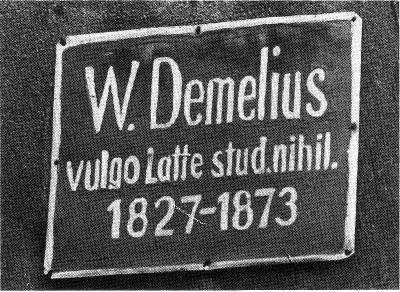

Abbe, Ernst * 1840 Eisenach, †
1905 Jena; Physiker, Industrieller, Sozialreformer; er studierte 1857/61
Math. und Physiker in Jena und Göttingen; danach wirkte
A. als Privatdozent in Frankfurt a.M.; 1863 siedelte er nach
Jena über, wo er 1870 zum Prof. berufen wurde; ab 1866 arbeitete A. mit C.
Zeiss; zusammen und begründete 1871/72 den wiss. Mikroskopbau; nach dem Tod
von C. Zeiss; wurde A. Alleineigentümer der Opt. Werkstätten Carl Zeiss, die
er 1889 in die "Carl-Zeiss-Stiftung" umwandelte; A. führte soziale Maßnahmen
für die Beschäftigten ein (u. a. Achtstundentag und Pensionen), initiierte
und förderte zahlreiche Jenaer Kultureinrichtungen (u. a. Volkshaus, Volksbad).
W: Saalgasse 18, Neugasse 23, Fürstengraben
25, Schillergäßchen 2, Leutergäßchen (Gebäude wurde infolge der Erweiterung
des Zeiss-Werkes 1912 abgetragen und in der Mühlenstr. originalgetreu wiederaufgebaut);
GT: 1. (vor 1928) Neugasse 23, erneuert 1989; 2. (vor 1934) Goetheallee 25,
erneuert 1989; 3. (vor 1928) Schillergäßchen 2, erneuert 1976; 4. (nach 1912)
Mühlenstr. 103, erneuert 1976
Achenbach, R. eine GT mit den Daten 1790/96 befand sich 1928 bis nach 1934 am Haus Rathausgasse 1; über den
Träger dieses Namens konnte bereits Thieme nichts aussagen
Amo, Anton Wilhelm * um 1700 b. Axim im heutigen
Ghana, † nach 1752 Axim; Philosoph; er kam 1707 als Geschenk einer Handelsgesellschaft
an den Wolfenbütteler Hof; nach Studien in Wittenberg war er Magister in Halle und Jena (1739/47); A. war der
erste Afrikaner, der an einer europ. Hochschule lehrte
W: Jenergasse
GT:
(1987) Jenergasse 9

Amsdorf, Nikolaus von * 1483 Torgau,
† 1565 Eisenach; Theologe; als Wittenberger Prof. und Kanonikus gehörte er
zu den engsten Mitarbeitern Luthers; 1552 ernannte ihn Hz. Johann Friedrich
I. zum ersten Landesbischof des nach dem Schmalkaldischen Krieg von Weimar
aus regierten ernestinischen Reststaates; als solcher gehörte A. zu den Initiatoren
der Jenaer Luther-Ausgabe.
W: Schloß
GT: (1858) Schloß, Gebäude abgerissen 1904/05;
E
Andersen, Hans Christian * 1805
Odense, † 1875 Kopenhagen; Dichter; unternahm viele Auslandsreisen; 1844
und 1846 hielt er sich als Gast des Erbprinzen Carl Alexander in Weimar auf
und besuchte von dort aus den Verleger Frommann und den Philologen O. L.
B. Wolff in Jena.
W: unbekannt
GT: 1. (vor 1928) Löbdergraben 6; 2. (1988)
Markt 19 (= Vorderhaus)
Apelt, Ernst Friedrich * 1812 Reichenau/Oberlausitz, † 1859 Oppelsdorf b. Zittau; Philosoph, Mathematiker, Astronom;
studierte 1831 in Jena; nach Marktscheidearbeit im väterlichen Bergwerk 1835
Prom.; danach hielt er als Pdz. math. und naturwiss. Vorlesungen; 1856 wurde
er als Nachfolger von Fries und Mirbt zum Prof. phil. berufen; A. war Mitarbeiter
der "Jenaer Allgemeinen LiteraturZeitung".
W: Unterm Markt
GT: (1929) Löbderstr. 7, Gebäude 1945
zerstört
Arndt, Ernst Moritz * 1769 Groß-Schoritz/Rügen, † 1860 Bonn; politischer Publizist, Historiker, Lyriker; der Sohn
eines freigelassenen Leibeigenen studierte in Greifswald und Jena (1793/94)
Theol. und Gesch.; in der Zeit der Befreiungskriege wurde A. u. a. bekannt
durch patriotische Lieder und Flugschriften.
W: Leutragasse 7
GT: (1858) ebd., Gebäude 1945 zerstört;
E
Arumäus, Dominicus * 1579 Leuwarden/Friesland,
† 1637 Jena; Jurist; nach Studium in Paris, Oxford und Rostock 1600 Promotion in Jena; er lehrte als erster öffentliches
Recht, insbes. Staatsrecht, als selbständige Disziplin, ab 1605 als Prof.;
er war einer der bedeutendsten Juristen seiner Zeit; daneben wirkte er zugleich
als Gesandter und Rat des Weimarer Hofes; A. stiftete seine bedeutende Bibliothek
der Universität.
W: H. d. Kirche ("Wedelei")
GT: 1. (1858)
ebd., Gebäude 1880 abgerissen; 2. (nach 1991) Coll. Jen.

Dominicus Arumäus, Gemälde von unbek. Künstler,
1619
Asmus mit diesem Namen versehen,
befand sich 1928 eine GT an einem Hinterhaus des Löbdergrabens; möglicherweise
wurde damit Guido Asmus aus Weimar geehrt, der 1843/44 Rechtswissenschaften in Jena studierte; Näheres ist
jedoch nicht feststellbar
Ast, Georg Anton Friedrich * 1778
Gotha, † 1841 München; Philologe; studierte 1798 Theol. und Phil. in Jena; nach der Prom. zum Dr. phil.
hielt er als Pdz. ab 1802 Vorlesungen zur Klass. Philol.; 1805 wurde er als
Prof. an die Universität Landshut berufen, später
wirkte er in München.
W: Krautgasse 6
GT: (1858) ebd., verloren vor 1934
Auerbach, Felix: * 1856 Breslau,
† 1933 (Freitod) Jena; Physiker; nach Studium in Breslau, Heidelberg und
Berlin wirkte er als Privatdozent in Breslau; 1879 erhielt A. die von E.
Abbe errichtete a.o. Prof. für theor. Physik in Jena; hier erwarb er sich
besondere Verdienste bei der Profilierung der Experimentalphysik als Lehrfach;
A. war der erste Biograph Abbes (1918); er unterstützte auch die progressiven
Bestrebungen des Jenaer Kunstvereins und des Weimarer Bauhauses; 1924 beauftragte
er den Architekten W. Gropius mit der Projektierung seines neuen Wohnhauses.
W: Unt. Löbdergraben, Forstweg, Mozartstr.
1, Schaefferstr. 9
GT: 1. (nach 1945) Helmholtzweg 5 (Physikalisches Institut);
2. (1983) Schaefferstr. 9
Augusti, Johann Christian Wilhelm
* 1772 Escheberge b. Gotha, † 1841 Koblenz; Orientalist, Theologe; studierte
ab 1790 in Jena; lehrte ab 1798 als Pdz. orient. Sprachen, ab 1803 als Prof.;
1807 wurde er zugleich Hon.Prof. für Theol.; 1808 verlieh die Universität
Rinteln ihm den Dr. theol. h. c.; 1812 wurde er als Prof. theol. nach Breslau
berufen, später nach Bonn, dort war er zugleich Konsistorialdirektor.
W: Lutherplatz, neben "Schwarzer Bär";
GT: 1. (1858) ebd., Gebäude vor 1934 abgerissen; 2. (vor 1928) Rathausgasse
1, Gebäude 1945 zerstört
Bach, Johann Nikolaus * 1669 Eisenach,
† 1753 Jena; Komponist; als Sohn des aus Arnstadt gebürtigen Kantors Johann
Christoph B. war er ein Vetter des großen Komponisten und Leipziger Thomaskantors;
das Orgelspiel erlernte B. bei dem Jenaer Stadtorganisten J. M. Knüpfer,
dessen Nachfolger (und UMD) er 1696 nach einem Studienaufenthalt in Italien
wurde; von kulturhistorischem Wert ist die von B. zwischen 1720 und 1745
komponierte frühdeutsche Oper "Der Jenaische Wein- und Bierrufer".
W: Jenergasse 6
GT: (1989) ebd.
Bachmann, Carl Friedrich * 1784
Altenburg, † 1855 Kreuznach/Pfalz; Philosoph, Mineraloge; studierte ab 1803
Theol. und Phil. in Jena, wurde 1806 prom. und wirkte
ab 1810 als Pdz., später als Prof. phil. in Jena; B. war anfänglich ein
Anhänger Schellings und Hegels, später neigte er dem Neoplatonismus zu und
wandte sich gegen die Hegelianer; als Dekan der Phil. Fak. begutachtete er
die in absentia eingereichte Dissertation von K.Marx und schlug ihre Annahme
vor; B. wurde 1832 Direktor der neugegründeten Mineralogischen Anstalt.
W: Markt 17,
GT: 1. (1858) ebd., verloren
vor 1934; E.; 2. (1929) Schillerstr. (Mineralogisches Institut), Gebäude
1945 zerstört
Baedecker, Karl * 1877 Leipzig,
†1914 (gefallen) Lüttich; Physiker; nach Studium in Genf, Heidelberg und München habilitierte
er sich 1907 in Jena; danach wurde er zum a.o. Prof. berufen; B. entdeckte
die künstliche Elektronenleitfähigkeit und unternahm die ersten Versuche
auf dem Gebiet der Halbleiterphysik.
W: Marienstr. 10, Hilgenfeldweg
GT:
(nach 1945) Helmholtzweg 5 (Physikalisches Institut)
Baner (auch Banner), Johan (auch Banner), Johan * 1596
Djursholm b. Stockholm, † 1641 Halberstadt; schwedischer Feldherr; zeichnete
sich während des 30jährigen Krieges besonders in der Schlacht bei Breitenfeld
aus und wurde 1634 zum Feldmarschall ernannt; B. war Mitglied der in Weimar
gegründeten "Fruchtbringenden Gesellschaft"; B. hielt sich mit seinen Truppen
1637 in Jena auf und ließ die Camsdorfer Brücke sprengen, um das sich in
Vormarsch befindliche kaiserliche Heer aufzuhalten.
W: unbekannt
GT: (nach 1934) Markt ("Zur Sonne"), verloren
1973
Bardeleben, Karl Heinrich von *
1849 Gießen, † 1918 Jena; Mediziner; nach Studium in Greifswald, Heidelberg,
Berlin und Leipzig Ass. am Anatomischen Institut in Leipzig; ab
1873 war er an der Universität Jena, zuerst als Prosektor, dann als Pdz.
und Prof.; ab 1886 war B. Generalsekretär der Anatomischen Gesellschaft.
W: V. d. Neutor, Teichgraben, Am Landgrafen,
Kahlaische Str. 2, Forstweg 25
GT: (1977) Teichgraben 7 (Anatomisches Institut)
Batsch, August Johann Georg Karl
* 1761 Jena, † 1802 ebd.; Botaniker; er studierte Naturwiss. und Med. in Jena; wurde von Goethe gefördert; Prom.
1781 zum Dr. phil. und lehrte danach als Pdz., ab 1787 als a.o. Prof. med.
Botanik, Min., Chemie und Zool.; B. wurde 1792 als o. Prof. für Naturwiss. in die Phil. Fak. berufen; er war
Begründer und erster Direktor der Naturforschenden Gesellschaft (1793); ab
1794 leitete B. den Aufbau des Bot. Gartens
W: Rathausgasse 1
GT: 1.
(1858) ebd., Gebäude 1945 zerstört; 2. (1929) Goetheallee 28 (Inspektorhaus
des Bot. Gartens), verloren, Erneuerung nach 1991
Baumgarten-Crusius, Ludwig Friedrich Otto * 1788 Merseburg, † 1843 Jena; Theologe; nach Besuch der Grimmaer
Fürstenschule Studium in Leipzig; 1812 Berufung nach Jena als a.o. Prof.
theol. (1823 o. Prof.); B. zeichnete sich vor allem auf dem Gebiet der Dogmengeschichte aus,
für K. von Hase war er der "Historiker des religiösen Geistes".
W: Löbdergraben 34
GT: (1858) ebd., verloren nach 1934
Bebel, August * 1840 Köln-Deutz,
† 1930 Passug b. Chur/Schweiz; Drechsler, Führer der deutschen und internationalen
Arbeiterbewegung; gemeinsam mit W. Liebknecht stand er 1866 an der Spitze
der Volksbewegung für ein einheitliches demokratisches Deutschland; 1869
war B. Mitbegründer der SPD in Eisenach; als Reichstagsabgeordneter bestimmte
er die Entwicklung einer revolutionären Parlamentstaktik der deutschen Sozialdemokraten;
er trat als vielseitiger Publizist im Interesse der Arbeiterklasse auf; internationale
Anerkennung erlangte besonders sein Buch "Die Frau und der Sozialismus";
als Führer der deutschen Sozialdemokraten weilte B. mehrfach in Jena, so
1869 auf Einladung Abbes und Sys im Gasthof "Zum goldenen Engel", 1904 und
1905 zum Parteitag der SPD.
W: Weimar-Geraer-Bahnhofstr. 1, Wagnergasse
25 (,Kaiserhof")
GT: 1. (nach 1945) Engelplatz ("Zum goldenen Engel"), Gebäude
1984 abgerissen; 2. (1991) Wagnergasse 25
Becher, Johannes R. * 1891 München,
† 1958 Berlin; Dichter, Kulturpolitiker; er kam 1917/18 nach Jena, um sich
in der von O. Binswanger geleiteten Psychiatrischen Universitätsklinik behandeln
zu lassen; später hatte er die Absicht, das in München unterbrochene Medizinstudium
in Jena fortzuführen; die im Exil entstandenen Gedichte (u. a. "Jena oder
die schwebende Stadt", 1938) gehören zu den bedeutendsten literarischen Zeugnissen,
die Dichter der Saalestadt zueigneten; 1951 ehrte ihn die Stadt mit der Verleihung
der Ehrenbürgerwürde, 1958 die Universität als Ehrensenator.
W: Sophienstr. 9 und 22
GT: (1961) Leninstr. 9
Bechstein, Johann Matthäus * 1757
Waltershausen, † 1822 Dreißigacker b. Meiningen; Zoologe, Forstwissenschaftler;
er hielt sich vermutlich 1778/80 in Jena auf; B. gründete die Sozietät der
Forst- und Jagdkunde und war Direktor der Forstlehranstalt in Dreißigacker;
B. schrieb eine "Gemeinnützige Naturgeschichte Deutschlands aus allen drei
Reichen der Natur" (4 Bde., 1789/95); B. war der Onkel des Dichters Ludwig
B..
W: unbekannt
GT: (nach 1934) Zwätzengasse 18, erneuert
1989
Beier, Adrian * 1600 Glauchau,
† 1678 Jena; Theologe, Geschichtsschreiber; nach Studium in Jena, Leipzig
und Erfurt wirkte er ab 1629 in Jena als Prediger und Diakon, von 1635 an
als Archidiakon; B. war der bedeutendste Jenaer Stadtchronist des 17.Jh.;
seine Werke wie "Chronologus Jenensis" u. "Architectus Jenensis" haben heute
noch großen Quellenwert.
W: H. d. Kirche 5/6, Leutragasse, Jenergasse
("Zum grünen Schilde") (Eigentümer)
GT: (nach 1991) Jenergasse 13
Beireis, Gottfried Christoph *
1730 Mühlhausen, † 1809 Helmstedt; Naturwissenschaftler, Mediziner; studierte
1750/53 Jura, Chemie, Physik, Med. und Math. in Jena; ab 1759 wirkte er als Prof.
der Naturgesch. und Med. in Helmstedt; im Laufe seines Lebens hatte
er bedeutende Sammlungen mit Gegenständen aus allen Gebieten der Kunst und
Wissenschaft zusammengetragen.
W: Löbdergasse 4
GT: (1858) ebd., Gebäude 1945 zerstört
Bergemann-Könitzer, Martha * 1874
Jena, † 1955 ebd.; Bildhauerin; sie nahm ab 1888 an sprachlichen, philosophischen
und kunstgeschichtlichen Kursen teil und erhielt Kunstunterricht bei Weichberger
in Weimar; 1898/1904 war B. Mitglied des Künstlerinnenvereins München; ab
1907 wirkte sie in Jena, hier schuf sie u. a. Porträts, Brunnen und Grabmäler;
zwei Jahre unterrichtete sie an der Zeiss-Zeichenschule; B. war 1922/34 in
der Lehrerausbildung tätig, ab 1930 an der Universität.
W: Villengang 3
GT: (nach 1991) ebd.
Berger, Hans * 1873 Neuses b. Coburg,
† 1941 Bad Blankenburg/Thür.; Mediziner; nach Studium 1892/97
in Berlin, Würzburg, Jena und Kiel wirkte B. als Arzt in Jena, ab 1901 als
Pdz. und 1906/38 als Prof. für Psychiatrie und Neurologie; 1919 wurde er
als Nachfolger O. Binswangers Direktor der Psychiatrischen Klinik; B. ist
der Entdecker der bioelektrischen Ströme im menschlichen Gehirn, er setzte
sie in Beziehung zu den psychischen Vorgängen im Menschen und schuf damit
die Grundlagen der Neuropsychologie.
W: Ob. Philosophenweg 3
GT: (nach 1945)
Philosophenweg 3 (Klinik für Psychiatrie und Neurologie)
Bernhard von Weimar * 1604 Weimar,
† 1639 Neuenburg/Baden; Heerführer; der Urenkel Joh. Friedrich I. war ab
1622 im Heer des Dänenkönigs und trat 1631 an die Seite des schwed. Königs
Gustav Adolf; nach dessen Tod in der Schlacht bei Lützen (1632) übernahm
er die Führung und behauptete das Schlachtfeld; B. wollte den 30jährigen
Krieg um jeden Preis zur militärischen Entscheidung bringen, wurde aber nach
der verlorenen Schlacht bei Nördlingen (1634) in die Defensive gedrängt.
W: unbekannt
GT: (vor 1934) Steinweg 38, verloren vor
1934, E
Bernstein, Georg Heinrich * 1787
Cospeda b. Jena, † 1860 Lauban/Schlesien; Orientalist; nach Studium der Theol.
und orient. Sprachen lehrte er ab 1810 als Privatdozent in Jena; 1812 wurde B. als Prof. nach
Berlin berufen und 1820 nach Breslau; B. entwickelte die Syriologie zu einem
selbständigen Lehr- und Forschungsgebiet.
W: unbekannt
GT: (vor 1928) Johannisstr. 5, Gebäude 1945
zerstört
Bezold, Albert von * 1836 Berlin,
† 1868 Würzburg; Mediziner; nach Studium in Würzburg und Berlin wirkte er
ab 1861 als Prof. in Jena und Direktor des Physiologischen
Laboratoriums; von 1865 an war er Prof. in Würzburg, führte dort Untersuchungen
über die elektrische Erregung der Nerven und Muskeln durch.
W: H. d. Rinne
GT: (vor 1934) Teichgraben
8 (Physiologisches Institut), Gebäude 1945 zerstört
Biedermann, Wilhelm * 1854 Bilin/Böhmen,
† 1929 Jena; Mediziner; er studierte in Prag und war dort einige Jahre Pdz.;
ab 1888 wirkte er in Jena als Prof. und Direktor des Physiologischen Institutes;
1927 ein..
W: Botzstr. 4
GT: (vor 1934) Teichgraben
8 (Physiologisches Institut), Gebäude 1945 zerstört
Bieglein-Kreußler, Johann Wolfgang (siehe Kreußler)
Bielcke, Johann * 1643 Wickerstedt
b. Apolda, † 1706 Jena; Verleger, Buchhändler; B. hatte bei seinem späteren
Schwiegervater, dem Jenaer Buchdrucker B. Lobenstein, gelernt, bevor er 1665
neben dem "Burgkeller" eine eigene Buchhandlung eröffnete; in 40 Jahren brachte
er mehr als 1500 Werke heraus und gehörte damit zu den bedeutendsten Verlegern
seiner Zeit; sein Sohn Joh. Felix B. führte das Unternehmen noch bis 1749
weiter; B. war auch Stadtrichter und Bürgermeister.
W: Johannisgasse 26
GT: (nach 1990) Weigelstr. 7
Johann Bielcke, Kupferstich von unbek. Künstler (J. F.
S.), nach 1706
Binswanger, Otto * 1852 Münsterlingen/Schweiz,
† 1929 Kreuzlingen; Mediziner; Studium in Heidelberg, Straßburg und Zürich
und Ass. in Göttingen, Breslau und an der Berliner Charite;
1882 wurde er zum Direktor der Landesirrenanstalt in Jena berufen (Ein. 1919);
B. reformierte die Klinik von Grund auf entsprechend modernem Erkenntnisstand;
die Entwicklung der Kinderpsychiatrie und der Psychotherapie wurde von ihm
nachhaltig gefördert; B. war Mitglied der "Gesellschaft der Kunstfreunde
von Jena und Weimar" und als solcher ein Förderer des zeitgenössischen. Kunstschaffens.
W: Philosophenweg (Direktorgebäude der
Klinik)
GT: (nach 1945) Philosophenweg 3 (Klinik für Psychiatrie und Neurologie)
Birken, Sigmund * 1626 Wildstein
b. Eger/Böhmen, † 1681 Nürnberg; Dichter; nach jur., philol. und theol.
Studien in Jena (1643/45) war er zunächst Prinzenerzieher am Wolfenbütteler
Hof; dann lebte er als Schriftsteller in Nürnberg; B. war Mitglied des "Pegnesischen
Blumenordens", eine der einflußreichsten Dichtergesellschaften des 17. Jh.,
und der Weimarer "Fruchtbringenden Gesellschaft".
W: unbekannt
GT: (nach 1991) Coll. Jen.
Bismarck, Otto Fürst von * 1815
Schönhausen/Altmark, † 1898 Friedrichsruh b. Hamburg; preußischer Staatsmann;
1871/90 Reichskanzler des von ihm mitbegründeten Deutschen Kaiserreiches;
B. hielt sich bereits als Göttinger Student 1837 in Jena auf, wurde aber
wegen eines geplanten Duells aus der Stadt gewiesen; 1892 folgte er der Einladung
von Stadt und Universität und hielt auf dem Jenaer Markt - erstmals wieder
nach seinem erzwungenen Rücktritt als Kanzler - eine öffentliche Rede; die
SPD protestierte entschieden gegen den Auftritt des ehemaligen Reichskanzlers.
W: Johannisgasse 5?, Lutherplatz 2 ("Schwarzer
Bär")
GT: 1. (vor 1934) "Schwarzer Bär", verloren, erneuert nach 1991; 2.
(vor 1934) Jenergasse 14, verloren
Blumenbach, Johann Friedrich *
1752 Gotha, † 1840 Göttingen; Mediziner; 1769/72 Studium der Med. in Jena, danach in Göttingen; ab 1776
lehrte er dort als Prof. med., zugleich war B. Unteraufseher des Akademischen
Museums; 1779 erschien die erste Auflage seines "Handbuches der Naturgeschichte";
B. gehörte zu den Mitbegründern der wiss. Zoologie in Deutschland und erhob
erstmals an einer Universität die Naturgeschichte des Menschen zum Lehrfach;
er war Mitglied wiss. Akademien (Bologna, Paris); wiss. Interessen verbanden
ihn lange Jahre mit Goethe; 1796 besuchte B. Schiller in Jena; er war Mitglied
der Jenaer Mineralogischen Gesellschaft.
W: vermutlich Johannisgasse 16
GT: 1.
(1858) Markt 3, Gebäude 1945 zerstört; 2. (nach 1991) Johannisstr. 16
Böker, Hans Heinrich * 1886 Mexiko-City,
† 1939 Köln; Mediziner; nach Studium in Freiburg/Br., Kiel und Berlin war
er Ass. und Prosektor am Anatomischen Institut Freiburg; ab 1922 wirkte er
ein Jahr als a.o. Professor in Jena, danach wieder in Freiburg;
nach ausgedehnten Forschungsreisen zu den Kanarischen Inseln, nach Brasilien
und in die Sahara erhielt er 1932 in Jena den Lehrstuhl für Anatomie; 1938
nahm er eine Berufung an die Kölner Universität an.
W: Kernbergstr. 42
GT: (1977) Teichgraben 7 (Anatomisches
Institut)
Bötticher, Georg * 1849 Jena, †
1918 Leipzig; Unterhaltungsschriftsteller; B. wurde an dem Dresdner Polytechnikum
zum Musterzeichner für Tapeten und Teppiche ausgebildet; ab 1875 unterhielt
er in Wurzen ein eigenes Geschäft; der kabarettistische Gestus seiner heiter-ironischen
Texte (u. a. "Das lustige Jena", 1895) verweist bereits auf das literarische
Werk seines Sohnes Joachim Ringelnatz.
W: Jenergasse 6
GT: (1989) ebd.
Bojanus, Ludwig Heinrich von *
1776 Buchsweiler/Elsaß, † 1827 Wilna; Mediziner; studierte vermutlich 1794
in Jena, später war er Prof. in Wilna.
W: unbekannt
GT: (1858) Unterlauengasse
14, Gebäude um 1900 abgerissen, neue Anbringung: Unterm Markt 12a, verloren
Bose, Johann Andreas * 1626 Leipzig,
† 1674 Jena; Historiker; nach Studium in Leipzig und Helmstedt sowie ausgedehnten
Reisen kam B. 1654 nach Jena und wurde 1656 Prof. für Geschichte; B. vertrat
die neue Disziplin im Sinne historischer Staatenkunde und las erstmals über
osteurop., byzant. und türk. Geschichte; die bekannte Gliederung der Weltgeschichte
in Altertum, Mittelalter und Neuzeit geht auf B. zurück; zu seinen Schülern
gehörten Pufendorf und Leibniz.
W: Löbdergasse 6
GT: (1858) Löbdergasse
20/21, neue Anbringung: (1928) Rathausgasse l, Gebäude 1945 zerstört; E
Brandis, Carl Georg * 1855 Kopenhagen,
† 1926 Jena; Philologe, Historiker, Bibliothekar; Studium der klass. Philol.
und Geschichte in Leipzig, Bonn und Straßburg; im Anschluß daran war er Erzieher
des Prinzen Wilhelm Ernst von Sa.-Weimar; dann Bibliothekar in Berlin; 1903/25
war B. Direktor der UB Jena; B. war korrespondierendes Mitglied des Deutschen
Archäologischen Instituts und Mitglied der Akademie der Wissenschaften in
Erfurt; er erwarb sich Verdienste um die Neuorganisation und Verwaltung der
UB.
W: Lutherstr. 117
GT: (vor 1928) Bibliotheksplatz (UB),
Gebäude 1945 zerstört.; E
Braus, Hermann Daniel Abraham Otto * 1868 Burtscheid b. Aachen, † 1924 Würzburg; Mediziner; Studium in Bonn,
Jena, Heidelberg und Berlin; wurde 1894 Ass. an der Jenaer Anatomischen Anstalt, danach
Pdz.; ab 1901 Prof. in Heidelberg, später Würzburg.
W: unbekannt
GT: (1977) Teichgraben 7 (Anatomisches Institut)
Brehm, Alfred Edmund * 1829 Unterrenthendorf
b. (Stadt-)Roda, † 1884 ebd.; Naturforscher, Tiergärtner; nach seiner ersten
Forschungsreise nach Afrika studierte B. 1853/55 in Jena Naturwiss.; 1855
Prom. zum Dr. phil.; danach unternahm er weitere Reisen nach Spanien, Norwegen
und Lappland, wiederum Afrika, Westsibirien und an die mittlere Donau; 1858
erschienen in Jena seine "Reiseskizzen aus Nord-Ost-Afrika", die seinen Ruf
als "Volksschriftsteller" begründeten; 1863/66 leitete B. den Zoologischen
Garten Hamburg, danach 1867/74 das von ihm aufgebaute "Berliner Aquarium";
sein in vielen Auflagen und Sprachen erschienenes Hauptwerk "Illustriertes
Tierleben" ("Brehms Tierleben") machte ihn weltweit bekannt.
W: Löbdergraben, Saalgasse 4
GT: (vor
1934) Saalstr. 4, erneuert 1983, verloren 1988, erneuert 1990
Brendel, Zacharias (sen.) * 1553
Bürgel b. Jena, † 1626 Artern; Mathematiker, Physiker, Mediziner; der Sohn
eines Schusters studierte in Jena Phil. und Med.; nach Prom. 1581 in Padua
wurde B. 1583 in Jena als Nachfolger Flachs Prof. der Math. und zugleich
Stadtphysikus, 1588 bzw. 1592 auch Prof. der Physik und Med.; B. hielt als
erster Jenaer Prof. chem. Übungen ab und nahm öffentliche Leichensektionen
vor.
W: unbekannt
GT: (nach 1991) Coll. Jen.
Brentano, Clemens * 1778 Ehrenbreitstein
a. d. Mosel, † 1842 Aschaffenburg; Dichter; 1798 Studium in Jena, fand Zugang
zum Kreis der Frühromantiker; bei den Brüdern Schlegel lernte er die Schriftstellerin
Sophie Mereau kennen, die er 1803 heiratete; mit A. von Arnim gab er die
Volksliedersammlung "Des Knaben Wunderhorn" (1805/08) heraus.
W: unbekannt
GT: (1858) Steinweg 27, verloren vor 1934;
E
Brück (eigtl. Heinse, auch gen. Potanus), Gregor von * 1483 (1485?) Brück b. Magdeburg, † 1557 Jena; Jurist, Politiker;
er war Kanzler dreier sächsischer Kurfürsten und als solcher einer der Wegbereiter
der Reformation; B. gehörte zu den Verfassern der Augsburgischen Konfession;
ab 1547 lebte er in Jena und unterstützte die Gründung der Universität.
W: Am Kreuz 4
GT: (1858) ebd., Gebäude 1945 zerstört
Brunnquell, Johann Salomo * 1693
Quedlinburg, † 1753 Göttingen; Jurist; Studium in Jena und Leipzig; ab 1716
Adv. in
seiner Heimatstadt; 1717 war B. wieder in Jena, hier wurde er später Hofgerichtsadv.
und 1730 Prof. jur. sowie Beisitzer des Schöppenstuhls und des Hofgerichts;
1735 wurde er als Prof. des kanonischen Rechts nach Göttingen berufen.
W: Markt 19
GT: 1. (1858) ebd., erneuert
1988; 2. (vor 1928) Ernst-Thälmann-Ring 6 (= Hinterhaus)
Buchwald, Eberhard Heinrich Otto
* 1886 Breslau, † 1975 Warin/Meckl.; Physiker; nach Studium in Breslau, Würzburg, Bonn und München
war er zunächst Pdz., dann a.o. Prof. an der Universität seiner Heimatstadt;
1923 folgte er einem Ruf an die TH Danzig; ab 1945 lehrte er theor. Physik
an der Jenaer Universität (Ein. 1954); B. erwarb sich bleibende Verdienste
beim Neuaufbau des Physikalischen Instituts.
W: Hermann-Löns-Str. 65
GT: (nach 1945) Helmholtzweg 5
(Physikalisches Institut)
Budde(us), Johann Franz * 1667 Anklam, † 1729
Jena; Theologe, Philosoph; studierte in Wittenberg und Jena; bevor er 1693
nach Halle ging, lehrte er 1689/92 hier bereits Phil., ab 1705 Theol. wieder
in Jena; B. ist der bedeutendste Vertreter der Aufklärung in Jena; als Philosoph
stand B. dem Rationalismus Descartes und dem Empirismus Lockes nahe und
vertrat einen von Thomasius beeinflußten, auf praktische Wirksamkeit ausgerichteten
Wissenschaftsbegriff.
W: Johannisgasse 8
GT: 1. (1858) ebd.,
erneuert 1929, verloren vor 1934, 2. (nach 1991) Coll. Jen.
Johann Franz Buddeus, Gemälde von unbek. Künstler, nach
1705
Buder, Christian Gottlieb * 1693
Kittlitz/Oberlausitz, † 1763 Jena; Jurist, Historiker, Bibliothekar; Studium
in Leipzig und Jena, 1722 hier Universitätsbibliothekar; 1730 wurde er zum
Prof. jur. berufen, ab 1738 auch Prof. für Geschichte; er lehrte vor allem
Staats- u. Lehnsrecht; B. stiftete seine bedeutende Bibliothek und Handschriftensammlung
der Universität.
W: Löbdergasse (6 und 7)
GT: 1. (1858)
Löbderstr. 7, neue Anbringung: (1929) Coll. Jen., verloren um 1973; 2. (1929)
Bibliotheksplatz (UB), Gebäude 1945 zerstört.; E
Bursian, Conrad * 1830 Mutzschen
b. Grimma, † 1883 München; Altphilologe; nach Besuch der Thomasschule Studium
in Leipzig und Berlin, Reisen nach Italien und Griechenland; 1858/61 Prof. in Leipzig, danach in Tübingen und Zürich,
1869 in Jena und 1874 in München; B. war Mitglied zahlreicher Akademien und
wiss. Gesellschaften; er begründete 1873 die nach ihm benannten "Jahresberichte
über die Fortschritte der klassischen Altertumswissenschaft".
W: V. d. Neutor 3
GT: (1929) ebd., verloren
Carlwiß, Erich über den
Träger dieses Namens konnte bereits Thieme 1934 nichts aussagen; GT trug
die Jahreszahlen 1830-35.
GT: (vor 1934) Jenergasse 14, verloren nach 1934
Claudius, Matthias * 1740 Reinfeld/Holstein,
† 1815 Wandsbeck b. Hamburg; Lyriker, Publizist; 1759/63 studierte
er Theol. und Jura in Jena; in der "Teutschen Gesellschaft" fand C. den Hörerkreis
für seine ersten Gedichte; der mit Lessing und Herder bekannte C. wurde berühmt
u. a. als Verfasser des Liedes "Der Mond ist aufgegangen".
W: unbekannt
GT: 1. (1858) Markt 19, erneuert
1988; 2. (vor 1934) Ernst-Thälmann-Ring 6 (= Hinterhaus)
Cornarius, Janus (eigtl. Johann Haynpol, Hagenbut od. Hanbut) * 1500 Zwickau, † 1558 Jena; Mediziner; nach
Studium in Wittenberg Reisen in die Niederlande, nach England, Frankreich,
Italien und in die Schweiz; dort studierte er u. a. Originalwerke der antiken
Med.; nach Aufenthalt in Basel wirkte C. als Stadtphysikus in Nordhausen,
Frankfurt a.M. und Zwickau; 1542 wurde er als Prof. nach Marburg berufen,
1558 nach Jena, wo er der erste Dekan der Med. Fak. wurde.
W: Johannisgasse
GT: 1. (1858) Johannisstr.
12, verloren vor 1934; 2. (1979) Coll. Jen.
Credner, Karl August * 1797 Waltershausen,
† 1857 Gießen; Theologe; er studierte in Jena, Breslau und Göttingen; wirkte
ab 1828 als Privatdozent in Jena und ab 1830 als Prof.; 1832 wurde
er Prof. in Gießen.
W: Johannisplatz 20
GT: (1858) ebd., verloren vor 1934
Creuzer, Georg Friedrich * 1771
Marburg, † 1858 Heidelberg; Altphilologe; er studierte 1790/91 in Jena und
wirkte ab 1807 als Prof. in Heidelberg; C. verfaßte die weithin
beachtete "Symbolik und Mythologie der alten Völker" (1810/12).
W: Schloßgasse 17
GT: (1858) Unterm Markt 4, verloren
1973
Czapski, Siegfried * 1861 Obra/Prov.
Posen, † 1907 Jena; Mathematiker, Physiker; Studium in Göttingen, Breslau,
Berlin schloß er 1884 mit der Prom. ab; nach wiss. Arbeit in Berlin war er
ab 1885 persönlicher Mitarbeiter E. Abbes in Jena und arbeitete auf dem Gebiet
des Prismenfeldstechers; ab 1889 war C. neben Abbe und Schott Mitglied der
Geschäftsleitung der Fa. Carl Zeiss.
W: Forstweg 23
GT: (1929) Prof.-IbrahimStr. 23, verloren;
E
Czermak, Johann(es) Nepomuk * 1828
Prag, † 1873 Leipzig; Mediziner; nach wiss. Tätigkeit in Prag, Graz, Krakau
und Pest wurde er 1865 nach Jena berufen; hier gründete C. ein physiologisches
Privatlaboratorium; aufgrund der beengten Verhältnisse in Jena folgte er
1870 einem Ruf an die Universität Leipzig, wo er den Garciaschen Kehlkopfspiegel
vervollkommnete und ihn in die Praxis überführte.
W: Teichgraben, Fürstengraben
GT: (1934)
Teichgraben 8 (Physiologisches Institut), Gebäude 1945 zerstört
Danovius, Ernst Jakob * 1741 Redlau
b. Danzig, † 1782 (Freitod) Jena; Theologe; er studierte in Helmstedt, Göttingen
und Greifswald; 1765 wurde er Schulrektor in Danzig und 1768 als o. Prof.
der Theol. nach Jena berufen; er war ein typischer Vertreter der deutschen
Aufklärungstheologie.
W: Leutragasse 5
GT: (1858) ebd., Gebäude 1945 zerstört;
E
Danz, Johann Andreas * 1654 Sundhausen
b. Gotha, † 1727 Jena; Orientalist, Theologe; ab 1685 wirkte er als Prof.
der orient. Sprachen in Jena und ab 1710 als Prof. der Theol..
W: Löbdergasse 6
GT: (1858) Löbderstr.
20/21, neue Anbringung: (vor 1928) Rathausgasse 1, Gebäude 1945 zerstört
Danz, Johann Traugott Leberecht
* 1769 Weimar, † 1851 Jena; Theologe; er studierte in Jena und Göttingen
und war danach Lehrer am Weimarer Gymnasium; 1798 wurde er Rektor der Jenaer
Stadtschule und Pdz. an der Universität, 1809 Diakon und 1810
a.o. Prof. theol.; D. gehörte zu den namhaften Kirchenhistorikern des 19.
Jh.; seine "Ansicht der Stadt Jena in den Oktobertagen 1806" (mit Radierungen
von Roux) ist noch heute als Quellenwerk von Bedeutung.
W: Jenergasse 15, Johannisgasse 14;
GT: 1. (1858) Jenergasse 15, verloren; 2. (1889) Johannisstr. 14
Darjes, Joachim Georg * 1714 Güstrow, † 1791 Frankfurt
a.d.0.; Jurist, Pädagoge, Philosoph; nach Studium lehrte er als Pdz. Phil. in Jena; 1739 Prom. Dr. jur.; 1744
erhielt D. die Prof. für Moral und Politik; er gilt als der Begründer der
Kameralistik an der Universität Jena; 1761 gründete er in Camsdorf die sog.
Rosenschule, die als Realschule Unterricht und produktive Arbeit verbinden
sollte; 1763 wurde er Prof. jur. und phil. in Frankfurt a. d. 0..
W: Kollegiengasse 22, Camsdorfer Freigut
(Eigentümer)
GT: 1. (1858) Kollegiengasse 22, verloren vor 1934; 2. (nach
1991) Camsdorfer Ufer 1
Delbrück, Berthold * 1842 Putbus/Rügen,
† 1922 Jena; Philologe; nach Studium in Halle und Berlin war D. Hauslehrer
und Gymnasialprof., 1867 Privatdozent in Halle, 1869 Prof. für Vgl. Sprachwiss. in Jena; D. verfaßte grundlegende
Werke zur altind., grch., germ. u. indogerm. Sprachgeschichte und gehörte
zu den Mitbegründern der Vgl. Syntax.
W: Fürstengraben 6, Marienstr. 10
GT: (1929) Marienstr.
12, verloren; E
Delbrück, Clemens von * 1856 Halle,
† 1921 Jena; Politiker; er begann seine Laufbahn im preuß. Staatsdienst
als Landrat, war dann nacheinander Oberbürgermeister von Danzig, Oberpräsident
von Westpreußen und preuß. Minister für Handel und Gewerbe; D. hatte maßgeblichen
Anteil an der wirtschaftlichen Kriegsvorbereitung; nach seinem erzwungenen
Rücktritt 1916 lebte er in Jena; unter der Regierung Max von Badens gehörte
er noch einmal für kurze Zeit dem Kabinett an.
W: Westendstr. 24, Landgrafenstieg 1
GT: (nach 1934)
Landgrafenstieg 1
Delitzsch, Friedrich * 1850 Erlangen,
† 1922 Langenschwalbach/Rheinl.; Orientalist; er studierte in Leipzig und
Berlin; 1872 wollte der Dr. phil. aus Leipzig in Jena seine SanskritStudien
abschließen, wurde jedoch von E. Schrader angeregt, sich der Assyriologie
zuzuwenden; ab 1878 war er Prof. der semit. Sprachen und der Assyriologie
in Leipzig, später in Berlin; hier war er Direktor der Vorderasiatischen
Abteilung der Kgl. Museen; 1901/02 leitete er Ausgrabungen in Mesopotamien;
D. gehört zu den herausragenden deutschen Assyriologen und Orientarchäologen;
er gab zahlreiche wiss. Werke heraus und war Mitglied internationaler wiss.
Gesellschaften.
W: Jenergasse 14
GT: (vor 1928) ebd.
Demelius, Friedrich Wilhelm * 1801
Cospeda b. Jena, † 1874 Jena; "ewiger Student"; der Pastorensohn studierte
1827/73 an allen Fak. der Jenaer Universität; unter dem Spottnamen "Latte"
(od. "Bierlatte") erwarb er sich den zweifelhaften Ruf eines weithin bekannten
Jenaer Originals.
W: u. a. am Johannistor
GT: (vor 1928) Ballhausgasse 6

Demelius, Gustav * 1831 Allstedt,
† 1891 Wien; Jurist; D. studierte 1849/52 in Jena, Prom. zum Dr. jur. 1855;
er wirkte ab 1856 als Hochschullehrer in Österreich (u. a. in Prag, Krakau
und Wien).
W: Johannisgasse 5
GT: (vor 1928) ebd., Gebäude 1945
zerstört
Devrient, Otto * 1838 Berlin, † 1894 Stettin; Schauspieler, Dramatiker; D. entstammte der berühmten deutschen
Bühnenkünstlerfamilie und wirkte am Weimarer Hoftheater; 1875/76 spielte
er den Mephisto in der ersten Aufführung beider Teile des "Faust"; mit seinem
"Deutschen Bühnen- und Familien-Shakespeare" (1873/76) setzten sich die Werke
des engl. Dramatikers endgültig an dem deutschen Theater durch; 1881/84 lebte
D. in Jena und schrieb im Auftrag der Stadt ein Luther-Festspiel (1883).
W: Erfurter Str.
GT: (vor 1934) August-Bebel-Str. 22
De Wette, Wilhelm Martin Leberecht * 1778 Ulla b. Weimar, † 1849 Basel; Theologe; 1799/1802 studierte er
in Jena; 1807/08 wirkte er als Privatdozent in Jena, danach als Prof. in Heidelberg und Berlin; ab 1815 lebte
er in Weimar; er richtete an die Mutter des hingerichteten Jenaer Burschenschafters
K. L. Sand ein Trostschreiben, was ihn bei den Behörden in Mißkredit brachte;
ab 1822 war er Prof. in Basel.
W: Unterm Markt/Oberlauengasse
GT: 1.
(1858) ebd., Gebäude um 1900 abgerissen; 2. (1929) Oberlauengasse 2, verloren
nach 1945, erneuert 1990
Dexel, Walter * 1890 München, †
1973 Braunschweig; Kunsthistoriker, Maler, Grafiker; er studierte 1910/14
Kunstgeschichte und besuchte die Münchener Mal- u. Zeichenschule; Studienreisen
führten ihn nach Italien und Frankreich; 1916 Promotion in Jena, ließ sich hier als freischaffender
Gebrauchsgrafiker nieder; große Verdienste erwarb er sich um den 1903 gegründeten
Kunstverein, dessen Austellungsleiter (1916/20) und Geschäftsführer (1921/28)
er war; nach 1928 wirkte D. in Magdeburg, Berlin und Braunschweig; 1937 fielen
die Sammlung des Kunstvereins und auch seine eigenen Werke, u. a. das Hinterglasbild,
der Aktion "Entartete Kunst" zum Opfer.
W: Fuchsturmweg 15
GT: (nach 1991) ebd.
Diederichs, Eugen * 1867 Löbitz
b. Weißenfels, † 1930 Jena; Verleger; 1896 gründete D. in Florenz einen Verlag,
den er bald nach Leipzig und 1904 nach Jena überführte; hier entwickelte
er sich zum bedeutendsten deutschen Editionshaus impressionistischer und
neuromantischer Literatur; zu seinen Autoren gehörten u. a. L. N. Tolstoi,
Reymont und Andersen Nexö; D. war nacheinander mit den Schriftstellerinnen
H. Voigt-Diederichs (1875/1961) und mit L. von Strauß und Torney (1873/1956) verheiratet.
W: Sedanstr. 8, Beethovenstr. 30, Jenergasse
6 (Comptoir), Carl-Zeiß-Platz
GT: (nach 1991) Carl-Zeiß-Platz 4
Dilherr, Johann Michael * 1604
Themar, † 1669 Nürnberg; Historiker, Theologe; er studierte in Leipzig, Wittenberg,
Altdorf und Jena (1628/30); 1631 wurde er Prof. für Beredsamkeit, 1634 für
Geschichte und 1640 für Theologie; D. gehörte zu den bedeutenden Jenaer Historikern
während des 30jährigen Krieges; 1642 folgte er einem Ruf nach Nürnberg, später
war er dort Oberprediger und Direktor des Gymnasiums.
W: unbekannt
GT: (nach 1991) Coll. Jen.
Dingelstedt, Franz Frhr. von * 1814 Halsdorf b. Kassel, † 1881 Wien; Theaterintendant,
Schriftsteller; am Münchner Hoftheater erwarb er sich große Verdienste um
die Aufführung von Werken der deutschen Klassik; daraufhin wurde er 1857
nach Weimar berufen; ab 1867 war D. Direktor der Wiener Hofoper bzw. des
Burgtheaters; 1838 Prom. zum Dr. phil. in Jena; besuchte in der Weimarer
Zeit häufig Jena.
W: unbekannt
GT: (vor 1928) Jenergasse 14
Dinger, Hugo * 1865 Cölln b. Bautzen,
† 1941 Jena; Theaterwissenschaftler; nach Studium u. a. in München und Jena
(1894/96) war er Pdz. für Phil. und ab 1905 a.o. Prof.; 1922 erhielt er
einen Lehrauftrag für Dramaturgie und Ästhetik; D. erwarb sich bei der Erschließung
des theor. Werkes von R. Wagner bleibende Verdienste.
W: Am Landgrafen 2
GT: (nach 1941) Landgrafenstieg 3
Dobenecker, Otto * 1859 Kahla,
† 1939 Jena; Historiker, Pädagoge; er studierte zunächst Med., dann Gesch.,
Philol. und Germ. in Jena und wurde 1883 zum Dr. phil.
prom.; danach wirkte er als Lehrer am Gymnasium in Jena und ab 1909 als Direktor;
sein Lebenswerk war die Herausgabe des von D. Schäfer 1883 begonnenen Verzeichnisses
Thür. Urkunden ("Regesta Thuringiae"); ab 1885 gab D. mit J. E. A. Martin
(ab 1891 allein) die Zeitschrift des "Vereins für Thüringische Geschichte
und Altertumskunde" heraus; 1902 wurde er stellvertretender und 1926 Vorsitzender
dieses Vereins; 1929 wurde er von der Jenaer Universität zum Dr. theol. h.
c. prom..
W: Weimar-Geraer-Bahnhofstr. 9
GT: (nach 1934) Westbahnhofstr.
9
Döbereiner, Johann Wolfgang * 1780
Burg b. Hof, † 1849 Jena; Chemiker; nach Apothekerlehre bildete er sich autodidaktisch
auf dem Gebiet der Chemie weiter; durch Veröffentlichungen erlangte D. solch
einen Ruf, daß er 1810 (ohne höhere Schulbildung) auf den Lehrstuhl für Chemie
nach Jena berufen wurde; D. entwickelte sich zu einem der führenden Chemiker
seiner Zeit - mit seiner Triadenlehre schuf er erste Ansätze zu einer Systematisierung
der chem. Elemente; er entdeckte die katalytische Wirksamkeit des Platins
(Döbereiner-Feuerzeug).
W: Schloß, Neugasse 23
GT: (1858) Neugasse 23, erneuert
1989
Johann Wolfgang Döbereiner, zeitgen. Kopie nach G. Ph. Schmidt, 1825
Döderlein, Gustav Albert Max
* 1893 Leipzig, † 1980 München; Mediziner; er studierte Med. in München und wirkte als Arzt in München
und Berlin (Frauenklinik der Charite); 1935 erhielt D. einen Lehrauftrag
für Geburtshilfe und Gynäkologie; 1946 folgte er einem Ruf als Prof. und
Direktor der Frauenklinik und Hebammenlehranstalt nach Jena; er wurde 1958
ein. und übersiedelte später nach München.
W: Bachstr. 18
GT: (1968) ebd. (Frauenklinik)
Döderlein, Johann Christoph * 1746
Windsheim/Franken, † 1792 Jena; Theologe; er studierte in Altdorf Theol.,
war danach Hauslehrer; ab 1772 lehrte er als Prof. theol. in Altdorf, 1782 in Jena; er gehörte
gemeinsam mit Griesbach zu den Jenaer Vertretern der Aufklärungstheologie.
W: Markt 17, Leutragasse 5
GT: (1858) Leutrastr. 5,
Gebäude 1945 zerstört; E
Drese, Adam *1620 unbekannt, †
1701 Arnstadt; Komponist, Hofkapellmeister, Staatsbeamter; Hz. Wilhelm IV.
von Sa.-Weimar ließ D. in Warschau bei dem italienischen Komponisten M. Scacchi
ausbilden; danach wirkte D. als Kapellmeister und Komponist
an verschiedenen ernestinischen Höfen, so ab 1652 in Weimar; nach 1667 war
D. Kammersekretär und Komponist in Jena, wo er 1669 am Saumarkt ein Haus
errichten ließ; 1683 mußte er Jena verlassen, da die Kapelle aufgelöst wurde.
W: Saumarkt
GT: (1990) Unterm Markt 12a
Drews, Paul Gottfried * 1858 Eibenstock,
† 1912 Halle; Theologe; 1894/95 war er Prof. der prakt. Theol. in Jena; dann folgte er einem
Ruf nach Halle; 1901/08 wirkte er in Gießen, danach wieder in Halle; er verfaßte
bedeutende kirchenhistorische Werke.
W: Lutherstr. 33
GT: (1929) ebd., verloren vor 1934
Droysen, Johann Gustav * 1808 Treptow
Rega/Pommern, † 1884 Berlin; Historiker; 1848 gehörte der rechtsliberal
orientierte D. als Abgeordneter der Frankfurter Nationalversammlung an; 1851
folgte er einem Ruf nach Jena; hier widmete er sich vornehmlich der preuß.
Geschichte; D. gründete das Historische Seminar der Universität und war Mitinitiator
des "Vereins für Thüringische Geschichte und Altertumskunde"; D. ist einer
der bedeutendsten bürgerlichen Historiker des 19. Jh..
W: Markt, H. d. Rathaus
GT: 1. (1929)
Kl. Rathausgasse 3; 2. (1929) Postgasse 6, beide Gebäude 1945 zerstört; E
Ebers, Georg Moritz * 1837 Berlin,
† 1898 Tutzing/Oberbayern; Ägyptologe, Romancier; nach Studium in Göttingen
kam E. als Pdz. nach Jena und wurde 1868 a.o. Prof. für Altertumskunde;
von Jena aus unternahm er wichtige Forschungsreisen nach Ägypten und in den
Sudan; 1878 wurde er Prof. für Ägyptologie in Leipzig; seine im ägyptischen
Altertum spielenden Bücher gehören zum Typ des damals beliebten Professorenromans.
W: Fürstengraben
GT: (vor 1928) Fürstengraben 13, verloren;
E
Eckhardt, Johann Christian Ludwig von:
* 1732 Coburg, † 1800 Jena; Jurist; er studierte 1752 in Jena; danach
war er als Adv. und Syndicus in Coburg tätig; 1775 wurde er Regierungsrat
und Geheimer Archivar in Weimar; 1783 folgte er dem Ruf als Prof. jur. nach
Jena, hier war er zugleich Beisitzer des Hofgerichts und des Schöppenstuhls.
W: Am Kreuz 4
GT: (1858) ebd., erneuert 1929, Gebäude
1945 zerstört
Edelmann, Johann Christian * 1698
Weißenfels, † 1767 Berlin; Philosoph; er studierte 1720/24 in Jena Theol.;
E. schloß sich als Hauslehrer verschiedenen oppositionellen religiösen Strömungen
an; philosophisch war er von Spinoza und dem engl. Deismus beeinflußt und
versuchte, den Pietismus mit rational-aufklärerischem Denken zu verbinden;
neben einer Reihe phil. Schriften veröffentlichte er 1752 auch eine "Selbstbiographie".
W: unbekannt
GT: (nach 1991) Coll. Jen.
Eggeling, Heinrich von * 1838 Helmstedt,
† 1911 Jena; Kurator der Universität; nach Studium der Philol. in Jena war er Schulrat in Meiningen;
E. wirkte ab 1884 als Kurator und hatte einen hervorragenden Anteil am Bau
und an der Ausgestaltung des UHG; anläßlich dessen Einweihung erhielt er
die Jenaer Ehrenbürgerwürde.
W: Kasernenstr. (S)
GT: (1929) Rathenaustr. S
Eggeling, Heinrich von * 1869 Meiningen,
† 1954 Neustadt a. Rbg. b. Hannover; Mediziner; er studierte 1889 in Jena;
nach Ass.-tätigkeit in Zürich, Würzburg und Straßburg wurde er 1902 Prosektor
am Anatomischen Institut Jena; 1904 a.o. Prof.; 1922/3S (Ein.) war er Prof. in Breslau; er war Herausgeber bzw. Begründer
verschiedener anat. Zeitschriften.
W: Kahlaische Str. 2, Sellierstr. 1,
Kasernenstr. (S)
GT: (1977) Teichgraben 7 (Anatomisches Institut)
Eichhorn, Gustav * 1862 Eisfeld,
† 1929 Jena; Mediziner, Historiker; nach Studium und Prom. (1887) in Jena
arbeitete er als Ass. in de Landesirrenheilanstalt; ab 1889
war er als prakt. Arzt tätig, daneben wirkte er als Konservator am Germanischen
Museum der Un versität; später wurde E. Direktor des Museums und Prof.; er
baute den Sammlungsbestand (Ur- und Frühgeschichte) mit eigenen Mitteln aus;
W: Leuträer: 33; Johannisstr. 19
GT:
(1934) Coll. Jen., verloren um 1973; E
Eichhorn, Johann Gottfried * 1752
Dörrenzimmern/Hohenlohe, † 1827 Göttingen; Orientalist; 1775 wurde er Prof.
der orient. Sprachen in Jena; er arbeitete besonders auf dem Gebiet der bibl.
Textkritik; 1788 erhielt er einen Ruf nach Göttingen; ab 1813 war er Mitdirektor
der dortigen Sozietät der Wisssenschaften.
W: Jenergasse 9
GT: (1858) ebd., verloren, erneuert
1929 und 1987
Eichstädt, Karl Heinrich Abraham
* 1772 Oschatz, † 1848 Jena; Altphilologe; er kam 1797 als Honorarprof. und
redaktioneller Mitarbeiter der von Schütz geleiteten "Allgemeinen Literatur-Zeitung"
nach Jena; 1804 wurde er dessen Nachfolger auf dem Lehrstuhl für Poesie und
Beredsamkeit und gründete als Ersatz der nach Halle verlegten Zeitschrift
die "Jenaische Allgemeine Literatur-Zeitung", die jedoch die Bedeutsamkeit
und wiss. Ausstrahlung ihrer Vorgängerin nicht erreichen konnte; E. war Bibliothekar
und Direktor des Philologischen Seminars.
W: Engelplatz 8, Am Kreuz 4
GT: 1.
(1858) Engelplatz 8, neue Anbringung: (1906) Am Kreuz 4, Gebäude 1945 zerstört;
2. (1839) an der Linde im Kollegienhof; 3. (1929) Bibliotheksplatz (UB),
Gebäude 1945 zerstört; 4. (nach 1991) Engelplatz 8 (Nachfolgebau)
Endemann, Friedrich * 1857 Fulda,
† 1936 Heidelberg; Jurist; der Sohn des Juristen Wilh. Sam. E. studierte
1877/78 in Jena; später war er Prof. in Königsberg, Halle und Heidelberg sowie
Mitglied der Heidelberger Akademie der Wissenschaften.
W: A. d. Graben
GT: (vor 1934) Fürstengraben 16, verloren
Endemann, Wilhelm Samuel * 1825
Marburg † 1899 Kassel; Jurist; er wurde 1862 als Prof jur. nach Jena berufen
und wirkte zugleich al OAGR; 1867 wirkte er in der Bundeskommission zur Ausarbeitung
einer allgemeinen Zivilprozeßordnung mit; 1872 nahm er am Allgemeinen Statistischen
Kongreß in Petersburg teil und war 1871/73 Mitglied des Reichstages 1876
wurde er als Prof. für Zivil- und Strafprozeßrecht sowie Handels- und Staatsrecht
nach Heidelberg berufen.
W: V. d. Neutor, Fürstengraben, Engelplatz; GT (vor 1928) Engelplatz 1; verloren,
Eppenstein, Otto
* 1876 Breslau, † 1942 Jena; Physiker; er studierte in Heidelberg, Breslau,
Wien und Jena Physik und Math.; Prom. zum Dr. phil.; 1900 wurde er Ass. in der Sternwarte, außerdem arbeitete
er in der Erdbebenforschungsstation; 1907/42 leitete E. im Zeisswerk die
Entfernungsmesser-Abteilung und betreute zwischen 1918 und 1938 die Abt.
Feinmeß, deren Mitbegründer er war; E. meldete 79 Patente an.
W: u. a. Sonnenbergstr., Grietgasse 10,
Beethovenstr. 44
GT: (nach 1991) Beethovenstr. 44
Erdmannsdörfer, Bernhard * 1833
Altenburg, † 1901 Heidelberg; Historiker; 1851/56 studierte er in Jena, darauf
Pdz., ab 1861 Pdz. bzw. Prof. in Berlin; E. verfaßte die
weithin beachtete "Deutsche Geschichte vom Westfälischen Frieden bis zum
Regierungsantritt Friedrich des Großen" (1892).
W: Jenergasse, V. d. Johannistor
GT: 1.
(vor 1928) Jenergasse 14 (für C. Erdmannsdörfer?); 2. (vor 1934) Fürstengraben
19 (= dasselbe Gebäude), verloren
Ersch, Johann Samuel * 1766 Glogau/Schlesien,
† 1828 Halle; Literaturwissenschaftler, Bibliothekar; nach Studium der Theol.
und Gesch. in Halle kam er 1786 als Pdz. nach Jena; später
wirkte er in Göttingen und Hamburg; 1800 kam E. als Mitarbeiter der "Allgemeinen
Literatur-Zeitung" und Universitätsbibliothekar wieder nach Jena; 1803 erhielt
er einen Ruf nach Halle und wurde dort 1808 Oberbibliothekar; E. war Herausgeber
und Redakteur verschiedener Literaturzeitschriften und gilt als der Begründer
der neueren deutschen Bibliographie.
W: Jenergasse 11
GT: 1. (1858) ebd.;
2. (1929) Bibliotheksplatz (UB), Gebäude 1945 zerstört; 3. (nach 1990) Goetheallee
23
Eucken, Rudolf * 1846 Aurich/Ostfriesl.,
† 1926 Jena; Philosoph; 1874 folgte E. einem Ruf nach Jena und gehörte in
den folgenden Jahrzehnten zu den herausragenden und international wirksamen
Wissenschaftlern der Jenaer Universität; E. entwickelte, an den Idealismus
Fichtes anknüpfend, eine metaphysisch-idealistische Lebensphilosophie, die
von der Überzeugung der Selbständigkeit des Geisteslebens getragen wurde
und ethisch-reformatorischen Zielen dienen sollte; seine von einem elitären
Standpunkt ausgehende Kulturphilosophie gewann weit über Deutschland hinaus
Resonanz, was ihm 1908 den Literatur-Nobelpreis einbrachte; E. war einer der
ersten Jenaer Prof.; die sich für das Frauenstudium einsetzten.
W: Neugasse 21, Forstweg 22, Botzstr. 5
GT: (1980)
Dr.-Otto-Nuschke-Str. 5

Rudolf Eucken, Gemälde von I. Eucken, 1900
Falkner, Albert * um 1860 Witzleben
b. Arnstadt, † 1925 Jena; Mediziner; F. studierte 1881/92 Med. (1890 Dr.
med.), danach wirkte er bis zu seinem Tod als prakt. Arzt in Jena.
W: Zwätzengasse 2, Saalbahnhofstr. 5,
Unt. Löbdergraben (15 und 14)
GT: (vor 1928) Löbdergraben 23, verloren um
1980
Fernow, Carl Ludwig * 1773 Blumenhagen/Uckermark, † 1808 Weimar; Kunsthistoriker; aus Geldmangel arbeitete er als
Schreiber, dann als Apotheker; Gönner ermöglichten ihm ab 1794 das Studium
der Kunstgeschichte, der alten Sprachen und Literatur in Rom; auf Goethes
Betreiben wurde er 1802 als Prof. der Archäologie nach Jena berufen; ab 1804
war er Bibliothekar in Weimar.
W: Fürstengraben 18
GT: (1858) Goetheallee 18
Feuerbach, Paul Johann Anselm Ritter von * 1775 Hainichen b. Jena, † 1833 Frankfurt a.M.; Jurist; F. studierte
ab 1792 Phil. und Jura in Jena, danach lehrte er hier als Pdz. Phil. und
ab 1801 als a.o. Prof. Jura; 1802 folgte er einem Ruf nach Kiel, kurz darauf
nach Landshut; später war F. Referendar im Justizministerium und im Polizeidepartement
München; ab 1814 war er 2. Präsident des Bamberger, ab 18171. Präsident des
Ansbacher Appellationsgerichtes; F. gilt als der einflußreichste deutsche
Strafrechtler des 19. Jh.; seine Hauptbedeutung liegt auf dem Gebiet der
Kriminalwissenschaft; F. begründete die moderne deutsche Strafrechtslehre
auf der Basis des Prinzips der Gleichheit aller vor dem Gesetz und leistete
wichtige Vorarbeit zu einer Reform des Strafrechtswesens ("Strafgesetzbuch
für das Königreich Bayern von 1813"); er war der Vater des Phil. Ludw. F..
W: Leutragasse 5
GT: 1. (1858) Johannisstr.
21, vor 1934 verloren; 2. (nach 1991) Coll.Jen.
Johann Paul Anselm Feuerbach, Denkmal von K.-H. Appelt,
1983
Fichte, Johann Gottlieb * 1762
Rammenau/Oberlausitz, † 1814 Berlin; Philosoph; der Sohn eines Leinewebers
studierte ab 1780 in Jena Theol., 1784 wirkte F. als Hauslehrer in der Schweiz;
nach Aufenthalten in Leipzig, Königsberg und Zürich kam er 1794 nach Jena
als Prof. phil.; F. gilt als Wegbereiter der dialektischen Methode; im sog.
Atheismusstreit 1788/89 wurde F. wegen seiner Lehrmeinung angegriffen und
erhielt Vorlesungsverbot; er verließ Jena und ging nach Berlin, dort wurde
er 1811 Rektor der neugegründeten Universität; F. rief in seinen "Reden an
die deutsche Nation" (1807/08) gegen die napoleonische Fremdherrschaft auf.
W: Leutragasse 5, Unterm Markt (12a);
GT: 1. (1858) Unterm Markt 12a, erneuert 1987; 2. (vor 1934) Leutrastr. 5,
Gebäude 1945 zerstört
Fick, Johannes Jacob * 1662 Jena;
† 1730 ebd.; Mediziner; nach Studium der Phil. und Med. in Jena, Leipzig und Helmstedt Prom. 1689
zum Dr. med.; ab 1691 war er Leibarzt des Grafen von Mansfeld, ab 1696 des
Hz. von Sa.-Weimar; 1715 wurde er nach Jena berufen, wo er die Fächer Chir.,
Anat. und theor. Med. vertrat.
W: H. d. Kirche 1
GT: (1977) Teichgraben 7 (Anatomisches
Institut)
Fischer, Gustav Paul Danckert *
1845 Altona b. Hamburg, † 1910 Jena; Verlagsbuchhändler; ab 1871 war F. Mitinhaber
des alten Jenaer Verlages von J. M. Maucke, ab 1878 dessen alleiniger Besitzer;
F. gab rechtswiss., hist., päd. und naturwiss. Schriften heraus und förderte
die Gründung wiss. Periodika; unter seinem zweiten Inhaber, dem Adoptivsohn
von F., Gustav Adolf F. (* 1878 Heilbronn, † 1946 Jena), erhielt der Verlag
mehr und mehr ein naturwiss.-med. Profil, das dem heute noch bestehenden
Unternehmen weltweites Ansehen einbrachte.
W: Jüdengraben
GT: (nach 1991) Villengang 2a
Fischer, Kuno * 1824 Sandewalde/Schlesien,
† 1907 Heidelberg; Philosoph; nach Studium in Leipzig und Halle wirkte F.
als Pdz. in Heidelberg, wo bis 1856 seine wesentlichsten
Werke erschienen, die ihm auf Betreiben reaktionärer kirchlicher Kreise Lehrverbot
eintrugen; im gleichen Jahr erhielt er eine Honorarprof. in Jena; hier zählte er bald zu
den erfolgreichsten und beliebtesten Hochschullehrern; F. forschte und lehrte
auf den Gebieten der Logik, Metaphysik, Gesch. der Phil. und Literaturgeschichte;
seine "Geschichte der neueren Philosophie" gehörte zu den einflußreichsten
Werken seiner Zeit; 1872 folgte er einem Ruf nach Heidelberg zurück.
W: Eichplatz, Fürstengraben, Holzmarkt,
Löbdergraben 32, Leutragasse 5
GT: 1. (vor 1928) Löbdergraben 32, verloren;
2. (vor 1928) Leutrastr. 5, Gebäude 1945 zerstört; E

Flacius (Vlacich) Illyricus, Matthias * 1520 Albona/Istrien (Jugosl.), † 1575 Frankfurt a.M.; Theologe; er
studierte in Venedig, Augsburg, Basel, Tübingen und ab 1541 in Wittenberg;
F. war ein begeisterter und kämpferischer Schüler Luthers; 1544 wurde er
Prof. für hebr. Sprache, mußte jedoch 1549 Wittenberg verlassen und ging
nach Magdeburg; 1557 wurde F. in Vorbereitung der Universitätsgründung nach
Jena berufen; als entschiedener Gegner Melanchthons bekämpfte er mit seinen
Anhängern ("Flacianer") jede von seinen Lehren abweichende Meinung; im Interesse
des Fortbestandes der Universität wurde F. 1562 des Landes verwiesen; Versuche,
in Regensburg, Antwerpen und Straßburg neu zu beginnen, scheiterten.
W: H. d. Rinne/Kollegiengasse
GT: 1. (1858) H.
d. Rinne 9, Gebäude 1969 abgerissen, 2. (nach 1991) Co11. Jen.

Matthias Flacius Illyricus, Gemälde von unbek. Künstler,
um 1560
Follen, Karl Theodor Christian Friedrich
* 1796 Romrod/Hessen, † 1840 Long Island Sound (USA); Jurist, Schriftsteller,
Pädagoge; er studierte in Gießen und war dort 1816 Mitbegründer der "Christlich-Teutschen
Burschenschaft" und Führer ihres radikalen Flügels; 1818/19 lehrte er als
Pdz. jur. in Jena; F. hatte als Burschenschafter
großen Einfluß auf K. L. Sand; nach dessen Attentat auf den Schriftsteller
Kotzebue emigrierte er über Frankreich und die Schweiz in die USA und wurde
1824 Prof. für deutsche Sprache und Literatur in Cambridge (Harvard University);
sein Eintreten für die Befreiung der Negersklaven führte 1835 zum Verlust
seiner Prof..
W: Am Rähmen 15
GT: (1858) ebd., verloren vor 1934;
E
Fortlage, Carl * 1806 Osnabrück,
† 1881 Jena; Philosoph, Psychologe, Musik- und Literaturwissenschaftler;
Student der Theol. in Göttingen, Berlin und München, danach
Lehrtätigkeit an den Universitäten Heidelberg und Berlin; ab 1846 lehrte
er als Prof. der Phil. in Jena; er beschäftigte sich mit altgrch.
Musikgesch. und altchristl. Hymnologie; in der Revolution 1848 gehörte F.
zu den aktiven Demokraten an der Universität.
W: Neugasse 21
GT: 1. (vor 1928) Engelplatz
11, verloren vor 1934, 2. (nach 1991) Neugasse 21
Frege, Gottlob * 1848 Wismar, †
1925 Bad Kleinen/Meckl.; Mathematiker; studierte in Jena 1869/71 und in Göttingen;
ab 1874 lehrte er in Jena als Pdz. bzw. ab 1879 als a.o. Prof. (1896 o. Prof.); bereits mit seiner "Begriffsschrift, eine
der arithmetischen nachgebildete Formelsprache des reinen Denkens" (1879)
leistete er einen bedeutenden Beitrag zur Grundlagenforschung in der Math.;
in dieser Erstschrift sowie in dem Werk "Grundgesetze der Arithmetik" (1893/1903)
schuf er das erste vollständige Axiomensystem der klass. Quantorenlogik und
wurde damit zum Mitbegründer der modernen math. und formalen Logik; F. blieb
zeitlebens die internationale Anerkennung versagt.
W: Saumarkt, Forstweg 29
GT: (1983) Prof.-Ibrahim-Str.
29

Gottlob Frege, Medaille von F. Schulz, 1979
Friderici, Johann Arnold * 1637
Altenburg, † 1672 Jena; Mediziner; er studierte 1655/59 in Jena; danach reiste
er durch Deutschland, Italien, England und Belgien; ab 1661 wirkte F. als
Prof. der Anat., Chir. und Bot. sowie Leiter des Bot. Gartens in Jena; zugleich
war er hzl. Physikus in Altenburg.
W: unbekannt
GT: (1929) Teichgraben 7 (Anatomisches Institut),
erneuert 1977
Fries, Jakob Friedrich * 1773 Barby
b. Magdeburg, † 1843 Jena; Philosoph, Mathematiker, Naturwissenschaftler;
aus der Herrnhuter Brüdergemeine kommend, studierte er 1795 in Leipzig und
ab 1796 in Jena Phil., Math. und Naturwiss.; ab 1797 wirkte er als Hauslehrer
in der Schweiz und ab 1801 als Privatdozent in Jena; 1805 ging F. als Prof. für Phil.
und Math. nach Heidelberg; bereits hier war er eng in die patriotische Bewegung
einbezogen; seine nationalen und liberalen Auffassungen, die die Würde des
Menschen als absoluten Wert ins Zentrum stellten, bewegten die Jugend trotz
aller konservativer Momente; ab 1816 wieder in Jena, wurde ihm 1819 im Zuge
der "Demagogenverfolgung" für fünf Jahre ein Vorlesungsverbot auferlegt;
erst ab 1837 durfte er wieder phil. Vorlesungen halten.
W: Nonnenplan, Leutragasse 5
GT: 1.
(1858) Leutrastr. 5, Gebäude 1945 zerstört.; 2. (nach 1991) Coll. Jen.
Frommann, Carl Friedrich Ernst
* 1765 Züllichau/Neumark, † 1837 Jena; Buchhändler, Verleger; übersiedelte
mit seinem kleinen Verlag 1798 nach Jena, wo es ihm gemeinsam mit dem Drucker
Carl Wesselhoeft gelang, ein wirtschaftlich bedeutendes Unternehmen aufzubauen;
zwischen 1800/30 war sein Haus der geistig-gesellige Mittelpunkt Jenas; Goethe,
Schiller, Fichte, Schelling, Hegel und die Brüder Schlegel gehörten zu seinem
Kreis.
W: Fürstengraben 18, Löbdergraben 6;
GT: 1. (1858) Goetheallee 18; 2. (vor 1928) Ernst-Thälmann-Ring 6; 3. (1988)
Markt 19 (= Vorderhaus)
Frommann, Friedrich Johann * 1797
Jena, † 1886 ebd.; Buchhändler, Schriftsteller; der Sohn von Carl Fr.F. erweiterte
das väterliche Unternehmen durch eine Sortimentsbuchhandlung; später schränkte
er die verlegerische Tätigkeit mehr und mehr ein, seine Hauptbemühungen galten
dem "Börsenverein der deutschen Buchhändler", zu dessen Mitbegründern er
1825 gehörte; er war Redakteur verschiedener Zeitungen und trat schriftstellerisch
hervor; F. war Ehrendoktor (1875) der Universität und Ehrenbürger der Stadt.
W: Fürstengraben 18, Löbdergraben 6;
GT:1. (vor 1934) Fürstengraben 18, verloren um 1934; 2. (vor 1934) Ernst-ThälmannRing
6; 3. (1988) Markt 19 (= Vorderhaus)
Froriep, Ludwig Friedrich von *
1779 Erfurt, † 1847 Weimar; Mediziner, Unternehmer; er studierte 1796/99
in Jena, wurde 1800 Pdz. (1803 a.o. Prof.) und Unterdirektor der von Loder
geleiteten Entbindungsanstalt; ab 1804 wirkte er in Halle und ab 1816 als
Arzt in Weimar; dort übernahm F. 1822 von seinem Schwiegervater Bertuch die
Leitung des Landes-Industrie-Comptoirs und des Geographischen Instituts.
W: Jenergasse 9
GT: (1858) ebd., erneuert 1929 und 1987
Fuchs, Johann Friedrich * 1771
Themar, † 1828 Jena; Mediziner; nach Studium und Prom. (1801) in Jena wirkte
er hier als Prosek tor und a.o. Prof. der Anat.; 1804 ging er nach Würzburg;
bereits ein Jahr später wurde er als o. Prof. der Anat. zurückberufen; F.
war zugleich Vorsteher des Ghzl.-Anat. Museums.
W: H. d. Kirche, Schloß, Kollegiengasse 22
GT: (1858)
Kollegiengasse23, verloren vor 1934
Fürbringer, Max * 1846 Wittenberg, † 1920 Heidelberg;
Mediziner; nach Studium in Jena ging er 1873 mit seinem Lehrer Gegenbaur
nach Heidelberg; 1879 folgte er einem Ruf nach Amsterdam; 1888/1901 wirkte
F. als Prof. der Anat. in Jena, danach in Heidelberg.
W: Grietgasse
GT: (1929) Teichgraben 7 (Anatomisches Institut),
erneuert 1977
Gabler, Johann Philipp * 1753 Frankfurt
a.M., † 1826 Jena; Theologe; studierte 1772/78 in Jena, danach Gymnasialprof:
in Dortmund; ab 1785 lehrte er als Prof. theol. in Altdorf, ab 1804 in Jena.
W: Leutragasse 5
GT: (1858) ebd., Gebäude 1945 zerstört
Gärtner, August Hieronymus * 1848
Ochtrup/Westfalen, † 1934 Jena; Mediziner; nach einer med. Ausbildung in
Berlin wirkte er als Militärarzt und ab 1884/86 am Kaiserlichen Gesundheitsamt
Berlin unter Robert Koch; danach wurde G. als a.o. Prof. der Hygiene (ab
1887 o. Prof.) nach Jena berufen, zugleich war er bis 1890 a.o. Prof. für gerichtliche
Med. und Amtsphysikus; G. erreichte einen wesentlichen Fortschritt in der
Seuchenbekämpfung in Thür.; seine hygienischen Arbeiten besonders auf wasserwirtschaftlichem
Gebiet gingen weit über die Grenzen Deutschlands hinaus (z. B. Petersburg,
Moskau, Kairo); G. gilt als der Begründer der modernen Trinkwasserhygiene;
G. war Mitglied vieler wiss. Gesellschaften; 1915 Dr. phil. h.c. der Universität Münster, 1918
Ehrenbürger Jenas.
W: Kahlaische Str. 3, Carl-Alexander-Platz
5, Magdelstieg 2
GT: (nach 1934) Magdelstieg 2
Gagern, Heinrich Frhr. von * 1799
Bayreuth, † 1880 Darmstadt; Politiker; G. kämpfte als preuß. Offizier in
der Schlacht bei Waterloo (1815); 1816/19 studierte er in Heidelberg, Göttingen
und Jena Rechtswiss. und wurde einer der führenden Burschenschafter; danach
war er im hess. Staatsdienst; aufgrund seiner liberalen Anschauungen wurde
er 1833 entlassen; 1848 wählte ihn die Frankfurter Nationalversammlung zu
ihrem Präsidenten; er entwarf das gegen linke Kräfte, auf eine Erhaltung
der Monarchie gerichtete Programm eines liberalen deutschen Bundesstaates
unter preuß. Führung, in loser Union mit Österreich (sog. "Gagernsches Programm").
W: unbekannt
GT: (1929) Leutrastr. 5, Gebäude 1945 zerstört;
E
Gall, Johann (Franz) Joseph * 1758 Tiefenbronn/Baden,
† Montonge b. Paris; Mediziner; hielt auf einer Vortragsreise durch Deutschland
im Winter 1804/05 auch in Jena Vorlesungen über seine damals weithin Aufmerksamkeit
erregende "Schädellehre".
W: Markt 22 ("Zur Sonne")
GT: (1858) ebd., verloren vor
1934
Gegenbaur, Carl * 1826 Würzburg,
† 1903 Heidelberg; Mediziner, Zoologe; 1855 wurde er zum a.o. Prof. der
Zool. nach Jena berufen; 1858 erhielt er auch den Lehrstuhl für Anat.; durch
seine wiss. Arbeit an der Entwicklungsgeschichte der Arten, der Histologie,
der Histogenese und der Vgl. Anat. erlangte er internationale Anerkennung;
er arbeitete im Geiste der Entwicklungslehre Darwins eng mit Haeckel zusammen
und begründete eine bedeutende wiss. Schule; 1873 übersiedelte er nach Heidelberg.
W: Sitzenplan, V. d. Neutor
GT: 1. (vor
1928) Erbertstr. 2; 2. (1929) Teichgraben 7 (Anatomisches Institut), erneuert
1977
Gelzer, Heinrich * 1847 Berlin,
† 1906 Jena; Historiker, Philologe; nach Studium in Basel und Göttingen (Prom.
1869) wirkte G. als Pdz., ab 1873 wurde er a.o. Professor in Heidelberg; 1878 wurde er Prof.
für alte Geschichte in Jena; seine Arbeitsgebiete waren Byzantinistik ("Byzantinische
Kulturgeschichte") und altkirchliche Geographie.
W: Am Landgrafen, Zwätzengasse, Kahlaische
Str.
GT: (vor 1928) Kahlaische Str. 4, erneuert 1929
Gensler, Johann Caspar * 1767 Ostheim/Rhön; † 1821 Heidelberg; Jurist; nach Ausbildung als Musiker und Schulmann
war er als Gymnasiallehrer tätig; 1789 studierte er Jura in Jena; nach Tätigkeit
als Adv. und Syndicus kam G. 1800 als Pdz. nach Jena zurück, wo er Beisitzer
des Schöppenstuhls und später Prof. wurde; 1816 folgte er einem Ruf nach
Heidelberg.
W: Markt 5
GT: (1858) ebd., Gebäude 1945 zerstört
Gerber, Karl Friedrich Wilhelm von
* 1823 Ebeleben/Thür., † 1891 Dresden; Jurist, er kam nach prakt. jur. Tätigkeit
1844 als Pdz. nach Jena; 1847 wurde er nach Erlangen berufen und 1851 nach
Tübingen, dort war er zugleich Kanzler der Universität; G. war der Vertreter
Württembergs bei der Konferenz zum Allgemeinen deutschen Handelsgesetzbuch;
1862/63 wirkte er als Prof. und OAGR wieder in Jena, danach in Leipzig; später
leitete er das sächs. Kultusministerium, und ab 1891 war er Vorsitzender
des Gesamtministeriums; er veröffentlichte Arbeiten zum Privatrecht und auch
"Grundzüge eines Systems des deutschen Staatsrechts".
W: H. d. Rinne;
GT: (vor 1929) Unterm Markt 4, verloren
vor 1934
Gerhard, Johann * 1582 Quedlinburg,
† 1637 Jena; Theologe; er stud. 1601/03 in Jena und hielt dort 1605/06 Vorlesungen;
als Heldburger Superintendent setzte er ein umfassendes Reformwerk in Gang;
ab 1615 lehrte er als Prof. in Jena; seitdem galt G. als der führende
luth. Theologe in Deutschland; mit den mehrbändigen "Loci theologici" (1622)
verfaßte er das Hauptwerk der luth. Orthodoxie.
W: Johannisgasse 19, Jenergasse (10/11)
(Kellerhaus "Zum güldenen Stern")
GT: 1. (1858) Jenergasse 10, Gebäude 1945
zerstört; 2. (1929) Kollegienkirche, Gebäude 1945 zerstört; 3. (1991) Johannisstr.
19
Johann Gerhard, Gemälde von unbek. Künstler, zw. 1616-1619
Gerhardt, Karl Adolf Christian Jakob;
* 1833 Speyer, † 1902 Ganeburg/Baden; Mediziner; nach Studium in Würzburg
wirkte er als prakt. Arzt, danach als Ass. in Tübingen und Würzburg; 1861 wurde er
nach Jena berufen und erhielt 1862 die Prof. für Innere Med. und wurde
zugleich Direktor der Med. Klinik, ab 1872 wirkte er als Prof. in Würzburg, später in Berlin; er war
Förderer der physikalischen Diagnostik und vertrat die Spezialgebiete Kinderheilkunde
sowie Laryngologie.
W: V. d. Johannistor, Zwätzengasse
GT: (vor 1934) Zwätzengasse
9, verloren, erneuert 1989
Gerstenberg, Heinrich Wilhelm von
* 1737 Tondern/Schleswig, † 1823 Altona; Dichter; 1757/59 studierte er Jura
in Jena, hier war er auch Mitglied der "Teutschen Gesellschaft"; 1759 debütierte
er mit anakreontischen Gedichten; seine Tragödie "Ugolino" (1768) gilt als
Auftakt der Sturm-u.-Drang-Dramatik.
W: unbekannt
GT: (1858) Saalstr. 12/13, verloren vor 1934,
erneuert 1990 (Nachfolgebau)
Gesner, Johann Matthias * 1691
Roth a. d. Rednitz/Franken, † 1761 Göttingen;
Altphilologe; 1710/15 Student bei Buddeus in Jena, darauf Adj. und Pdz.;
ab 1715 wirkte er als Konrektor am Weimarer Gymnasium und Verwalter der hzl.
Bibliotheken und Sammlungen; 1730 wurde G. Rektor der Leipziger Thomasschule
und 1734 Prof. an der neugegründeten Göttinger Universität.
W: unbekannt
GT: (1858) Ernst-ThälmannRing 28, erneuert
1983
Geyer, Günter * 1930 Jena, † 1980
ebd.; Mediziner; er studierte 1950/55 in Jena; nach Pflichtass.-Tätigkeit
war er ab 1957 am Anatomischen Institut Jena tätig; 1962 wurde er zum Doz.,
1964 zum Prof. und Direktor des Instituts berufen; er war Mitglied der Anatomischen
Gesellschaft.
W: Leninstr. 4, Zwätzengasse 1, Langetal 4a;
GT: (1983) Teichgraben 7 (Anatomisches Institut)
Glass(ius), Salomo * 1593 Sondershausen,
† 1656 Gotha; Philologe, Theologe; er studierte ab 1612 in Jena Jura, ab
1615 in Wittenberg Theol., dann wieder in Jena bei J. Gerhard; G. wurde 1620
zum Dr. theol. prom.; ein Jahr später erhielt er die Prof. für Grch. und Hebr.;
1625/38 wirkte er als Superintendent in seiner Heimatstadt; dann folgte er
einem Ruf als Prof. theol. wieder nach Jena; ab 1642 war er Hofprediger und
Generalsuperintendent in Gotha.
W: Jenergasse (10/11), Johannisgasse 12
GT: (1858) Markt
16, verloren vor 1934
Goering, Reinhard * 1887 Schloß Bieberstein b.
Fulda, † 1936 (Freitod) Bucha b. Jena; Dramatiker; 1906/07 studierte er Med. in Jena; sein Theaterstück "Die Seeschlacht"
(1918) gehört zu den leidenschaftlichen Auseinandersetzungen der deutschen
Literatur mit dem Ersten Weltkrieg; auf Einladung des Germanisten H. Naumann
las G. in den 20er Jahren wiederholt in Jena; als Gescheiterter und Geschmähter
kam er 1936 nach Jena; in der Flur bei Bucha setzte er seinem Leben ein Ende;
sein Grab befand sich bis 1981 auf dem Jenaer Nordfriedhof.
W: Bismarckstr. 7, Johannisstr. 14
GT: (1989) Johannisstr.
14
Goerttler, Viktor * 1897 Sondershausen,
† 1982 Jena; Veterinärmediziner; G. wirkte vor allem auf den Gebieten der
serol. und bakteriol. Seuchendiagnostik und der statistischen Tierseuchenforschung
in verschiedenen staatlichen Funktionen in Göttingen, Hannoversch-Münden
und Berlin, bevor er 1938 als Leiter der Veterinäranstalt und der Tierseuchenstelle
der Thür. Landesanstalt für Viehversicherung nach Jena kam; 1945 verblieb
er als einziger Direktor eines landwirtschaftlichen Instituts an der Universität
Jena und organisierte den Neuaufbau, zugleich leitete er ehrenamtlich den
Städtischen Schlachthof; 1946 baute er mit Unterstützung der sowjetischen
Militäradministration in Thür. ein Institut für Seren zur Bekämpfung des
Schweinerotlaufs für die Sowj. Besatzungszone auf; 1953 wurde G. der erste
Dekan der neugegründeten Landwirtschaftlichen Fak.; 1954 initiierte und leitete
er das Institut für bakt. Tierseuchenforschung; G. war Mitglied verschiedener
wiss. Akademien und Gesellschaften; 1953 erhielt er den Nationalpreis; er
war Dr. vet. med. h. c. der Leipziger Universität
und Dr. agr. h. c. Jena.
W: Dornburger Str. 25
GT: (nach 1991) ebd.
Goethe, Johann Wolfgang von * 1749
Frankfurt a.M., † 1832 Weimar; größter deutscher Dichter, Naturwissenschaftler,
Staatsmann; G., der ab 1775 in Weimar lebte, hielt sich auch häufig in Jena
auf; zählt man Tage, Wochen und Monate zusammen, ergeben sich fast fünf Jahre;
es waren neben kommunalen Belangen, die den Minister nach Jena führten, auch
eigene naturwiss. Studien (u. a. mit Loder 1784 Entdeckung des Zwischenkieferknochens)
und Maßnahmen zur Unterstützung der Universität; G. förderte die wiss. Einrichtungen,
wie das Accouchierhaus, den Bot. Garten, die Bibliothek und Sammlungen; 1804
wurde G. zum Präsidenten der "Naturforschenden Gesellschaft" gewählt; 1809
bekam er vom Hz. die "Oberaufsicht über die unmittelbaren Anstalten für Wissenschaft
und Kunst in Weimar und Jena" übertragen; das geistig-kulturelle Klima Jenas,
besonders seine Freundschaft mit Schiller, sowie die reizvolle Landschaft
regte sein poetisches Schaffen an.
W: "Güne Tanne", "Schwarzer Bär", Schloß,
Schloßgasse 9, Fürstengraben 26
GT: 1. (1858) Goetheallee 26; 2. (1858)
Wenigenjenaer Ufer 1 ("Günne Tanne"); 3. (1858) Schloßgasse 9, verloren vor
1934; 4. (um 1905) Erfurter Str. 98 (ehemaliges Schloßtor); 5. (nach 1934)
Markt 22 ("Zur Sonne"), verloren 1973; 6. (nach 1945) Unterm Markt 1 (Mauerrest);
7. (1977) Anatomieturm
Johann Wolfgang von Goethe, Friedrich Schiller, Alexander
und Wilhelm von Humboldt, Xylographie von Aarland nach A. Müller, 1797
Goettling, Johann Friedrich August
* 1753 Derenburg b. Halberstadt, † 1809 Jena; Chemiker; nach Apothekerlehre
Tätigkeit als Provisor in Weimar; G. erhielt vom Hz. Carl August von Sa.-Weimar
ein Stipendium für ein 2jähriges Studium der Med. in Göttingen sowie Bildungsreisen nach
Engl. und Holl.; 1789 wurde er nach Jena auf die erste eigenständige Prof.
für Chemie an einer deutschen Universität berufen; sein Laboratorium wurde
mit Unterstützung des Hz. und Goethes im Schloß eingerichtet; er lehrte "Scheidekunst,
Arzneikunde und Gewerbekunde".
W: Jenergasse 15
GT: (1858) ebd., verloren
nach 1934, erneuert 1991
Goettling, Karl Wilhelm * 1793
Jena, † 1869 ebd.; Philologe, Bibliothekar; der Sohn des Prof. Joh. Fr. Aug. G. studierte in Jena und
Berlin; danach wirkte er als Gymnasiallehrer in Rudolstadt und Neuwied und
ab 1821 als a.o. Prof. bzw. 1831 als o. Prof. der Philol. in Jena; 1826 wurde er zugleich Universitätsbibliothekar;
Studienreisen führten ihn nach Paris, Italien und Griechenland; 1845 gründete
er das "Archäologische Museum" und war Initiator der "Rosenvorlesungen";
G. stand der Burschenschaft nahe; 1858 war er Mitbegründer des Jenaer Gedenktafelprojekts.
W: Jenergasse 15
GT: 1. (vor 1928) ebd.,
verloren nach 1934; 2. (1929) Bibliotheksplatz (UB) , Gebäude 1945 zerstört;
3. (1991) Jenergasse 15
Gräfe, Heinrich * 1802 Buttstädt/Thür.,
† 1868 Bremen; Pädagoge, Theologe; er studierte ab 1820 Math. und Theol. in Jena, war dann Prediger in Weimar
und ab 1825 Rektor der Jenaer Stadtschule, ab 1840 Direktor der Bürgerschule;
ab 1842 wirkte er in Kassel, wo er zur Reformierung des hess. Schulwesens
beitrug; der politischen Verfolgung nach 1848 entzog er sich durch die Flucht
nach Genf, wo er eine moderne Lehr- u. Erziehungsanstalt gründete; G. gab
mehrere pädagogische Zeitschriften heraus.
W: H. d. Kirche
GT: (vor 1934) H. d. Kirche 5, Gebäude
1945 zerstört
Gries, Johann Diederich * 1775
Hamburg, † 1842 ebd.; Schriftsteller, Übersetzer; er studierte 1795/99 in
Jena und gehörte in dieser Zeit zur Fichteschen "Gesellschaft der freien
Männer", die im Wohnhaus des Philosophen tagte; später zählte G. zum Kreis
der Frühromantiker; als Übersetzer der Epen Tassos und Ariosts genoß er unter
den Zeitgenossen große Anerkennung.
W: Löbdergasse 12
GT: (1858) ebd., Gebäude 1945 zerstört;
E
Griesbach, Johann Jakob * 1745
Butzbach/Hessen, † 1812 Jena; Theologe; er studierte ab 1762 in Tübingen,
Halle und Leipzig; Reisen führten ihn nach Holland, England, Frankreich;
1775 wurde G. als Prof. theol. nach Jena berufen; hier wirkte er bis zu seinem
Tode als entschiedener Vertreter der deutschen Aufklärungstheologie; G. war
Mitglied des Landrates; sein Haus war eines der geistigen Zentren des Klass.
Jena; 1789 hielt Schiller seinevielbeachtete Antrittsvorlesung in G. Hörsaal;
vor der Stadt besaß G. einen Garten, den er als erster in Jena im Stil eines
engl. Parks gestaltete.
W: Schloßgasse 17, Griesbachgarten
GT:
1. (1858) Schloßgasse 17, Gebäude 1945 zerstört; 2. (vor 1900) Am Planetarium
7 (Griesbachgarten), gestohlen 1979, erneuert 1990; 3. (1990) Ernst-Thälmann-Ring
15a
Johann Jacob Griesbach, Gemälde J. D. Bager, 1773
Grimm, Willibald Karl Ludwig *
1807 Jena, † 1891 ebd.; Theologe; nach Studium der Theol. in Jena wirkte G. als Forscher auf dem
Gebiet der Apokryphen (Schriften, die mit dem A. T. verwandt sind, aber nicht
in die Bibel aufgenommen wurden), publizierte Kommentare zu den Büchern der
Makkabäer und dem Buch der Weisheit.
W: Leutragasse 5
GT: (vor 1928) ebd., Gebäude 1945 zerstört
Grolman(n), Carl Wilhelm von * 1777
Berlin, † 1843 Posen; preuß. General; hatte 1807 Anteil an der Reorganisation
des Heeres unter Scharnhorst;1809 trat er in österr. Dienste und kämpfte
in Spanien gegen die napoleonische Fremdherrschaft; später geriet er in frz.
Gefangenschaft; nach seiner Flucht hielt er sich 1812/13 unter dem Namen
von Gerlach in Jena auf.
W: Leutragasse
GT: (1858) Leutrastr. 32, erneuert 1929,
Gebäude 1968/69 abgebrochen
Gropius, Walter * 1883 Berlin,
† 1969 Boston; Architekt, Kunsthandwerker; als Schüler von Behrens
1907/10 dessen Mitarbeiter in Berlin; 1919/28 war er Mitbegründer und Direktor
des Bauhauses in Weimar und Dessau; 1934 emigrierte G. nach England und 1937
in die USA; dort wirkte er als Prof. an der Harvard-Universität; G. gilt als
Wegbereiter der bürgerlichen Baureform und schuf die Grundlagen für die moderne
Baukunst; er wirkte vor allem im Siedlungs- und Industriebau; G. entwarf
u. a. das Bauhausgebäude und die Meisterhäuser in Dessau, in Jena den Umbau
des Stadttheaters (1921/22), die Villen Auerbach (Schaefferstr. 9) und Zuckerkandl
(Weinbergstr. 4a)
W: unbekannt
GT: (1983) Schaefferstr. 9
Großmann, Christian Gottlob Leberecht
* 1783 Prießnitz b. Camburg, † 1857 Leipzig; Theologe; Studium der Theol.
1802/06 in Jena; er war danach Superintendent, Prof. theol. und Domherr in
Leipzig.
W: Leutragasse 20
GT: (1858) ebd., verloren vor 1934
Gruber, Johann Gottfried * 1774
Naumburg, † 1851 Halle; Philosoph; nach Studium in Leipzig lebte er 1803/1804
in Jena als Pdz. und Mitherausgeber der "Allgemeinen Literatur-Zeitung";
danach war er in Weimar tätig; 1811 wandte er sich nach Wittenberg und wurde
1815 als Prof. phil. nach Halle berufen; G. war Herausgeber von Wielands
Werken.
W: Unterlauengasse 12
GT: 1. (1858)
ebd., neue Anbringung (um 1900): Unterm Markt 12a, verloren; 2. (1989) Unterm
Markt 12 (Hofseite)
Gruner, Christian Gottfried * 1744
Sagan/Schlesien; † 1815 Jena; Mediziner; er studierte in Leipzig und Halle
Theol. und klass. Philol., später Med.; nach Prom. zum Dr. med. (1796) war
er als prakt. Arzt in Breslau tätig; 1773 wurde er als Prof. für Med. und
Bot. nach Jena berufen; er hatte auch einen Lehrauftrag für Chemie und med.
Praxis.
W: Jenergasse 6
GT: (1858) ebd., erneuert 1989
Güldenapfel, Georg Johann Gottlieb
* 1776 Oberndorf b. Apolda, † 1826 Jena; Philologe, Bibliothekar; er studierte
ab 1798 Theol. und klass. Philol. in Jena, danach war er als Pdz.,
ab 1808 als Prof. tätig; 1810 wurde er Universitätsbibliothekar und erwarb
sich große Verdienste bei der Durchführung der von Goethe initiierten Bibliotheksreform.
W: Leutragasse 5, Jenergasse 16
GT:
(1929) Bibliotheksplatz (UB), Gebäude 1945 zerstört; E
Günther, Johann Christian * 1695
Striegau/Schlesien, † 1723 Jena; Lyriker; der dichterisch Begabte versuchte
in Wittenberg und 1717/19 in Leipzig Med. zu studieren; seinen Studienund
Lebensunterhalt mußte er durch Gelegenheitsgedichte bestreiten; nachdem der
Versuch einer Anstellung als Dichter am Dresdner Hof gescheitert war, kam
er seelisch und physisch zerrüttet im Herbst 1722 nach Jena; seine unkonventionellen
Liebesgedichte, Studenten- und Trinklieder waren Ausdruck frühbürgerlichen
Weltgefühls; G. war der Schöpfer treffsicherer Satire.
W: Leutragasse
GT: 1. (1858) Paradiesstr. 1,
verloren vor 1934; 2. (1923) Johannisfriedhof, neue Anbringung (1978): Coll.
Jen.; 3. (1978) Johannisfriedhof (Kopie von 2.)

Johann Christian Günther, Kopie der GT an seinem Geburtshaus
in Striegau, 1923
Guericke, Otto von * 1602 Magdeburg,
† 1686 Hamburg; Physiker, Baumeister; er studierte 1621/23 in Jena Rechtswiss.
und 1623/25 in Leiden Naturwiss., Math. und Festungsbau; 1627 wurde er Ratsherr
und 1646 Bürgermeister in Magdeburg; 1681 übersiedelte er nach Hamburg; G.
gehört zu den Vätern der modernen Naturwiss.; er erfand die Luftpumpe und
untersuchte die Erscheinungen des Vakuums; G. entdeckte die Körperlichkeit
der Luft, ihr Gewicht und ihre Ausdehnung durch Wärme sowie die Abhängigkeit
des Wetters vom Luftdruck; 1654 führte er auf dem Regensburger Reichstag
den Versuch mit den "Magdeburger Halbkugeln" zum erstenmal öffentlich vor.
W: unbekannt
GT: (1858) Neugasse 23, erneuert 1929 und
1989
Guyet, Carl Julius * 1802 Homburg,
† 1861 Jena; Jurist; nach Studium in Heidelberg und Berlin lehrte er als
Pdz. in Heidelberg; 1836 wurde er nach Jena berufen, wo er zugleich als OAGR wirkte;
ab 1856 war er Ordinarius der Fak. und des Schöppenstuhles; seine Fachgebiete
waren das Zivil- und das Prozeßrecht
W: Unterm Markt
GT: (vor 1928) Unterm
Markt 4, verloren 1973
Haeckel, Ernst * 1834 Potsdam,
† 1919 Jena; Zoologe; unter dem Einfluß des Darwinismus wandte sich der junge
Mediziner ganz der Biologie zu; nach ergebnisreichen Forschungsreisen kam
H. 1861 nach Jena; hier entwickelte er sich zu dem bedeutendsten deutschen
Vertreter der Evolutionstheorie; neben grundlegenden Werken über niedere
Meerestiere bemühte er sich um die Verbreitung des materialistischen Entwicklungsgedankens,
was bei ihm stets mit nationalistischem Gedankengut verbunden war; seine
populärwissenschaftlichen Werke, wie "Natürliche Schöpfungsgeschichte" (1868)
oder "Die Welträtsel" (1899), waren weit verbreitet; 1884 errichtete er ein
neues Zoologisches Institut; 1906 gründete er den Deutschen Monistenbund,
eine linksbürgerliche Freidenkervereinigung, und 1908 das "Phyletische Museum";
durch testamentarische Verfügung wurde sein Wohnhaus "Villa Medusa" als Museum
eingerichtet.
W: V. d. Zwätzentor, Neugasse 20, V.
d. Neutor
GT: 1. (vor 1928) Neugasse 20, erneuert 1987; 2. (vor 1928) Jenergasse
14, verloren nach 1934; 3. (vor 1934) Marienstr. 9, Gebäude abgerissen 1987;
4. (vor 1928) Berggasse 7
Referierabend 1898 mit (von links nach
rechts) W. Müller, E. Stahl, A. Winckelmann, M. Fürbringer, E. Abbe, L. Knorr,
K. v. Bardeleben, W. Biedermann, W. Detmer u. E. Haeckel
Hagedorn, Friedrich von * 1708
Hamburg, 1754 ebd.; Dichter; der Sohn eines dän. Staatsrates studierte 1726/27
in Jena Jura; unmittelbar danach veröffentlichte er seine ersten Gedichte;
besondere Verdienste erwarb sich H. um die Neubelebung der Fabel.
W: unbekannt
GT: (1858) Zwätzengasse 16,
verloren vor 1934, erneuert 1991
Hahn, Georg Friedrich von * 1823
Homburg, † 1897 Leipzig; Jurist; nach Studium in Jena und Heidelberg kam
er 1847 als Pdz. nach Jena, wo er später zum Prof. und OAGR berufen wurde;
H. war der Vertreter der thür. Staaten bei der Konferenz zur Ausarbeitung
des Allgemeinen deutschen Handelsgesetzbuches; 1872 wirkte er als Rat am
Reichsoberhandelsgericht in Leipzig, ab 1879 als Rat bzw. Senatspräsident
am Reichsgericht.
W: Löbdergasse, Unterm Markt
GT: (vor 1928) Unterm Markt
4, verloren 1973
Hallbauer, Friedrich Andreas *
1692 Allstedt, † 1750 Jena; Rhetoriker, Theologe; nach Studium in Halle und
Jena (1712/15) wurde er Pdz. und 1731 Prof. für Dichtkunst und Beredsamkeit
und 1738 der Theol.; seine 1725 und 1736 in Jena herausgegebenen Rhetorik-Lehrbücher
sind die bedeutendsten des 18. Jh. und haben auch auf dem Gebiet der Sprach-
und Literaturtheorie Grundlegendes geleistet; H. war jahrelang Vorsteher
der "Societas latina".
W: Johannisgasse 26
GT: (nach 1991)
Weigelstr. 7
Haller, Albrecht von * 1708 Bern,
† 1777 ebd.; Mediziner, Biologe, Dichter; H. studierte in Tübingen und Leiden,
bereiste England und Frankreich und wirkte ab 1729 als Stadtarzt in Bern;
1736 folgte er einem Ruf nach Göttingen als Prof. für Anat., Chir. und Bot.;
hier gründete er ein Anatomisches Theater, eine Entbindungsanstalt, den Bot.
Garten sowie eine "Sozietät der Wissenschaften"; H. war Mitglied aller namhaften
Akademien seiner Zeit; 1741 hielt er sich als Gast des Mediziners, seines
späteren Schwiegervaters H. F. Teichmeyer, in Jena auf; hier gab er die "Flora
Jenensis" des 1719 verstorbenen Botanikers H. B. Ruppius heraus; sein von
Naturschilderungen und phil. Betrachtungen erfülltes Lehrgedicht "Die Alpen"
(1729) beeinflußte die Auffassung von der Natur im 18. Jh. wesentlich und
gab der deutschen Lyrik grundlegende Impulse.
W: vermutlich Kollegiengasse 22, Camsdorfer
Freigut
GT: (1858) ebd., erneuert 1929 ("Grüne Tanne"), neue Anbringung:
Camsdorfer Ufer 1, erneuert 1991
Hallmann, Johann Christian * um
1640 Parchwitz oder Liegnitz/Schlesien; † nach 1704 Wien; Dichter; er studierte
1662/65 Jura in Jena; nach Bildungsreisen wirkte er als Adv. in Breslau; später leitete er eine Theatergruppe;
seine Stücke standen in der Tradition des protestantischen Schultheaters;
seine Tragödie "Mariamne" (1670) gehört zu den bedeutenden Leistungen des
deutschen Barocktheaters.
W: unbekannt
GT: (nach 1991) Coll. Jen.
Hamberger, Georg Albrecht * 1662
Baiersdorf/Franken, † 1716 Jena; Mathematiker, Physiker; nach Studium in
Altdorf und Jena lehrte er als Pdz., 1694 wurde er a.o. Prof. für Math.,
1699 schließlich Weigels Nachfolger; H. modernisierte den math.-phys. Unterricht
in Jena und bereicherte die Ausbildung mit aufsehenerregenden experimentellen
Übungen; sein bedeutendster Schüler war J. A. Segner.
W: Johannisgasse 26 ("Weigelsches Haus");
GT: 1. (1858) Schloßgasse 17, Gebäude 1945 zerstört; 2. (nach 1991) Weigelstr.
7
Hand, Ferdinand Gotthelf * 1786
Plauen, † 1851 Jena; Altphilologe; von der Leipziger Universität kommend,
wurde H. 1807 in Jena prom. und lehrte als Pdz. grch. Literatur; ab 1810
wirkte er als Gymnasialprof. in Weimar; 1817 nach Jena berufen,
unterrichtete er u. a. unter Goethes Leitung die Weimarer Prinzessinnen Marie
und Augusta im ehemaligen Griesbachschen Gartenhaus.
W: Jenergasse 6
GT: (1858) ebd., erneuert 1989
Harnack, Arvid * 1901 Darmstadt,
† 1942 (hingerichtet) Berlin-Plötzensee; Jurist, Ökonom; studierte 1920/23
Rechtswissenschaften in> Jena und Graz; nach Reisen in
den Balkan, nach Südrußland und in die Türkei Prom. 1923 in Jena zum Dr.
rer. pol.; für 21/2 Jahre ging er zum Studium der Nationalökonomie in die
USA und erwarb danach in Gießen den Dr. phil.; H. gründete 1930/31 mit F.
Lenz die Arbeitsgemeinschaft zum Studium der sozialistischen Planwirtschaft,
bereiste 1932 Industriezentren in der SU; nach Verbot der AG durch die Faschisten
betrieb er 1933 jur. Studien in Jena; später arbeitete er am Reichswirtschaftsministerium
in Berlin; nach 1933 leitete er einen illegalen Zirkel, der sich nach Zusammenschluß
mit der Schulze-Boysen-Gruppe u. a. zur Keimzelle einer der größten deutschen
Widerstandsgruppen entwickelte; 1942 wurde H. verhaftet, zum Tode verurteilt
und hingerichtet. 1943 auch seine amerikanische Frau Mildred.
W: Westendstr. 20
GT: 1. (1975) UHG (Foyer) L; 2. (1983)
Westendstr. 20
Hartenstein, Gustav * 1808 Plauen,
† 1890 Jena; Philologe, Bibliothekar; nach Studium der Philol. war er Prof.
und Ephorus der UB in Leipzig; ab 1859 war er Mitarbeiter der UB Jena und
ab 1879 deren Direktor; H. war der Herausgeber der ersten Gesamtausgabe der
Werke Kants und Herbarts.
W: Bachgasse 19
GT: (1929) Bibliotheksplatz (UB), Gebäude
1945 zerstört
Hase, Joh. Chr. verbunden mit den
Jahreszahlen 1790-92; über einen Träger dieses Namens konnte Thieme 1934
nichts ermitteln; möglicherweise ist Christian Immanuel H. gemeint; * 1769
Stadt-Sulza, † 1835 Martinroda; Theologe; der Halbbruder des Ehrengastes
der 300-Jahr-Feier der Universität Jena, Karl Benedikt. H., studierte 1789/92
in Jena Theol., danach war er Hofmeister in Weimar und ab 1798 Pfarrer in
Martinroda
GT: (vor 1934) Rathausgasse 1, Gebäude 1945 zerstört
Hase, Karl August von * 1800 Steinbach/Sa.,
† 1890 Jena; Theologe, Kirchenhistoriker; der Sohn eines armen Landpfarrers
studierte in Leipzig und Erlangen Theol.; von beiden Universitäten wurde
er als aktiver Burschenschafter verwiesen; nach seiner Habilitation 1823
in Tübingen mußte er eine elfmonatige Festungshaft auf dem Hohenasperg verbüßen
und wurde des Landes verwiesen; als H. 1830 nach Jena berufen wurde, war
er bereits ein bekannter theol. Schriftsteller und wurde bald der geistige
Mittelpunkt der theol. Fak., später der gesamten Universität.
W: Unterlauengasse 2, Unterlauengasse
9 (Eigentümer), Philosophenweg 46 (Gartenhaus)
GT: 1. (vor 1928) Unterlauengasse
2, Gebäude 1945 zerstört; 2. (1991) Unterlauengasse 9

Karl August von Hase, Kopie von K. Neumann, 1928, nach E. Hübner
Hase, Karl Benedikt (Charles Benoit Hase) * 1780 Stadt-Sulza
(heute Bad Sulza), † 1864 Paris; Philologe, Bibliothekar; 1798 studierte
er in Jena Philol.; danach war er Hauslehrer in Helmstedt; 1801 hielt er
sich nochmals in Jena auf und begann von hier aus seine Fußwanderung nach
Paris; dort war er zunächst Hauslehrer, ab 1805 Bibliothekar in der kaiserlichen
Bibliothek, ab 1815 zugleich Prof. der Philol.; 1824 wurde er Mitglied der
frz. Akademie der Wissenschaften; 1849 erhielt er den Titel eines Kommandeurs
der Ehrenlegion; H. war ein bedeutender Herausgeber der Schriften klassischer
Autoren; H. war Ehrengast der 300-Jahr-Feier der Universität Jena.
W: Leutragasse 5
GT: (1858) Löbderstr. 5, erneuert
1929, verloren nach 1934; E
Hasse, Johann Christian * 1779 Kiel, †
1830 Bonn; Jurist; nach Studium in Kiel lehrte er dort als Pdz., später als
Prof. in Königsberg; 1817 wurde er als Prof. und
OAGR nach Jena berufen; 1818 ging er nach Berlin und später nach Bonn.
W: Unterlauengasse 14
GT: 1. (1858)
Unterlauengasse 14, Gebäude um 1900 abgerissen, neue Anbringung: Unterm Markt
12a, verloren nach 1934; 2. (1989) Unterm Markt 12 (Hofseite)
Hauptmann, Carl * 1858 Obersalzbrunn/Schlesien, † 1921 Schreiberhau/Schlesien; Schriftsteller, Physiologe; 1879/83
studierte der ältere Bruder von Gerhart H. in Jena bei dem Zoologen E. Haeckel
Naturwiss.; den Worten des Bruders zufolge war er damals - auch durch die
Gründung eines "Naturwissenschaftlichen Vereins" - der populärste Jenaer
Student.
W: Leutragasse 5
GT: (1989) Dr.-OttoNuschke-Str. 5
Hauptmann, Gerhart * 1862 Obersalzbrunn/Schlesien, † 1946 Agnetendorf/Schlesien; Dramatiker; von der Breslauer Kunstakademie
kommend, studierte er 1882/83 in Jena und probierte sich hier bereits als
Schriftsteller aus; H. hörte die Vorlesungen des Philosophen R. Eucken und
wurde durch den Bruder Carl mit E. Haeckels Interpretation der Darwinsehen
Entwicklungslehre vertraut gemacht, womit seine spätere Hinwendung zum Naturalismus
("Vor Sonnenaufgang", 1889) seine weltanschauliche Grundlage erhielt.
W: Leutragasse 5
GT: 1. (vor 1928) Lentrastr.
5, Gebäude 1945 zerstört; 2. (1989) Dr.-Otto-Nuschke-Str. 5
Hegel, Georg Wilhelm Friedrich * 1770
Stuttgart, † 1831 Berlin; Philosoph; nach Theologiestudium am Tübinger Stift
und Hauslehrertätigkeit in Bern kam er 1801 als Pdz. der Phil. nach Jena;
hier schrieb er wesentliche Teile seiner "Phänomenologie des Geistes"; nachdem
seine materielle Existenz infolge der Schlacht bei Jena vernichtet war, verließ
er 1806 die Stadt; nach Tätigkeit als Zeitungsredakteur in Bamberg wurde
H. 1808 Direktor des Nürnberger Gymnasiums; 1816 wurde er nach Heidelberg
berufen und von 1818 an wirkte H. als Prof. in Berlin; er war bedeutender Repräsentant
der klass. deutschen idealistischen Philosophie; unter Verarbeitung der Resultate
der bisherigen Philosophie und anderer Bereiche der Wiss. schuf er ein System
des objektiven Idealismus, das alles spätere phil. Denken beeinflußte.
W: vermutlich Unterlauengasse 15
GT:
1. (1858) Unterlauengasse 15, Gebäude um 1900 abgerissen, neue Anbringung:
Unterm Markt 12a, verloren nach 1934; 2. (vor 1928) Fürstengraben 16, verloren
vor 1934; 3. (vor 1949) UHG (Foyer); 4. (1988) Ernst-Thälmann-Ring 11 (Hofseite)
Georg Wilhelm Friedrich Hegel, Denkmal von K.-H. Appelt,
1987
Heider, Wolfgang * 1558 Wölfis b. Ohrdruf/Thür., † 1626 Jena; Philosoph; studierte ab 1576 in Jena und wurde 1587 Prof.
der Ethik und Politik; ab 1597 war er Inspektor des Collegiums; H. setzte mit seinen Vorlesungen
zur praktischen Philosophie die Traditionen des Humanismus fort, auch las
er über ökonomische und pädagogische Fragen.
W: Coll. Jen., evtl. auch Löbdergasse
GT: (nach 1991)
Coll. Jen.
Heinrich, Christoph Gottlob * 1748 Dahlen
b. Oschatz, † 1810 Jena; Historiker; ab 1782 o. Prof. in Jena, bestritt der heute Vergessene
mit großer Hartnäckigkeit seinem Koll. Schiller das Recht, sich Prof. der
Geschichte zu nennen.
W: Kollegiengasse 22
GT: (1858) ebd., verloren vor 1934
Hellfeld, Christian August Friedrich von
* 1757 Jena, † 1840 ebd.; Mediziner; der Sohn des Prof. Joh. Aug. v. H. studierte in Jena und
Göttingen Med.; nach der Prom. (1779) wirkte er in Jena als Pdz. und ab 1783
als a.o. Prof. der Med..
W: B. Rathaus, Neugasse 23
GT: (1989) Neugasse 23
Hellfeld, Johann August von * 1717 Gotha,
† 1782 Jena; Jurist; er studierte ab 1743 in Jena; danach wirkte er als Pdz.
und Hofgerichtsadv.; 1748 wurde er zum Prof. berufen; ab 1774 war er Präses
des Hofgerichts.
W: B. Rathaus, Neugasse 23 (Eigentümer);
GT: 1. (1858) Postgasse 7, Gebäude 1945 zerstört; 2. (nach 1934) Neugasse
23, erneuert 1989
Henke, Ernst Ludwig Theodor * 1804 Helmstedt,
† 1872 Marburg; Theologe, Kirchenhistoriker; Studium in Göttingen und Jena,
danach 1828/33 Prof. der Phil. in Braunschweig; ab 1833 wirkte H. in
Jena und ab 1836 als Konsistorialrat und Direktor des Predigerseminars in
Wolfenbüttel; 1839 wurde er Prof. der Theol. in Marburg.
W: Bachgasse/Quergasse 15 ("Zur Schweiz")
GT: (1929)
ebd.
Hennings, Justus Christian * 1731 Gebstedt
b. Apolda, † 1815 Jena; Philosoph; er studierte in Jena und wurde 1765 Nachfolger
von Darjes
W: Kollegiengasse 7
GT: (1858) ebd., Gebäude 1945 zerstört
Herbart, Johann Friedrich * 1776 Oldenburg,
† 1841 Göttingen; Philosoph, Pädagoge; studierte 1794/99 in Jena Phil., wo
er zu der von Fichte geförderten oppositionellen "Gesell>chaft
freier Männer" gehörte und dem Kreis der Frühromantiker nahestand; H. schuf
unter dem Einfluß von Kant, Fichte und Pestalozzi eines der ersten geschlossenen
Systeme der modernen Pädagogik.
W: Leutragasse 5
GT: (1858) ebd., befand
,ich 1934 Leutrastr. 7, Gebäude 1945 zerstört; E
Hermann, Johann Gottfried Jakob * 1772
Leipzig, † 1853 ebd.; Altphilologe; er studierte in Leipzig und Jena 1793/94;
ab 1803 war er Prof. für Poesie und Beredsamkeit in Leipzig; H. war einer
der führenden Gräzisten des 19. Jh. und hatte als akademischer Lehrer eine
große Ausstrahlungskraft.
W: Schloßgasse 9
GT: (1858) ebd., verloren vor 1934
Hertwig, Oskar * 1849 Friedberg/Hessen,
† 1922 Berlin; Zoologe, Mediziner; 1868/70 studierte er bei Haeckel in Jena;
1875 unternahm er mit seinem Lehrer Forschungsreisen ins Mittelmeergebiet
und machte dabei aufsehenerregende Entdeckungen bei niederen Meerestieren
(u. a. Fortpflanzung des Seeigels); 1878/88 war H. Prof. der Anat. in Jena, danach in Berlin.
W: Unterm Markt 1, Am Prinzessinnengarten
9, Wagnergasse, Ob. Philosophenweg 7
GT: 1. ( vor 1934) Marienstr. 9,
Gebäude 1987 abgerissen; 2. (1929) Teichgraben 7 (Anatomisches Institut),
erneuert 1977
Hertwig, Richard (von) * 1850 Mühlhausen,
† 1937 München; Zoologe; gemeinsam mit seinem Bruder Osk. studierte er 1868/70
bei Haeckel in Jena und unternahm mit diesem mehrere Forschungsreisen; 1872/81
war er in Jena Pdz., danach Prof. in Königsberg, 1883/85 Prof. in Bonn, danach in München; H. leistete
Bedeutendes auf den Gebieten der Protozoenkunde und Geschlechtsbestimmung
niederer Meerestiere.
W: Unterm Markt 1, Teichgraben (b. Huschke),
Am Prinzessinnengarten 9
GT: (vor 1934) Marienstr. 9, Gebäude 1987 abgerissen
Herzlieb, Wilhelmine (gen. Minchen) *
1789 Züllichau/Neumark, † 1885 Görlitz; die 18jährige Pflegetochter von Carl
Fr. E. Frommann löste in Goethe tiefe Bewunderung aus, die sich in seinen
literarischen Werken, besonders in Sonetten, widerspiegelt; die unglückliche Ehe mit dem
Juristen K. W. Walch wurde bald geschieden; H. starb in einer Nervenklinik
W: Fürstengraben 18, Johannisgasse 16
GT: (1928) Johannisstr. 16, 1977
erneuert
Heß, Christian Ludwig * 1776 Weißenfels,
† 1853 Jena; Kupferstecher; der Sohn des akademischen Tanzlehrers in Jena
erlernte den Beruf eines Schriftsetzers; später nahm er Zeichenunterricht
bei C. Oehme in Jena sowie bei M. Kraus und H. Meyer in Weimar und wirkte
als Illustrator im Bertuchschen Verlag, ab 1813 an der Jenaer Universität;
seine zahlreichen Ansichten von Jena und Umgebung erfreuen sich noch heute
großer Beliebtheit.
W: Jenergasse 16, Leutragasse 5, Bachgasse
GT: (1991)
Jenergasse 16
Hesse, Gustav * 1876 Schwarzenberg/Erzgebirge,
† 1945 Jena; Zahnmediziner; nach Studium in Leipzig und an verschiedenen
Universitäten der USA war er Ass. in Kiel und Breslau, 1907 dann Pdz. und
Direktor eines privaten zahnärztlichen Instituts in Jena; 1912 wurde er a.
o. Prof. und Direktor der Universitätsklinik für Zahn-, Kiefer- und Mundkrankheiten.
W: Stoystr. 2, Botzstr. 9
GT: (nach 1934)Dr.Otto-Nuschke-Str.
9
Hettner, Gerhard * 1892 Berlin, † 1968
München; Physiker; nach Studium in Berlin und Göttingen übersiedelte der
als Erfinder des Radiometers (1928) bekannt gewordene junge Wissenschaftler
1935 nach Jena, wo er 1936/45 als o. Prof. für theor. Physik wirkte; nach
dem Krieg übernahm er einen Lehrauftrag in Frankfurt a.M.; 1947 wurde er
Direktor des Institutes für theor. Physik an der TH München.
W: Johann-Friedrich-Str. 27
GT: (nach 1945) Helmholtzweg
5 (Physikalisches Institut)
Hettner, Hermann * 1821 Rittergut Niederleisersdorf
b. Goldberg/Schlesien, † 1882 Dresden; Germanist, Kunsthistoriker; nach Studium
in Berlin, Heidelberg und Halle lehrte er 1847 als Privatdozent in Heidelberg; 1851 folgte er einem Ruf
als Nachfolger O. L. B. Wolffs nach Jena; ab 1855 war er Prof. an der Dresdner Kunstakademie; er verfaßte
eine sechsbändige "Literaturgeschichte des 18. Jh." (1856/70).
W: Kirchplatz, Am Erfurter Tor
GT: (vor 1928) Am Kreuz
4, Gebäude 1945 zerstört; E
Heym, Georg * 1887 Hirschberg/Schlesien,
† 1912 (ertrunken) Berlin; Dichter; der Sohn eines Staatsanwalts studierte
Jura in Würzburg, Berlin und Jena (1910), wo er 1911 auch eine kurze Referendarzeit
ableistete; neben G. Trak1 ist H. der bedeutendste deutschsprachige Lyriker
des Expressionismus.
W: Schützenstr.
GT: (1989) Zwätzengasse 14
Hildrichs (Hildericus von Varel), Edo
* 1533 Jevern, † 1599 Altdorf; Mathematiker, Theologe; er lehrte von 1564/67
als Prof. der Math. in Jena, danach an der Universität Wittenberg;
1573 war er Schuldirektor in Magdeburg, später Prof. an der Universität Frankfurt a. d. 0.,
Prof. theol. in Heidelberg; da er die Konkordienformel
nicht unterschrieb, wurde er seines Amtes enthoben und ging an die Universität
Altdorf.
W: unbekannt
GT: (1858) Am Kreuz 4, Gebäude 1945 zerstört
Hilgenfeld, Adolf * 1823 Stappenbeck b.
Salzwedel, † 1907 Jena; Theologe; nach Studium in Berlin und Halle wirkte H. ab 1844
in Jena; 1850 wurde er zum Prof. theol. berufen; 1854/70 war er Ass. an der UB unter K. W. Göttling; ab 1858
gab H. die Zeitschrift für wiss. Theologie heraus; nach G. Zenkers Tod (1875)
erwarb H. das Frommannsche Haus, dessen Traditionen er bewahrte.
W: Kollegiengasse, Paradiesgasse, Markt,
Unterm Markt, Fürstengraben 18
GT: (vor 1928) Goetheallee 18
Hilgenfeld, Heinrich Karl Otto * 1862
Jena, † 1945 ebd.; Philologe, Pädagoge; der Sohn von Ad. H. war ab 1891 Gymnasiallehrer
und 1906/29 Prof. für orient. Sprachen in Jena.
W: Fürstengraben 18
GT: (nach 1945) Goetheallee 18
Himly, Karl Gustav * 1772 Braunschweig,
† 1837 Göttingen; Mediziner; er war 1801/03 Prof. für innere Medizin in Jena,
danach in Göttingen; H. erteilte als erster neben theor. auch prakt. Unterricht
in Augenheilkunde und gab gemeinsammitJ. A. Schmidt die "Ophthalmologische
Bibliothek" heraus (1802 -1807)
W: B. Rathaus
GT: (1858) Postgasse 7, Gebäude
1945 zerstört
Hirzel, Rudolf * 1846 Leipzig, † 1917 Jena; Altphilologe;
der Sohn des Verlagsbuchhändlers Salomon H. war 1886/1914 Prof. für
Klass. Philol. in Jena; von besonderem Belang
sind seine Bücher über Plutarch (1912) und Cicero (1895).
W: Unt. Löbdergraben, Käsernenstr. 7,
Forstweg 29
GT: (vor 1928) Prof.-IbrahimStr. 29
Hodler, Ferdinand * 1853 Bern, † 1918 Genf; Maler;
H. gehört zu den Überwindern des Impressionismus; seine Monumentalgemälde
waren um 1900 richtungweisend für die europ. Historienmalerei; H. war Mitglied
deutscher Kunstakademien, und seine Werke fanden Aufnahme in vielen Museen
und Galerien; er schuf für die Ausgestaltung des neuen Universitätsgebäudes
das Bild "Auszug deutscher Studenten in den Freiheitskrieg von 1813" (1907/08);
im Ersten Weltkrieg protestierte er gemeinsam mit anderen Künstlern gegen
die Zerstörung unwiederbringlicher Kunstwerke durch die deutsche Armee, was
zum Ausschluß aus den Akademien und der Verbannung seiner Werke führte.
W: Botzstr. 5
GT: (1980) Dr.-Otto-Nuschke-Str. 5
Hölderlin, Friedrich * 1770 Lauffen/Neckar,
† 1843 Tübingen; Dichter; als Hofmeister kam H. Ende 1794 nach Jena, um die
Freundschaft und Förderung des von ihm bewunderten Fr. Schillers zu finden;
trotz Enttäuschungen waren die Jenaer Monate -vor allem durch die Auseinandersetzung
mit der Phil. Fichtes - wichtig für seine weitere Entwicklung; H. arbeitete
am "Hyperion"-Roman und verfaßte einen Teil seiner patriotischen Hymnen.
W: vermutlich Unterlauengasse, Grietgasse
(Voigts Gartenhaus), Gartenhaus am Fuße des Hausbergs
GT: 1. (1858) Zwätzengasse 16,
verloren vor 1934; 2. (nach 1991) Unterlauengasse 9
Höllein, Emil * 1880 Eisfeld, † 1929 Berlin; Arbeiterführer, Journalist; der gelernte Schlosser
lebte ab 1902 in Jena; später arbeitete er als Sprachlehrer und Übersetzer;
H. war im Metallarbeiterverband und in der SPD aktiv, später als Mitglied
der USPD; 1918 wirkte er im Soldatenrat in Straßburg; 1919 war H. Mitbegründer
der "Neuen Zeitung" in Jena und wurde bald deren Chefredakteur; 1921 zog
er als erster kommunistischer Abgeordneter Th. in den Reichstag ein und übersiedelte
nach Berlin.
W: Kronfeldstr. 16, Löbdergraben 19, Jenerzasse 12 und
6
GT: (nach 1991) Jenergasse 12
Höroldt (auch Herold), Johann Gregor(ius)
* 1696 Jena, † 1775 Meißen; Porzellanmaler; ,eine künstlerische Bildung erwarb
der Sohn eines Schneiders wahrscheinlich in Wien; ab 1720 war er an der Meißner
Porzellanmanufaktur tätig und 1731/65 ihr alleiniger Leiter; H. entwickelte
die Technik der farbigen Porzellanmalerei, wodurch der erste künstlerische
Höhepunkt der Manufaktur erreicht wurde.
W: Markt 20 (Geburtshaus)
GT: (nach 1991) ebd.
Hoffmann, Andreas Gottlieb * 1796 Welbslehen
b. Mansfeld, † 1864 Jena; Theologe; er nahm als 17jähriger am Befreiungskrieg
teil; danach studierte er in Halle orient. Sprachen und Theol.; ab 1822 wirkte
H. als Prof. der Theol. in Jena; er galt als hervorragendes
Sprachtalent; seine Hauptgebiete waren das Hebräische und Syrische.
W: Zwätzengasse 9
GT: (1929) ebd., erneuert 1989
Hoffmann, Friedrich * 1660 Halle, † 1742
ebd.; Mediziner; er kam 1678 zum Studium der Medizin nach Jena und war hier
1681/85 Pdz.; nach einer Anstellung als Hofmedikus in Minden folgte er 1693
einem Ruf als Prof. med. an die neugegründete Universität
Halle; H. erwarb sich große Verdienste auf den Gebieten der med. Systematik
und der prakt. Heilkunde (liquor anodynus Hoffmanni - Hoffmannstropfen).
W: unbekannt
GT: 1. (1858) Krautgasse, verloren vor 1934;
2. (nach 1991) Coll. Jen.
Hoffmann von Fallersleben, August Heinrich
* 1798 Fallersleben b. Lüneburg, † 1874 Corvey/Westfalen; Dichter; wegen
seiner "Unpolitischen Lieder" (1840/42) wurde er seines Amtes enthoben und
zu einem unsteten Wanderleben genötigt; 1842 besuchte er in Jena den Dichter
und Publizisten R. E. Prutz; auch während seiner Weimarer Jahre (1854/60)
war H. noch öfter in Jena.
W: unbekannt
GT: (nach 1934) Markt 22 ("Zur Sonne"), verloren
1973
Holzmann-Czapski, Helene * 1891 Jena,
† 1968 Gießen; Malerin; die Tochter von S. Czapski erhielt ihren ersten Kurrstunterricht
bei dem Jenaer Maler E. Kuithan und 1913 bei Max Beckmann in Berlin; 1921 heiratete
sie den Maler Max Holzmann und lebte mit ihm 1923/28 und 1931/33 im litauischen
Kaunas; die Faschisten ermordeten während des Krieges ihren Ehemann und die
älteste Tochter; nach der Befreiung Litauens war sie Deutschlehrerin in Kaunas;
1965 übersiedelte sie in die BRD.
W: Forstweg 23
GT: (nach 1991) Prof.-Ibrahim-Str. 23
Huch, Ricarda * 1864 Braunschweig, † 1947
Schönberg/Taunus; Schriftstellerin; nach Studium 1888/91 in Zürich wurde
sie als eine der ersten Frauen in Deutschland zum Dr. phil. prom.; bevor
sie 1936 mit der Familie ihrer Tochter nach Jena übersiedelte, lebte sie
in Triest, München, Braunschweig, Berlin, Heidelberg und Freiburg/Br. als
freischaffende Autorin; trotz Repressalien seitens der Faschisten gelang
es ihr, ihr Werk fortzusetzen und sich einen antifaschistischen Freundeskreis
aufzubauen; 1945 kehrte H. von Jena aus in die politische und literarische
Öffentlichkeit zurück; sie war Alterspräsidentin des Thür. Landtages, Ehrenvorsitzende
des Kulturbundes und 1947 Ehrenpräsidentin des 1. Deutschen Schriftstellerkongresses;
die Schrift "Mein Tagebuch" stellte sie als "Jena-Baustein" zum Wiederaufbau
der Stadt zur Verfügung; 1946 erhielt H. die Ehrendoktorwürde der Jenaer
Universität.
W: Forstweg 16, Sophienstr. 1, Ob. Philosophenweg
72
GT: (1964) Ricarda-HuchWeg 26
Hufeland, Christoph Wilhelm * 1762 Langensalza,
† 1836 Berlin; Mediziner; Großvater und Vater waren Weimarische Leibärzte;
nach dem Studium der Medizin in Jena und Göttingen arbeitete er ab 1783 zehn Jahre in
der väterlichen Praxis; hier pflegte er freundschaftliche Beziehungen zu
Wieland, Herder, Goethe und Schiller; 1793 wurde H. von Hz. Carl Aug. an die Jenaer Universität berufen; seine
Vorlesungen, besonders über Makrobiotik, hatten einen enormen Zulauf; H.
setzte sich entschieden für die Pockenschutzimpfung und hygienische Maßnahmen
in den Städten ein; sein Hauptwerk "Die Kunst, das menschliche Leben zu verlängern"
(1796) wurde in alle Weltsprachen übersetzt; 1801 ging H. als Erster Arzt
an die Charite Berlin.
W: Fürstengraben 18
GT: (1858) Goetheallee 18
Hufeland, Gottlieb * 1760 Danzig, † 1817
Halle; Jurist; nach Studium in Leipzig reiste er durch Holland, Frankreich
und die Schweiz; 1785 kam H. nach Jena, lehrte nach Prom. als Pdz., später
als Prof.; 1793 wurde er zugleich Beisitzer des Schöppenstuhls; 1803 folgte
er einem Ruf nach Würzburg; später wirkte er als Prof. in Landshut, als Senatspräsident und
Bürgermeister in Danzig und ab 1812 wiederum als Prof. in Landshut, danach in Halle; H. war
ein bedeutender Vertreter der Naturrechtslehre.
W: Engelplatz 8, Leutragasse 5
GT:
(1858) Engelplatz 8, Gebäude 1900 abgerissen, erneuert 1991 (Nachfolgebau)
Humboldt, Alexander Frhr. von * 1769 Berlin,
† 1859 ebd.; Naturforscher, Reiseschriftsteller; der Bruder Wilh. von H.
studierte in Frankfurt a. d. O., Göttingen und Freiberg; gemeinsam mit G.
Forster unternahm er ab 1790 erste Forschungsreisen; 1792/97 war er Oberbergmeister
in Franken; 1792 besuchte er erstmals Jena, 1794 und 95 folgten weitere Besuche
und März/Mai 1797 ein längerer Aufenthalt; mit Loder betrieb er anatomische
Studien, stellte geodätische und geophysikalische Messungen an; H. pflegte
in Jena freundschaftliche Beziehungen zu Goethe und Schiller; H. gilt als
einer der letzten deutschen Universalwissenschaftler.
W: vermutlich Unterm Markt 4
GT: 1.
(1858) Postgasse 7, verloren vor 1934; 2. (vor 1928) Unterm Markt 4, verloren
1973, erneuert 1990, 3. (1989) Wöllnitzer Str. (,Teufelslöcher")
Humboldt, Wilhelm Frhr. von * 1767 Potsdam, † 1835 Tegel
b. Berlin; Kunst und Sprachwissenschaftler, Kulturpolitiker,
Staatsmann; der Bruder Alex. von H. weilte 1794/97 als Privatgelehrter in
Jena und stand in engem Kontakt zu Schiller und Goethe; nach verschiedenen
diplomatischen Tätigkeiten wirkte H. 1809/17 als preuß. Kultus- und Unterrichtsminister;
hier versuchte er mit der Gründung der Berliner Universität (1810) seine
Vorstellungen vom neuen bürgerlichen Universitätstyp, der "universitas litterarum",
zu verwirklichen.
W: vermutlich Unterm Markt 4
GT: 1.
(1858) Postgasse 7, Gebäude 1945 zerstört; 2. (1858) Zwätzengasse 9, verloren
vor 1934; 3. (vor 1934) Unterm Markt 4, verloren 1973, erneuert 1990
Hund, Friedrich * 1896 Karlsruhe; Physiker;
er studierte in Marburg und Rostock; 1927 wurde H. als Prof. nach Rostock
und ein Jahrzehnt später nach Leipzig berufen; 1946 wurde er der Nachfolger
von G. Hettner in Jena; für seine Arbeiten auf dem Gebiet der Quantenphysik
erhielt er 1949 den Nationalpreis der DDR; 1951 übersiedelte er in die BRD,
wo er zuerst in Frankfurt am M. wirkte; seit 1957 lebt er in Göttingen.
W: Von-Hase-Weg 19, Otto-Devrient-Str.
16a
GT: (nach 1951) Helmholtzweg 5 (Physikalisches Institut)
Husanus (eigtl. Hansen), Heinrich * 1536
Eisenach, † 1587 Lüneburg; Jurist; ab 1553 studierte er Medizin in Wittenberg,
später Jura in Ingolstadt und Padua; er kam 1560 als Notar an das Jenaer
Hofgericht und lehrte zugleich an der Universität; 1562 wurde er fürstlicher
Rat des Hz. von Sa.-Weimar; 1566 flüchtete er aus Jena, da er in diplomatischen
Missionen nicht den gewünschten Erfolg erzielte; später war er Kanzler bei
Hz. Johann Albert von Mecklenburg, dann Syndicus in Lüneburg.
W: H. d. Kirche 7/8
GT: (nach 1934) Goetheallee 8
Huschke, Emil * 1797 Weimar, † 1858 Jena;
Mediziner; er studierte ab 1814 in Jena; als Burschenschafter nahm er am
Wartburgfest 1817 teil; ab 1823 wirkte er als Prof. der Anat. in Jena; H. war stark beeinflußt von
L. Okens Naturphilosophie und hatte wesentlichen Anteil daran, daß sich der
Entwicklungsgedanke bei den Jenaer Naturwissenschaftlern durchsetzte.
W: Unterm Markt, Schloßgasse, Teichgraben
GT: (1858) Teichgraben, Gebäude um 1900
abgerissen (wegen Bau Schillerstr.), neue Anhringung: Teichgraben7 (Anatomisches
Institut), erneuert 1929 und 1977
Ibrahim, Murad Jussuf Bey * 1877 Kairo,
v 1953 Jena; Mediziner; nach Studium in München und ärztl. Tätigkeit in Heidelberg,
München und Würzburg wurde I. auf den neuerrichteten Lehrstuhl für Kinderheilkunde
und als Leiter der einzurichtenden Kinderklinik nach Jena berufen; er schuf
hier eine Ausbildungsstätte für Säuglings- und Kinderkrankenpflegerinnen
und 1923 ein erstes Kinder-TbcKrankenhaus; I. nahm am 5.6.1945 an der Beratung
zur Neueröffnung der Universität teil; 1947 wurde er Ehrenbürger Jenas und
Dr. päd. h. c., 1952 Ehrensenator der Universität; I. war einer der bedeutendsten
Kinderärzte seiner Zeit.
W: Sophienstr. 7, Kasernenstr. 10
GT: (1963) Rathenaustr. 10
Ilgen, Karl David * 1763 Burgholzhausen
b. Eckartsberga, † 1834 Berlin; Orientalist, Theologe; ab 1794 wirkte er
als Prof. der orient. Sprachen in Jena und ab 1800 auch der Theo].; 1802
wurde er zum Konsistorial- und Schulrat ernannt; er übernahm im gleichen
Jahr das Rektorat in Pforta.
W: B. Rathaus
GT: (1858) Postgasse7, Gebäude 1945 zerstört
Jacobs, Christian Friedrich * 1764 Gotha,
† 1847 ebd.; Bibliothekar; er studierte 1781 Philol. in Jena und war danach Oberbibliothekar
in Gotha.
W: B. Rathaus
GT: (1858) Postgasse 7, Gebäude 1945 zerstört
Jahn, Friedrich Ludwig * 1778 Lanz b.
Wittenberge, † 1852 Freyburg a. d. U.; Pädagoge; ab 1810 war er Lehrer in
Berlin und schuf gemeinsam mit K.-F. Friesen den ersten öffentlichen Turnplatz
in der Hasenheide; die von ihm ("Turnvater") begründete bürgerliche Turnbewegung
galt der patriotischen Erziehung der Jugend und war gegen die napoleonische
Fremdherrschaft gerichtet; er forderte eine allgemeine Volksbewaffnung und
nahm 1813 am Kampf im Freikorps Lützow als Batallionsführer teil; sein Gedankengut
bildete eine wesentliche Grundlage der Burschenschaftsbewegung; 1819/24 war
J. als "Demagoge" eingekerkert, danach aus Berlin verbannt und unter Polizeiaufsicht gestellt; in dieser Zeit
verstärkten sich seine reaktionären deutsch-tümelnden Ansichten; 1848 wurde
er als Abgeordneter in die Frankfurter Nationalversammlung gewählt; J. weilte
1806 in Jena, da er an der Schlacht teilnehmen wollte.
W: unbekannt
GT: (1858) Löbderstr. 4, verloren vor 1934;
E
Johann Friedrich L, der Großmütige * 1503
Torgau, † 1554 Weimar; 1532/47 Kurfürst, 1547/54 Hz. von Sachsen; er war
gemeinsam mit Philipp von Hessen Anführer des 1530 gegründeten Schmalkaldischen
Bundes, dem sich die Mehrheit der protestantischen Fürsten anschloß; als
1546 der katholische Kaiser Karl V. kriegerisch gegen die Protestanten vorging,
führte J. das Bundesheer, das 1547 in der Schlacht bei Mühlberg eine vernichtende
Niederlage erlitt; J. wurde kaiserlicher Gefangener und verlor mit der Kurwürde
große Landesteile (sein Besitz wurde auf Thüringen beschränkt); als Ersatz
für die verlorengegangene Wittenberger Universität ließ er in Jena 1548 ein
Akademisches Gymnasium gründen, das zehn Jahre später in den Rang einer Universität
erhoben wurde; 1552 wurde J. aus der Gefangenschaft entlassen und durch die
Honoratioren von Stadt und Hochschule im Pennickental (Fürstenbrunnen) begrüßt.
W: Schloß:
GT: 1. (1832) Fürstenbrunnen,
erneuert 1973; 2. (vor 1934) Lutherplatz 2 ("Schwarzer Bär"); 3. (1979) Coll.
Jen.
Joos, Georg * 1894 Urach/Württ., † 1959
München; Physiker; er wurde 1924 als a.o. Prof. an die Universität Jena berufen,
deren Physikalisches Institut er 1927/35 leitete; danach wirkte er als Prof.
für Experimentalphysik in Göttingen; 1941 kehrte er als Mitglied der Geschäftsleitung
der Fa. Carl Zeiss nach Jena zurück; 1928 gelang ihm in einem Kellerlaboratorium
des Zeiss-Werkes die Wiederholung des berühmten Michelson-Versuches, mit
dem die spezielle Einsteinsche Relativitätstheorie experimentell gestützt
werden konnte
W: Kaiser-Wilhelm-Str. 7a
GT: (nach 1945) Helmholtzweg 5
(Physikalisches Institut)
Jung, Franz * 1888 Neiße/Schlesien, †
1963 Stuttgart; Schriftsteller; er studierte 1908/09 Jura und Nationalökonomie
in Jena; im Ersten Weltkrieg desertiert, nahm J. an der Novemberrevolution
teil; in der Weimarer Republik gehörte er der linken Literaturbewegung an.
W: Zwätzengasse 14:
GT: (1989) ebd.
Kalkowsky, Ernst * 1851 Tilsit, † 1938
Dresden; Mineraloge, Geologe; nach Studium in Leipzig unternahm er umfangreiche
Studienreisen; ab 1882 wirkte K. in Jena und Gotha als Privatgelehrter und
ab 1886 als Prof. und Direktor des Mineralogischen Museums in Jena; 1894
folgte er einem Ruf an die TH Dresden.
W: Wagnergasse 28, Weimar-Geraer-Bahnhofstr.
9, Lichtenhainer Str. 1
GT: (1929) Schillerstr. (Mineralogisches Institut),
Gebäude 1945 zerstört
Kaltschmid, Karl Friedrich * 1706 Breslau,
† 1769 Jena; Mediziner; er studierte ab 1726 Jura und Med. und wurde 1732
zum Dr. med. prom., wirkte als Pdz.; ab 1736 war er zugleich Weimarischer
Hofarzt; im gleichen Jahr heiratete K. die Apothekerwitwe Härtel und erhielt
das Privileg der Universitätsapotheke erneuert; ab 1738 wirkte er als Prof..
W: Markt 5,
GT: 1. (1858) ebd., verloren
1933; 2. (1977) Teichgraben 7 (Anatomisches Institut)
Karl V. * 1500 Genf, † 1558 San Yuste/Spanien;
der Enkel des Kaisers Maximilian I. wurde 1516 König von Spanien und von
Neapel-Sizilien; 1519 trat er die Nachfolge seines Großvaters an; als Herr
über mehrere Staaten, die nach bürgerlich-nationaler Eigenentwicklung drängten,
mußte er mehrere Kriege führen; 1547 besiegte er die unter Johann Friedrich
I. im Schmalkaldischen Bund vereinigten protestantischen deutschen Fürsten;
mit dem Gefangenen "Hanfried" zog er 1547 durch Jena; 1556 mußte K. abdanken.
W: Schloß
GT: (um 1905) Erfurter Str. 98 (ehemaliges Schloßtor)
Keller, Oskar * 1877 Stockach/Bayern,
† 1959 Jena; Pharmakologe, Lebensmittelchemiker; nach Studium in Halle und
Marburg wirkte er ab 1908 als Pdz.; 1919 kam K. als Nachfolger von H. Matthes
nach Jena, hier war er zugleich Direktor des Pharmakologischen Instituts
und Leiter des Staatlichen Untersuchungsamtes; K. gehörte zu den führenden
Lebensmittelchemikern seiner Zeit.
W: Unt. Philosophenweg 29, Johann-Griesbach-Str.
9
GT: (vor 1971) Neugasse 24 (ehemaliges Pharmazeutisches Institut)
Kessel, Johannes * 1839 Selzen/Hessen,† 1907 Jena; Mediziner; er studierte in
Gießen und Würzburg, bevor er als Ass.-Arzt und Privatdozent in Prag und Graz wirkte; 1886 folgte er
einem Ruf nach Jena; K. erwarb sich Verdienste um die Histologie und operative
Behandlung des Ohres und leitete bis zu seinem Tode die Universitäts-Ohrenklinik.
W: Erfurter Str., Berggasse 1, V. d. Neutor 2
GT:
(nach 1934) Quergasse 15
Kieser, Dietrich Georg von * 1779 Hamburg,
† 1862 Jena; Mediziner; während seiner Tätigkeit als prakt. Arzt war K. Mitbegründer
der Heilstätte in Berka a. d. Ihn; ab 1815 lehrte er Med. und Bot. an der Jenaer Universität; ab 1831 war
er zugleich Direktor der Med.-Chir. und Ophthal. Privatklinik, 1846 wurde
er Direktor der Ghzl. "Irrenheil- und pflegeanstalt"; K. war Delegierter
der Frankfurter Nationalversammlung 1848; 1854 wurde er Dr. phil. h.c. der Jenaer Universität, 1858
Präsident der Leopoldina.
W: Eichplatz, Am Paradies
GT: (vor 1928) Paradiesgasse
3, verloren nach 1934; E

Kirch, Gottfried * 1636 Guben, † 1710
Berlin; Astronom; K. hielt sich mehrere Jahre in Jena auf und hörte bei Weigel
Vorlesungen, dieser empfahl ihn dem Danziger Astronomen Hevelius; K. betätigte
sich als Kalendermacher, führte später theoretische Studien und systematische
Untersuchungen über die Kometen durch, woraufhin er als erster Astronom an
die neugegründete Berliner Akademie berufen wurde.
W: unbekannt
GT: (1858) Johannisplatz 10, verloren nach
1934; E
Kirchner, Ernst Ludwig * 1880 Aschaffenburg,
† 1938 (Freitod) Davos/Schweiz; Maler, Grafiker, Bildhauer; K. war 1905 Mitbegründer des Künstlerverbands "Die Brücke" in
Dresden; ab 1911 wirkte er in Berlin; auf Einladung des Kunstvereins hielt
sich K. zwischen 1914 und 1917 mehrmals in Jena auf, wo Grafiken und Tafelbilder
entstanden, u. a. die berühmten Porträts von B. Graef, E. Grisebach und J.
Schaxel; 1915 wurde er eingezogen, ab 1916 lebte er in Sanatorien im Taunus,
dann in Jena und Berlin; 1917 verließ er schwerkrank Deutschland; 1933 wurde
seine Kunst in Deutschland als "entartet" diffamiert.
W: Erfurter Str. 74
GT: (nach 1991) ebd.
Kläber, Kurt (Ps. Kurt Held) * 1897 Jena,
† 1959 Carona/Schweiz; Schlosser, Schriftsteller; von dem Verleger E. Diederichs
gefördert, debütierte der Sohn eines Zeiss-Werkmeisters mit einem dem Expressionismus
nahestehenden Lyrik-Band ("Neue Saat", 1919); gemeinsam mit Joh. R. Becher
gründete er 1928 in Berlin den Bund prol.-rev. Schriftsteller; im Schweizer
Exil zog sich K. aus der Arbeiterbewegung zurück und verfaßte Kinder- und
Jugendbücher.
W: Frauengasse 20 (Geburtshaus), Katharinenstr.
9,
GT: (1989) Frauengasse 20 (Nachfolgebau)
Klingemann, Ernst August Friedrich * 1777
Braunschweig, † 1831 ebd.; Schriftsteller; er studierte in Jena bei Fichte
und Schelling und stand dem Kreis der Frühromantiker nahe; später war er
Prof. am Carolinum in Braunschweig.
W: Leutragasse 5
GT: (1858) Löbdergraben 24, verloren
vor 1934
Klopfleisch, Friedrich * 1831 Heusdorf
b. Apolda, † 1898 Jena; Kunst- und Prähistoriker; er studierte in Jena Med.,
Naturwiss., Ästh. und Archäol.; 1875 wurde K. Prof. für Kunstgeschichte und
begründete die Ur- und Frühgeschichte als Lehrfach; 1862/63 richtete er auf
der Grundlage seiner reichen Ausgrabungsfunde und mit eigenen finanziellen
Mitteln das Germanische Museum ein.
W: Fürstengraben 20, Löbstedter Str. 11
GT: (1929)
Coll. Jen., verloren um 1973; E
Klopstock, Friedrich Gottlieb * 1724 Quedlinburg,
† 1803 Hamburg; Dichter; nach dem Schulbesuch in Pforta studierte K. 1745/46
in Jena Theol.; er schuf hier sein Epos "Der Messias" (1748), das seinen
europ. Dichterruhm begründete; er war einer der bedeutendsten deutschen Dichter des 18. Jh..
W: unbekannt
GT: 1. (1858) Holzmarkt 1, verloren vor 1934;
2. (nach 1991) Coll. Jen.
Kluge, Friedrich * 1856 Köln, † 1926 Freiburg/Br.; Philologe; nach Studium in Leipzig und Freiburg war er ab 1880 Privatdozent in Straßburg; 1884 wurde er nach Jena
berufen; 1885 erhielt K. die neugeschaffene Prof. für deutsche und englische
Philologie; 1893 ging K. nach Freiburg; sein "Etymologisches Wörterbuch der
deutschen Sprache" (1881) gehört zu den großen Leistungen der Sprachwissenschaft
des 19.Jh..
W: Weimar-Geraer-Bahnhofstr., Fürstengraben 18
GT: (1929)
Goetheallee 18
Knebel, Karl Ludwig von * 1744 Wallerstein/Franken, † 1834 Jena; Schriftsteller, Übersetzer; nach Jura-Stud. 1764 in
Halle trat er ins Regiment des preuß. Kronprinzen in Potsdam ein und wurde
Offizier; 1774 holte ihn Anna Amalia als Prinzenerzieher nach Weimar; 1775
vermittelte er den Kontakt Carl Augusts zu Goethe; K. verband mit Goethe
eine lebenslange Freundschaft ("Urfreund"); er lebte in Weimar, Ilmenau und
ab 1805 in Jena, schrieb Aufsätze zu hist., pol. und ästh. Fragen und trat
als Übersetzer antiker Autoren hervor.
W: Schloß, Neugasse 23, Am Paradies
GT: 1. (1858) Am Paradies, verloren 1971; 2. (1858) Neugasse 23, erneuert
1989
Knopf, Otto Heinrich * 1856 Hildburghausen,
† 1945 Jena; Astronom; nach Studium in Jena u. Berlin wurde er 1889 Ass. an der Jenaer Sternwarte und 1900 als
Nachfolger Abbes deren Direktor; ab 1897 war er a.o. (1923 0.) Prof. für
Astronomie an der Jenaer Universität; er forschte auf den Gebieten der math.
Bestimmung der Planeten- u. Kometenbahnen; er schrieb u. a. "Die geographischen
Koordinaten von Jena"; (1927) und "Die Astronomie an der Universität Jena"
(1937).
W: Schillergäßchen 2, Humboldtstr. 16
GT: (1976) Schillergäßchen
2
Knorr, Ludwig * 1859 München, † 1921 Jena;
Chemiker; nach Studium in München, Heidelberg und Erlangen erhielt er 1888
in Würzburg eine a.o. Prof.; 1889 wurde er nach Jena berufen; K. entwickelte
1883 das Antipyrin, das erste synthetische fiebersenkende Mittel.
W: Kahlaische Str. 9
GT: (1929) ebd., verloren vor 1934;
E
Koch, Hermann * 1814 Jena, † 1902 ebd.;
Kaufmann, Bankier; K. war Mitglied des Gemeinderates und stellv. Vorsitzender
des 1864 gegründeten "Comite der Weimar-Crossener Eisenbahn"; 1890 wurde ihm
für seine Verdienste die Jenaer Ehrenbürgerschaft verliehen.
W: Weimar-Geraer-Bahnhofstr. 14;
GT: (vor 1934) ebd.,
verloren nach 1934
Körner, Fritz Karl Heinrich * 1905 Langelsheim/Harz,
† 1950 Jena; Mediziner; nach Tätigkeit am Anatomischen Institut Leipzig und
Würzburg kam er 1940 als a.o. Prof. und Prosektor nach Jena; 1945 wurde
er stellv. Direktor des Anatomischen Instituts, später Direktor.
W: Jenertal 17
GT: (1977) Teichgraben 7 (Anatomisches
Institut), verloren 1987
Körner, Johann Christian Friedrich * 1778
Weimar, † 1847 Jena; Techniker, Physiker; nach Mechanikerlehre besuchte er
Vorlesungen in Jena, ab 1816 war Hof- und Universitätsmechanikus und wurde
1818 zum Dr. phil. prom.; danach hielt er Vorlesungen zur Geodäsie, Mechanik
und zu dem Bau wissenschaftlicher Geräte, arbeitete mit Goethe (Farbenlehre)
und Döbereiner zusammen.; ab 1843 fertigte er auf Anregung Schleidens Mikroskope
an; 1834/38 war K. der Lehrmeister von C. Zeiß.
W: Grietgasse 10
GT: (1976) Schillergäßchen 2
Kolesch, Karl * 1860 unbekannt., † 1921
Halle; Pädagoge und Geologe; K. wirkte ab 1890 als Gymnasialprofessor in
Jena; Verdienste erwarb er sich auf dem Gebiet der Geologie.
W: Felsenkellerstr.19, Forstweg 14;
GT: (vor 1928) Forstweg
14, verloren nach 1934
Kollar, Jan * 1793 Mosovce b. Preßburg;
† 1852 Wien; Dichter, Philologe; er studierte 1817/19 Theol. in Jena, hörte aber auch Vorlesungen
bei Fries und Luden; danach war K. Pfarrer in der Slowakei und in Pest; 1849
wurde er Prof. für slaw. Arch. in Wien und politischer Berater
der österr. Regierung; seine spätere Frau, die Lobedaer Pfarrerstochter Friederike
Schmidt, war das Urbild seiner Titelheldin, der Symbolfigur des aufstrebenden
Slawentums, im Sonett-Zyklus "Slavy Dcera" (1824).
W: Nonnenplan 9, Pfarrhaus Lobeda; GT
1. (1858) Nonnenplan 9, verloren vor 1934; 2. (1984) Lobeda, Ernst-Thälmann-Str. 4
Kopp, Christian aus Gotha, studierte 1814
in Jena
GT: (um 1934) Fürstengraben 19, verloren; bereits damals war über
diesen Namensträger nicht mehr zu ermitteln
Koßmann, Robby August * 1849 Danzig, †
1907 Berlin; Zoologe; K. studierte ab 1868 in Jena und Leipzig und wirkte
später als Prof. in Heidelberg; unter dem Pseudonym K.
Gedan veröffentlichte er Märchen, Essays, Novellen und Dramen.
W: vermutlich Jenergasse 14
GT: (vor 1928) ebd.
Kotzebue, August von * 1761 Weimar, †
1819 (ermordet) Mannheim; Dramatiker; er studierte 1777 und 1779/80 Jura
in Jena; vom dortigen Liebhabertheater empfing er wichtige Anregungen für
eigene dramatische Arbeiten; ab 1781 stand K. in russ. Diensten und lebte
meist auf seinem Gut bei Reval in Estland, aber auch in Weimar und Jena;
er war einer der erfolgreichsten Bühnenschriftsteller seiner Zeit; wegen
seiner reaktionären politischen Haltung und des Verdachts, für Rußland zu
spionieren, wurde er von dem Jenaer Studenten und Burschenschafter C. L.
Sand ermordet.
W: unbekannt
GT: (1858) Wagnergasse27, verloren nach 1934;
E
Krause, Carl Christian Friedrich * 1781
Eisenberg, † 1832 München; Philosoph; ab 1797 studierte er Theol., Phil.
und Math. in Jena; 1802/04 lehrte er hier als Pdz.;
nach Aufenthalt in Rudolstadt hielt er Privatvorlesungen und Musikunterricht
in Dresden, später in Berlin und Göttingen; ab 1831 war er Privatdozent in München; K. entwickelte in Jena sein
von idealistischem Pantheismus geprägtes philosophisches System; er nahm
zu fast allen Bereichen der Philosophie Stellung und entwickelte den Plan
eines europ. Staatenbundes und eines Menschheitsbundes, der den Weltfrieden
garantieren sollte; durch seine Schüler spielte der "Krausismus" in der span.
sprechenden Welt in der 2. Hälfte des 19. Jh. als einflußreiche und vielseitige
kulturelle und politische Bewegung eine große Rolle; dieses Konzept des bürgerlichen
Liberalismus und später auch linksprogressiver Kräfte wirkt bis in die Gegenwart.
W: Am Rähmen 21
GT: (1858) ebd., erneuert 1991
Krehl, Ludolf * 1861 Leipzig, † 1937 Heidelberg;
Mediziner; 1892/99 wirkte er als Prof. med. und Direktor der Med. Poliklinik
in Jena; er begründete die pathologische Physiologie in Jena als selbständiges
Lehrgebiet; später wirkte er in Heidelberg.
W: Stoystr. 2
GT: (nach 1934) Stoystr. 3
Kreußler, Wilhelm * 1597 Niederhadamor/Nassau, † 1673 Jena; Fechtmeister; er erhielt seine Ausbildung als Fechtmeister
in Frankfurt a.M. und war danach berechtigt, eine Fechtschule zu halten;
ab 1619 unterrichtete er in Jena die Studenten; er gilt als der Begründer
der sog. deutschen Fechtkunst (des Stoßfechtens); die "Fechter-Dynastie"
Kreußler wurde in ganz Deutschland berühmt und stellte später auch Fechtmeister
in Gießen, Leipzig und Wittenberg; 1669 erhielt Wilh. K. gemeinsam mit seinen
Söhnen Friedrich (1632-1707) und Gottfried (1624-1682) das fürstliche Privileg;
nach ihnen wirkten noch in Jena der Sohn Gottfrieds, Johann Wilhelm (1664-1722),
sowie dessen Sohn Heinrich Wilhelm (16901752); dieser adoptierte 1745 den
Fechtmeister Johann Wolfgang Bieglein aus Nürnberg (nach 1700-1780), der
bis zu seinem Tode unter dem Namen Bieglein-Kreußler die Jenaer Fechttradition
fortsetzte.
W: u. Fechtboden (Wilhelm und Friedrich):
Oberlauengasse19
GT: (1990) ebd.; W. und Fechtboden (Gottfried, Johann
Wilhelm, Heinrich Wilhelm und Bieglein-Kreußler): Unterlauengasse15
GT:
(1990) Ernst-Thälmann-Ring 12a (Hofseite)

Wilhelm Kreußler (I), Gemälde von unbek. Künstler, um 1670
Krug, Wilhelm Traugott * 1770 Radis b. Wittenberg, † 1842
Leipzig; Philosoph; er studierte 1792 in Jena, war später Prof. der Phil. in Leipzig.
W: unbekannt.
GT: (1858) Löbderstr. 5, verloren vor 1934
Kuhlmann, Quirinus * 1651 Breslau, † 1689
(hingerichtet) Moskau; Lyriker; K. studierte 1670/73 in Jena Jura und wurde
für seine studentische Lyrik ("Himmlische Liebesküsse") zum poeta laureatus
gekrönt; in Jena und im niederl. Leiden beschäftigte er sich mit mystischen
Strömungen in der Philosophie und versuchte danach, sein dichterisches Werk
mit einem radikalen, umstürzlerischen Sendungsbewußtsein zu verbinden; infolge
seiner in ganz Europa unternommenen Bekehrungsversuche wurde er als Ketzer
verbrannt.
W: Jenergasse 10
GT: (nach 1990) Jenergasse 1
Kuhnt, Hermann * 1850 Senftenberg, † 1925
Bonn; Mediziner; nach Studium in Bonn, Berlin und Würzburg dort ab 1877 Pdz.,
ab 1880 in Jena; 1882 erhielt er hier den neuerrichteten Lehrstuhl für Augenheilkunde;
ab 1892 wirkte er in Königsberg, ab 1907 in Bonn; K. verfaßte zahlreiche
wiss. Abhandlungen zur operativen Augenheilkunde.
W: Johannisgasse, Gartenstr. 1
GT: (1929) Stoystr. 3
Kuithan, Erich * 1875 Bielefeld, † 1917
Jena; Maler; er studierte in München und Deutenhofen b. Dauchau die Künste;
1895 nahm er an einerAusstellungderMünchenerSezessionteil und arbeitete an
der Zeitschrift "Jugend" mit; 1903/07 leitete er die Zeichenschule der CarlZeiss-Stiftung
Jena im Volkshaus; danach war er Prof. in Berlin; wegen einer Tbc-Erkrankung
mußte er seine Arbeit aufgeben; K. schuf u. a. das weltberühmte Firmenzeichen
für das Zeisswerk, das Universitätswappen am nördl. Mittelgiebel des UHG
und schmückte dessen Foyer mit Wandgemälden (1945 zerstört).
W: Reuterstr. 59, Beethovenstr. 34a
GT: (nach 1991) Beethovenstr.
34a
Kulenkampff, Helmuth * 1895 Bremen, †
1971 Würzburg; Physiker; er studierte 1915/22 in Frankfurt a.M., Würzburg
und München, wo er eine a.o. Prof. erhielt; 1935 wurde K. als Nachfolger
M. Wiens nach Jena berufen; 1946 folgte er einem Ruf nach Würzburg.
W: Urbanstr. 2, Joh.-Griesbach-Str. 20
GT: (nach 1945)
Helmholtzweg 5 (Physikalisches Institut)
Lange, Ferdinand * 1822 Jena, † 1849 ebd.;
Student; der Sohn des Jenaer Theol.-Prof. Joh. Lobegott F. L. studierte 1844/49
Theol. in Jena und gehörte zu den revolutionären Vertretern
des studentischen Progresses, die sich im "Demokratischen Verein" organisiert
hatten; er wurde gemeinsam mit anderen im Okt. 1848 in Sulza verhaftet und
zu mehrjähriger Festungshaft verurteilt; L. starb an den Folgen der erlittenen
Entbehrungen.
W: Am Rähmen, A. d. Graben, Schloßgasse;
GT: (1975) Philosophenweg (Mauer des Johannisfriedhofs)
Langenbeck, Konrad Johann Martin * 1776
Horneburg b. Hannover, † 1851 Göttingen; Mediziner; er studierte 1794/95
in Jena; danach war er Prof. für Anat. und Chir. in Göttingen; er galt als hervorragender
Augenoperateur.
W: Schloßgasse 12
GT: (1858) ebd., verloren nach 1934
Langethal, Christian Eduard * 1806 Erfurt,
† 1878 Jena; Agrarwissenschaftler, ab 1827 studierte er in Jena und betätigte
sich in der Burschenschaft; wegen politischer Aktivität wurde er zu lebenslänglicher
Haft verurteilt, jedoch nach einem Jahr begnadigt; nach Prom. zum Dr. phil.
1834 lehrte er im Landwirtschaftlichen Institut von F. G. Schulze; mit diesem
war er 1836/39 in Eldena b. Greifswald; danach lehrte er in Jena als Prof.
landwirtschaftliche Botanik und Pflanzenbau; 1860/61 leitete er das Institut;
er veröffentlichte u. a. ein Lehrbuch der landwirtschaftlichen Pflanzenkunde
und setzte Zenkers "Flora von Thüringen" fort.
W: Zwätzengasse, Unterm Markt, Löbdergasse 3, Saalgasse,
Leutragasse 1
GT: (vor 1928) Leutrastr. 1, Gebäude 1945 zerstört; 2. (1990) Ernst-Thälmann-Ring
15a
Leibniz, Gottfried Wilhelm * 1646 Leipzig,
† 1716 Hannover; Philosoph, Mathematiker, Physiker, Historiker, Jurist, Politiker;
nach Leipzig studierte er ab 1663 in Jena; hier wurde L. durch seinen Lehrer
E. Weigel in das mathematische Denken und die mechanistisch orientierte Naturbetrachtung
eingeführt; nach der Prom. (Altdorf 1667) wirkte er als Rat am Revisionsgericht
Frankfurt a.M. und war 1671/76 in diplomatischen Missionen in Paris, besuchte
England und die Niederlande; danach war er Bibliothekar der hannoverschen
Kurfürsten; L. war einer der universellsten frühbürgerlichen Denker und Bahnbrecher
auf zahlreichen Wissensgebieten; als Philosoph drang er vor Hegel am tiefsten
in die dialektische Struktur der Wirklichkeit ein; L. war Initiator und 1.
Präsident der Berliner Akademie der Wissenschaften (1700).
W: unbekannt
GT: 1. (1858) Johannisstr.
26 ("Weigelsches Haus"), Gebäude 1898 abgerissen; 2. (vor 1949) UHG (Foyer);
3. (nach 1991) Coll. Jen.
Leist, Carl Burkhardt Wilhelm * 1819 Westen
b. Hannover; † 1906 Jena; Jurist; ab 1837 studierte er in Göttingen, Heidelberg
und Berlin; danach lehrte er zunächst als Privatdozent in Göttingen und ab 1846 als Prof. in Basel, danach in Rostock; 1853 erhielt
er einen Ruf nach Jena; hier lehrte er römisches Recht und Rechtsgesch.;
1891 ernannte ihn die Phil. Fak. zum Dr. phil. h. c..
W: Markt, Fischergasse, Zwätzengasse9
GT: (1929) Zwätzengasse 9,
erneuert 1989
Lemke, Rudolf Hermann * 1906 Gollnow/Pommern; † 1957 Jena; Mediziner, er studierte ab 1923 in Jena, Wien, Freiburg
und Berlin; ab 1931 arbeitete er als Ass.-Arzt in der Psychiatrischen Klinik
in Jena und lehrte ab 1935 als Pdz.; 1945 wurde er stellv. Direktor der Klinik;
1948 erhielt er die Berufung zum Prof. u. Dir.
W: Am Rähmen 2l
GT: (1986)
Philosophenweg 3 (Klinik für Psychiatrie und Neurologie)
Lenz, Georg * 1881 Bromberg; † 1953
Jena; Mediziner; er studierte ah 1900 in Marburg, Berlin und Breslau; danach
praktizierte und lehrte er in Breslau und war Begründer und Chefarzt der
Augenabteilung des Städtischen Krankenhauses; 1947 wurde er zum Prof. und Direktor der Augenklinik Jena berufen; er ist Gründer der Außenstation für chronische AuQenentzündungen in Masserberg; 1951 Wurde er als "Verdienter Arzt des Volkes" ausgezeichnet.
W: Bachstr. 18
GT: (1972) Wagnergasse26
Lenz, Johann Georg * 1745 Schleusingen,
† 1832 Jena; Naturwissenschaftler, Mineraloge; er studierte 1765/70 in Jena
und lehrte ab 1770 als Pdz., ab 1810 als Prof.; unter seiner Leitung wurde
die Mineralogie in Jena ein selbständiges Lehrfach; er gründete 1796 die
einflußreiche "Societät für die gesamte Mineralogie zu Jena"; unter Aufsicht
Goethes ordnete L. die naturwiss. Sammlungen der Universität im Schloßgebäude
neu; L. verfaßte eine Vielzahl wiss. Werke, u. a. das sechsbändige "Vollständige
Handbuch der Mineralogie" (1819/20).
W: Johannisgasse15
GT: (1929) Schillerstr.
(Minerologisches Institut), Gebäude 1945 zerstört; E
Johann Georg Lenz, Kopie von G. Böhnisch Metzmacher, 1989,
nach L. Seidler
Leskien, August Johann Heinrich * 1840
Kiel, † 1916 Leipzig; Philologe; er wurde 1869 als Nachfolger A. Schleichers
nach Jena berufen, wechselte aber bereits 1870 nach Leipzig; L. war der Begründer
einer wiss. Schule in der Sprachwissenschaft; richtungweisend waren seine
Forschungen zur Vgl. Grammatik der balt.-slaw. Sprachen.
W: unbekannt.
GT: (vor 1934) Marienstr. 9, Gebäude 1987
abgerissen
Leupold, Jacob * 1674 Planitz b. Zwickau,
† 1727 unbekannt; Mechaniker; kam um 1694 nach Jena, um bei E. Weigel zu
studieren; L. war später kursächs. Rat.
W: unbekannt
GT: (1858) Johannisstr. 23, Gebäude 1945 zerstört
Lichtenstein, Martin Heinrich Carl * 1780
Hamburg, † 1857 b. Kiel; Zoologe; 1799/1801 studierte er in Jena; ab 1811
war er Prof. in Berlin und gehörte 1844 zu den Mitbegründern
des Berliner Zoos.
W: unbekannt
GT: (1858) Löbderstr. 12, Gebäude 1945 zerstört
Liebknecht, Karl * 1871 Leipzig, † 1919
(ermordet) Berlin; Rechtsanwalt, Politiker; er war gemeinsam mit Rosa Luxemburg
Führer der deutschen Linken vor und während des Ersten Weltkrieges und Mitbegründer
der KPD; L. hielt sich 1905 anläßlich des SPD-Parteitages erstmals in Jena
auf; 1915 wurde sein berühmtes Antikriegsflugblatt "Der Hauptfeind steht
im eigenen Land" in Jena gedruckt; Ostern 1916 trafen sich revolutionäre
Jugendgruppen Deutschlands mit L. in Jena und berieten Maßnahmen und ein
Programm zum verstärkten Kampf gegen den Krieg.
W: Wiesenstr. 10
GT: (1966) Zwätzengasse 16, erneuert 1989
Liebmann, Otto * 1840 Löwenberg/Schlesien,
† 1912 Jena; Philosoph; er studierte bei K. Fischer in Jena und lehrte ab
1866 als Privatdozent in Tübingen, 1872 als Prof. in Straßburg; 1882 wurde er als Nachfolger
Fortlages nach Jena berufen; mit seinem Werk "Kant und die Epigonen" (1865)
wurde er zum Begründer des Neukantianismus an der Universität Jena.
W: Unt. Jüdengraben
GT: (1929) Villengang 3
Liebmann, Paul Historiker; eine GT mit
diesen Daten befindet sich am Haus Villengang 4; über diese Persönlichkeit
war nichts feststellbar
Limnäus (eigtl. Wirn), Georg * 1554 Jena,
† 1611 ebd.; Mathematiker; der Sohn des Leuchtenburger Schössers studierte
ab 1571 in Jena Theol. und Math.; ab 1583 wirkte er als Schloßbaumeister
am pfälz. Hof in Heidelberg, ab 1588 als Prof. der Math. in Jena und zugleich als Bibliothekar;
in seinen Vorlesungen behandelte er astronomische Probleme und Grundfragen
der Geographie; obwohl er auch das kopernikanische Weltbild ablehnte, genoß
er doch unter den Astronomen seiner Zeit großes Ansehen; 1596 gründete er
als erster in Jena eine kleine Sternwarte.
W: unbekannt
GT: (nach 1991) Coll. Jen.
Linck, Gottlob Eduard * 1858 Ötisheim/Württ.; † 1947 Jena; Mineraloge; nach Studium in Stuttgart, Straßburg und
Tübingen war er Ass. am Mineralogischen Institut Straßburg
und lehrte ab 1888 als Pdz.; 1894 wurde er als Prof. und Direktor des Instituts
für Mineralogie und Geologie nach Jena berufen; für seine hohen wiss. Leistungen
wurde er von der Universität Jena zum Dr. rer. pol. h. c. prom. und von der Universität
Tübingen zum Dr. rer. nat. h. c.; er war Ehrenmitglied der Deutschen Mineralogischen
Gesellschaft; nach dem Ersten Weltkrieg begründete er die Studentenhilfe
in Jena.
W: Carl-Zeiß-Platz 3, Wildstr. 16, Otto-Devrient-Str. 4;
GT: (nach 1991) Otto-DevrientStr. 4
Lipsius, Justus * 1547 Overysche b. Löwen/Niederl., † 1606 Löwen; Humanist, Philologe, Jurist, Historiker; er studierte
1565 Jura an der Universität Löwen und betrieb zugleich humanistische Studien;
danach wirkte er zwei Jahre als Kuriensekretär in Rom; nach seiner Rückkehr
nach Löwen trieb ihn die Inquisition zur Flucht; 1572 erkannte er das lutherische
Bekenntnis an und wurde Prof. für Ethik, Logik und Geschichte in Jena; die
hier erarbeitete Tacitus-Ausgabe begründete seinen internationalen Ruf; 1574
ging er nach Löwen zurück, 1579/91 war er Prof. in Leiden; in der "Politika" (1589) faßte
L. das gesamte politischethische Wissen seiner Zeit zusammen und schuf damit
eine der bedeutendsten frühneuzeitlichen Staatstheorien.
W: unbekannt
GT:1. (1858) Eichplatz 2
(Jüdenmühle), Gebäude 1969 abgerissen; 2. (nach 1991) Coll. Jen.
Justus Lipsius, Gemälde von unbek. Künstler, nach 1574
Lipsius, Richard Adalbert * 1830 Gera, † 1892 Jena, Theologe studierte in Leipzig; danach
Tätigkeit in Wien; 1871 wurde er als Prof. für das Neue Testament nach Jena
berufen; L. war der Mitbegründer und führende Kopf des "Evangelischen Bundes".
W: Fürstengraben 2
GT: (vor 1934) ebd., verloren nach
1934
Liscow, Christian Ludwig * 1701 Wittenberg,
† 1760 Gut Berg b. Eilenburg; Satiriker, Fabeldichter; von Rostock kommend,
setzte L. 1721/22 in Jena sein Theologiestudium fort; später stand der bedeutende
Prosasatiriker der deutschen Aufklärung und Wegbereiter der deutschen Literaturkritik
im Dienst meckl., preuß. und sächs. Fürsten.
W: unbekannt
GT: (1858) Wagnergasse 31
Liszt, Franz (von) * 1811 Raiding b. Ödenburg/Ung., † 1866 Bayreuth; Komponist, Klaviervirtuose; trat bereits
neunjährig als Konzertpianist auf; zwischen 1839/47 wurde er auf Konzertreisen
in ganz Europa gefeiert; ab 1842 war L. Hofkapellmeister in Weimar und ließ
sich aber erst 1848 dort nieder; nach 1861 lebte er abwechselnd in Rom, Weimar
und Budapest; zwischen 1842/84 leitete er viele Male die akademischen Konzerte
in Jena und gab damit dem sich rasch entwickelnden städtischen Musikleben
wesentliche Impulse; Konzerte in den "Rosensälen";
GT: (nach 1991) Goetheallee
7
Litzmann, Berthold * 1857 Kiel, † 1929
München; Germanist, Theaterwissenschaftler; er studierte in Leipzig, Bonn
und Berlin und prom. in Tübingen über J. C. Günther, bevor
er 1884 nach Jena als Pdz. kam; 1885 wurde er Prof. für neuere deutsche Literatur,
für deren Etablierung an deutschen Universitäten er sich besonders engagierte;
1892 folgte er einem Ruf nach Bonn; L. gehört zu den Mitbegründern der Goethe-Gesellschaft.
W: Am Prinzessinnengarten 9, Schillerstr.,
Ob. Philosophenweg 5, Carl-Zeiß-Platz
GT: (nach 1991) Carl-Zeiß-Platz
4
Lobeck, Christian August * 1781 Naumburg,
† 1860 Königsberg; Altphilologe; studierte 1797/98 in Jena und war ab 1814
Prof. für Poesie und Beredsamkeit in Königsberg; er wirkte auf den Gebieten
der grch. Sprachforschung und Religionsgeschichte.
W: unbekannt
GT: (1858) Zwätzengasse 16, verloren nach
1934
Loder, Justus Christian von * 1753 Riga,
† 1832 Moskau; Mediziner; nach Studium in Göttingen wurde er 1778 nach Jena
berufen; er war hier sofort an der Errichtung der geburtshilflichen Klinik
als zweiter Einrichtung in Deutschland beteiligt; in den 25 Jahren seines
Wirkens in Jena erbrachte er bedeutende Leistungen in der Anatomie,
Chirurgie und Hebammenkunst; 1784 entdeckte auf seine Anregungen hin Goethe
den Zwischenkieferknochen beim Menschen; 1803 folgte er einem Ruf nach Halle;
von hier ging er über Königsberg und Petersburg nach Moskau; dort gründete
er 1819 das Anatomische Institut und baute das russ. Lazarettwesen aus.
W: Schloß
GT: 1. (1858) Schloß, Gebäude
1904/05 abgerissen; 2. (1929) Teichgraben 7 (Anatomisches Institut), erneuert
1977; 3. (nach 1945) Jenergasse 8, erneuert nach 1991
Justus Christian von Loder, Stich von B. Minger nach A. Tischbein
Loening (bis 1875 Löwenthal), Richard
* 1848 Frankfurt a.M., † 1913 Jena; Jurist; ab 1866 studierte er in Heidelberg
und Berlin; nach der Referendarzeit in Frankfurt a.M. und Bonn lehrte er
als Pdz. in Heidelberg; 1822 wurde er als Prof. nach
Jena berufen; hier wirkte er zugleich als akademischer Rat am OLG und war
Finanzabgeordneter der Universität; L. wirkte auf den Gebieten Straf-, Strafprozeß-
und Zivilprozeßrecht; daneben beschäftigten ihn Fragen der Universitätsgeschichte
und des Universitätsarchivs.
W: V. d. Erfurter Tor, Hohe Str. 8
GT:
(1929) Hohe Str. 8; verloren nach 1934; E
Löscher, Valentin Ernst * 1673 Sondershausen,
† 1749 Dresden; Theologe; er studierte 1694/95 in Jena; später war er Superintendent
in Jüterborg und Delitzsch, Prof. in Wittenberg und ab 1709 Oberkonsistorialrat
in Dresden; als Gegner des Pietismus, von dem
sich seine Lieder dennoch beeinflußt zeigen, gründete er 1701 die erste deutsche
theologische Zeitschrift.
W: unbekannt
GT: (1858) H. d. Rinne 9, verloren vor 1934
Lorenz, Ottokar * 1832 Iglau/Mähren, †
1904 Jena; Historiker; er studierte die Rechte, Philol. und Geschichte in
Wien; danach war er dort Archivar und Hochschullehrer; 1885 folgte er einem
Ruf nach Jena; er verfaßte zahlreiche Quelleneditionen zur mittelalterlichen
Geschichte und europäischen Staatenkunde.
W: Johannisgasse, Kasernenstr. 7
GT: (vor 1934) Kasernenstr.
7, verloren nach 1934
Lubosch, Wilhelm * 1875 Berlin, † 1938
Würzburg; Mediziner; nach Studium in Berlin arbeitete er als Ass. im Anatomischen
Institut Breslau; 1902 kam er als Ass. und Pdz. nach Jena; ab 1912 wirkte
er als Prosektor und später Prof. in Würzburg.
W: Engelstr. 7, Carl-Zeiß-Platz 1
GT: (1977) Teichgraben7
(Anatomisches Institut)
Luden, Heinrich * 1778 Loxstedt b. Bremen,
† 1847 Jena; Historiker; er studierte ab 1799 Theol. in Göttingen und beschäftigte sich mit
Geschichte und Phil.; nach Prom. zum Dr. phil. in Jena wirkte L. ab 1806 als Prof.
der Geschichte; seine Vorlesungen über deutsche Geschichte, das Zeitalter
der Befreiungskriege und den span. Aufstand gegen Napoleon, machten ihn zum
"Helden der Burschenschaft"; 1820/32 war L. Abgeordneter der Universität
in den Weimarischen Landständen.
W: H. d. Kirche, Unterm Markt 2, Leutragasse
5, Über der Engelbrücke
GT: 1. (1858) Leutrastr. 5, Gebäude 1945 zerstört;
2. (vor 1934) Westbahnhofstr. 3, verloren nach 1934; 3. (vor 1934) Schloßgasse 17, Gebäude 1945 zerstört; 4. (1990) Unterm Markt 2

Heinrich Luden d. Ä., Denkmal von J. Jastram, 1983
Luden, Johann Heinrich Gottlieb * 1810
Jena, † 1880 ebd.; Jurist; der Sohn des Historikers Heinr. L. studierte in
Jena, Berlin und Göttingen; nach Prom. zum Dr. phil. (1829) und Dr. jur.
(1831) wurde er 1834 als Prof. jur. an die Jenaer Univ. berufen; L.
wirkte zugleich als OAGR und ab 1861 als Vorsitzender des Schöppenstuhls.
W: Leutragasse 5, Jenergasse, Eichplatz,
Fürstengraben 30
GT: (vor 1934) Fürstengraben 30, verloren nach 1934
Ludwig, August * 1867 Hochdorf b. Blankenhain,
† 1951 Jena; Theologe, Bienenzüchter, Mundartschriftsteller; nach Studium
der Theol. 1887/92 in Jena wirkte er als Pfarrer in verschiedenen thür. Dörfern
und ab 1910 in Jena; L. war leidenschaftlicher Imker, sein "Handbuch der
Bienenkunde" (1906) wurde zu einem internationalen Standardwerk, ab 1916
hielt er Vorlesungen über Bienenzucht an der Jenaer Universität und ab 1925
war er Schriftleiter der "Deutschen Bienenzeitung"; 1947 wurde ihm der Titel
Prof. verliehen; L. ist der erfolgreichste Thür. Mundartschriftsteller unseres
Jh., seine "Schnärzchen und Schnurren" machten die Thür. Mundart literaturfähig;
L. schrieb auch Theaterstücke und die kulturgeschichtlich bedeutsame Autobiographie
"Wie die Alten sungen" (1925).
W: Von-Hase-Weg 11
GT: (1961) ebd.
Ludwig, Friedrich Hermann * 1819 Greußen,
† 1873 Jena; Chemiker; nach Apothekerlehre und Studium arbeitete er als Ass.
Wackenroders in Jena; ab 1847 war er Lehrer der Chemie am Landwirtschaftlichen
Institut; 1852/54 lehrte er als Pdz. Chemie, danach als Prof.; L. wurde Direktor
eines privaten pharmazeutischen Instituts und war Revisor der Apotheken von
Sa.-Weimar.
W: Schloßgasse 17, Leutragasse 10;
GT: (1987) Neugasse 24 (ehemaliges Pharmazeutisches Institut)
Luther, Martin * 1483 Eisleben, † 1546
ebd.; Theologe, Begründer des Protestantismus; nach Studium in Erfurt erhielt
L. als Augustinermönch 1508 in Wittenberg eine Prof.; mit seinem mutigen
Auftreten gegen den Mißbrauch des Ablaßhandels leitete er 1517 die Reformation als erste Phase der frühbürgerlichen
Revolution ein; von der Wartburg unterwegs nach Wittenberg, war L. 1522 erstmals
in Jena; im Folgejahr disputierte er hier mit dem radikalen Reformator Karlstadt;
1524 und 1529 predigte er in der Stadtkirche; bis 1537 hielt er sich elfmal
in Jena auf.
W: Lutherplatz 2 ("Schwarzer Bär")
GT:
1. (1858) ebd.; 2. (um 1905) Erfurter Str. 98 (ehemaliges Schloßtor)
Gedenktafel am Hotel "Schwarzer Bär"
Luther, Paul * 1533 Wittenberg, † 1593
Leipzig; Mediziner; der Sohn des Reformators und Schüler Melanchthous war
1557/58 Prof. in Jena, danach Leibarzt mehrerer Fürsten
(Joh. Fr. II. von Sa. -Weimar, Kurfürst Joachim von Brandenburg, Kurfürst
Aug. von Sa. und Kurfürst Christ. I. von Sa.), ab 1589 Arzt in Leipzig.
W: unbekannt
GT: (1858) Neugasse 23, erneuert 1989
Lyncker, Nikolaus Christoph von * 1643
Marburg, † 1726 Wien; Jurist, Politiker; er studierte um 1660 in Jena, danach
in Marburg und Gießen, wo er 1668 prom. wurde; ab 1670 lehrte er als Prof. in Gießen; 1674 wurde er Regierungs-
und Konsistorialpräsident in Eisenach; die Universität Jena berief ihn 1677
zum Prof., daneben wirkte er als kaiserlicher Kommissar in den braunschw.
und brandenb. Streitigkeiten und 1683 als Eisenacher Vormundschaftsrat; 1695/1702
war er Konsistorialpräsident in Weimar, später kaiserlicher Reichshofrat
in Wien.
W: Unterm Markt 1, Schloßgasse 3 (Eigentümer);
GT: (1858) Unterm Markt 1, Gebäude 1945 zerstört; E
Macan, Reginald Rektor in Oxford; soll 1873 in Jena
gewesen sein.
W: unbekannt
GT: (vor 1928) Jenergasse 14
Major, Johann * 1564 Reinstädt b. Orlamünde;
† 1654 Jena; Theologe; der Sohn eines Bauern studierte mit hzl. Stipendium
1584/89 Theol. in Jena; danach war er Pfarrer in Weimar,
ab 1611 Prof. in Jena; gemeinsam mit Joh. Gerhard und
John. Himmel war er Hauptvertreter des orthodoxen Luthertums an der Salana
(,Johanneische Trias").
W: H. d. Kirche 5 (Superintendentur);
GT: 1. (1858) ebd., Gebäude 1945 zerstört, 2. (vor 1928) Goetheallee 18
Mann, Thomas * 1875 Lübeck, † 1955 Zürich;
Schriftsteller; der bedeutendste bürgerlich-humanistische Romancier und Erzähler
des 20. Jh. lebte ab 1910 als freier Schriftsteller zumeist in München; der
Verfasser des Epochenromans "Buddenbrooks" (1901) und spätere Literatur-Nobelpreisträger
(1929) las auf Einladung des Germanisten H. Naumann im Febr. 1921 in den
"Rosensälen" seine Schiller-Novelle "Schwere Stunde" (1905); nach 1945 weilte
er noch mehrmals in der DDR, so 1949 zu den Goethe-Feiern und 1955 zur SchillerEhrung
in Weimar; 1955 wurde er mit der Jenaer Ehrendoktorwürde geehrt.
W: Weimar
GT: (1991) Goetheallee7
Manso, Johann Caspar Friedrich * 1760
Zella St. Blasü (heute Ortsteil von Zella-Mehlis), † 1826 Breslau; Historiker,
Schriftsteller; er studierte 1778 in Jena, war danach Rektor des Breslauer
Magdalenengymnasiums; bekannt wurde M. mit Übersetzungen und historischen
Werken; sein Lehrgedicht "Die Kunst zu lieben" (1794) wurde von Goethe und
Schiller in den "Xenien" verspottet; er rächte sich mit "Gegengeschenken
an die Sudelköche in Jena und Weimar" (1797).
W: unbekannt
GT: (1858) Postgasse 7, Gebäude 1945 zerstört
Marezoll, Johann Gottlob * 1761 Plauen,
† 1828 Jena; Theologe; von J. G. Herder 1802 als Superintendent und Hauptpastor
an der Jenaer Stadtkirche eingeführt, blieb er bis zum Tode im Amt.
W: H. d. Kirche 5 (Superintendentur),
Schillergäßchen 2 (Eigentümer)
GT: (1858) H. d. Kirche 5, Gebäude 1945
zerstört
Marshall, William * 1845 Weimar, † 1907
Leipzig; Zoologe; studierte in Göttingen und um 1867 in Jena; 1872 wurde
er Sekretär der Großherzogin in Weimar; nach seiner Habilitation (1880) wurde
er 1885 a.o. Prof. der Zoologie in Leipzig; M. arbeitete mit an "Brehms
Tierleben" und veröffentlichte verschiedene zoologische Schriften.
W: Jenergasse 14
GT: (vor 1934) ebd.
Martin, Christoph Reinhard Dietrich *
1772 Bovenden b. Göttingen, † 1857 Gotha; Jurist; nach Studium in Göttingen
war er ab 1805 dort Prof. jur., ab 1815 in Heidelberg, 1816/42 in Jena, hier
zugleich auch OAGR.
W: Löbdergraben
GT: (1858) Ernst-Thälmann-Ring 28, erneuert
1983
Martin, Eduard Arnold * 1809 Heidelberg,
† 1875 Berlin; Mediziner; der Sohn des Juristen Christoph R. D. M. studierte
1826 Jura in Jena; später ab 1837 wirkte er in Jena als a.o. Prof. und ein
Jahr darauf als Subdirektor der Ghzl. Entbindungsanstalt; ab 1846 als Direktor;
1843 gründete M. eine geburtshilfliche Poliklinik; unter seiner Leitung erfuhr
die Frauenheilkunde in Jena einen beachtlichen Aufschwung; 1858 folgte er
einem Ruf nach Berlin.
W: Löbdergraben, Johannisgasse 16, Unterm
Markt, Kollegiengasse
GT: (1929) Johannisstr. 16, erneuert 1976
Marx, Karl * 1818 Trier, † 1883 London;
Philosoph, gemeinsam mit Fr. Engels Begründer des wiss. Kommunismus; er studierte
in Bonn und Berlin Jura, Phil. und Geschichte; die antihegelsche Richtung
an der Berliner Universität sowie seine Bekanntschaft mit dem Jenaer Prof. O. L. B. Wolff veranlaßten M., seine
Dissertation "Differenz der demokritischen und epikureischen Naturphilosophie"
an der Jenaer Phil. Fak. einzureichen; am 15. 4. 1841 wurde er in absentia
zum Dr. phil. prom..
GT: (vor 1949) UHG (Foyer)
Matthes, Hermann * 1869 Eisenach; †
1931 Königsberg; Chemiker, Pharmazeut; nach Apothekerlehre studierte er Chemie
in München und Jena; ab 1899 lehrte er als Pdz.; 1903 wurde er Prof. und
Direktor der neugegründeten Anstalt für Pharmazie und Lebensmittelchemie;
1918 folgte er einem Ruf nach Straßburg und 1920 nach Königsberg, wo er Direktor
des Pharmazeutisch-Chemischen Laboratoriums wurde.
W: Quergasse 6, Schaefferstr. 14
GT: (1987)
Neugasse 24 (ehemals Pharmazeutisches Institut)
Maurer, Friedrich * 1858 Gießen, † 1936
Jena; Mediziner; nach Studium in Heidelberg wurde er 1883 Ass. in der Anatomischen Anstalt Jena; 1884
ging er mit Gegenbaur wieder nach Heidelberg und wirkte dort ab 1888 als
Pdz. und Prosektor; 1901 wurde er als Prof. und Direktor der Anatomischen
Anstalt nach Jena berufen; 1897 wurde er Mitglied der Leopoldina Halle.
W: Philosophenweg 20
GT: (1977) Teichgraben7 (Anatomisches
Institut)
Melanchthon, Philipp * 1497 Bretten/Nordbaden,
† 1560 Wittenberg; Humanist, Philologe, Theologe; als Prof. für grch. Sprache
wurde M. 1518 von Luther an die Wittenberger Universität gerufen; als Luthers
Freund und enger Mitarbeiter hatte er großen Einfluß auf die wiss. Interpretation
der lutherschen Lehre und das entstehende protestantische Schulwesen ("Praeceptor
germaniae"); seinem Gutachten zufolge wurde 1548 die Hohe Schule in Jena
errichtet; bereits 1527/28 und 1535/36 weilte M. mit der Wittenberger Universität
in Jena (wegen der Pest).
W: Coll. Jen.
GT: (1858) Coll. Jen., erneuert 1979

Mellinger, Johann * um 1540 Halle a. d.
S., † 1603 Celle; Kupferstecher, Kartograph, Arzt, Pädagoge; um 1558 begann
er Studium in Wittenberg und wirkte als Mag. ab 1562 in Halle, ab 1567 als
Kantor und Konrektor der Stadtschule in Weimar; 1569-73 war M. Rektor der
Jenaer Lateinschule und studierte zugleich Med., später Dr. med. und Kartograph im Lüneburgischen; M. fertigte die älteste Stadtansicht
Jenas (1571).
W: vermutl. H. d. Kirche
GT: (nach 1991) ebd.
Mereau, Friedrich Karl Ernst * 1765 Gotha,
† 1825 Saalfeld; Jurist, Historiker, Bibliothekar; er studierte 1784/89 in
Jena und war danach Pdz. und Hofgerichtsadv., ab 1793 Universitätsbibliothekar
und 1800/03 Prof. jur.; ab 1803 wirkte M. als Amtmann in Themar und ab 1807
in Saalfeld; er war verheiratet mit der Dichterin Sophie M., die nach Scheidung
den Dichter C. Brentano ehelichte.
W: Jenergasse/H. d. Kirche
GT: (1929) Bibliotheksplatz
(UB), Gebäude 1945 zerstört
Meyer, Christian Wilhelm Georg * 1841
Detmold, † 1900 Heidelberg; Jurist, Politiker; er studierte um 1860 in Jena
und wirkte danach als Privatdozent in Marburg; 1875 wurde er zum Prof. und
Direktor des staatswissenschaftlichen Seminars nach Jena berufen; 1881/1890
war er Abgeordneter der National-Liberalen Partei im Deutschen Reichstag;
1889 folgte er einem Ruf nach Heidelberg; er verfaßte ein Lehrbuch des Staatsrechts
sowie eines des Verwaltungsrechts.
W: Forstweg 8, Neugasse
GT: (vor 1928) Forstweg 19,
verloren nach 1934
Meyer, Johann Heinrich * 1759 Zürich,
† 1832 Jena; Maler, Kunstwissenschaftler; er lernte während eines Italienaufenthaltes
Goethe kennen und wurde durch dessen Vermittlung 1792 Prof. der Zeichenakademie
Weimar und 1807 deren Direktor; als Freund beeinflußte er Goethes Auffassungen
zur bildenden Kunst wesentlich; er war Mitherausgeber der Werke Winckelmanns.
W: Griesbachsches Gartenhaus
GT: (um 1900)
Am Planetarium 7, gestohlen 1979, erneuert 1990
Meyer-Steineg, Theodor * 1873 Bückeburg,
† 1936 Ospedaletti/It.; Mediziner, Medizinhistoriker, Komponist; nach Studium
in München und Kiel (Prom. 1896) wirkte er als Augenarzt in Stuttgart und
Detmold; ab 1901 studierte M. Jura in Kiel und Rostock (1904 Dr. jur.); danach
wirkte er als Pdz. und habilitierte sich in Jena auf dem Gebiet der Geschichte
der Med.; 1909 gründete er hier eine med.-hist. Sammlung; 1910 wurde auf
seinen Antrag hin die "Anstalt für Geschichte der Medizin" errichtet, und 1911 wurde M. a.o. Prof. für Gesch. der Med.; aus finanziellen
Gründen eröffnete er 1913/14 eine augenärztliche Privatklinik; der 1924 erteilte
Lehrauftrag für Gesch. der Med. wurde ihm 1933 wegen nichtarischer Abstammung
zeitweise entzogen; 1935 wurde er aus gesundheitlichen Gründen beurlaubt
und war erneut rassischen Verfolgungen ausgesetzt.
W: Herderstr. 22, Roonstr. 6, Bismarckstr. 14 (Klinik);
GT: (1990) Lasallestr. 6
Meyfart, Johann Matthäus * 1590 Jena,
† 1642 Erfurt; Theologe, Pädagoge; der Enkel des Jenaer Ratsherrn
studierte in Jena 1608/13 und in Wittenberg Phil. und Theol.; nach seiner
Prom. in Jena 1624 folgte er einem Ruf an das neugegründete
Gymnasium in Coburg; ab 1633 war er Prof. der Theol. an der Erfurter Universität und Pfarrer
an der Augustinerkirche; M. ist ein bedeutender thür. Schriftsteller der
ersten Hälfte des 17. Jh.; seine Kirchenlieder und Erbauungsschriften sind
von einem tiefen inneren Erleben getragen; M. wandte sich als einer der ersten
deutschen Gelehrten gegen den berüchtigten Hexenwahn und die Anwendung der
Folter.
W: unbekannt
GT: (1990) Johannisstr. (Stadtmauer)
Johann Matthäus Meyfart, Kupferstich von J. Dürr, nach 1647
Michael, Johann (gen. Michel Buchführer)
* um 1490 wahrscheinlich in Erfurt, † 1577 ebd.; Buchdrucker; sein Vater
stammte aus Jena und besaß in der Johannisgasse ein Haus; 1523 kam M. durch
die Fürsprache Reinhards, des ersten protestantischen Jenaer Pfarrers, in
die Saalestadt, um die Schriften des radikalen Reformators Karlstadt zu drucken;
mit der Vertreibung dieses "Schwarmgeistes" (Luther) wurde auch seine Offizin
am Markt geschlossen.
W: Markt
GT: (1991) Markt 11
Michels, Viktor Karl Theodor * 1866 Staßfurt,
† 1929 Jena; Philologe; nach dem Studium und Studienreisen durch England,
Italien und Frankreich lehrte er ab 1892 als Privatdozent in Göttingen; 1895 wurde er als Prof.
nach Jena berufen
W: Talstr. 1, Carl-Alexander-Platz 2
GT: (1929) Alexander-Puschkin-Platz
2,
Michelsen, Andreas Ludwig Jacob * 1801
Satrup a. Sundevit, † 1881 Schleswig; Jurist, Historiker; nach Prpm. zum
Dr. jur. 1824 in Berlin reiste er durch Deutschland, Frankreich, die Niederlande
und Dänemark; die Prof. für Gesch. in Kiel tauschte er 1842 gegen die Prof. jur. in Jena; 1848/49 war er Mitglied
der Regierung in Schleswig-Holstein und Mitglied der Frankfurter Nationalversammlung;
1854/62 wirkte er wieder als Prof. in Jena und zugleich als OAGR; er veröffentlichte
u. a. 5 Bde. Rechtsdenkmäler aus Thüringen und arbeitete im Verein für Thür.
Geschichte und Altertumskunde mit; M. war Ehrenbürger Jenas.
W: Fürstengraben, Jenergasse
GT: 1. (vor
1928) Goetheallee 18; 2. (vor 1934) Unterm Markt 4, verloren 1973
Möser, Justus * 1720 Osnabrück, † 1794
ebd.; Historiker, Politiker; stud. 1740/41 in Jena und Göttingen Jura; danach
stand er in Diensten der Regierung des Bistums Osnabrück; als Historiker
förderte er eine neue, auf staatspolitische Wirksamkeit gerichtete nationalbewußte
Betrachtungsweise, die die Sturm-und-DrangLiteratur (u. a. auch Goethe) nachhaltig
beeinflußte.
W: unbekannt
GT: (1858) Engelplatz 11, verloren nach 1934,
erneuert nach 1991
Monner, Basilius * um 1500 Weimar, † 1566
Jena; Jurist; ab 1521 studierte er Theol. und Jura in Wittenberg; danach
war er Rektor des Gymnasiums in Gotha; 1539 kam er wieder nach Wittenberg
als kurfürstlicher Rat und Erzieher der Söhne Kurfürst Joh. Friedrich I.;
ab 1551 lehrte er als erster Prof. jur. an der Hohen Schule Jena und wurde
erster Dekan der jur. Fak. der neugegründeten Universität.
W: Am Kreuz 4
GT: (1979) Coll. Jen.
Mosen, Julius * 1803 Marieney/Vogtl.,
† 1867 Oldenburg; Dichter; er studierte 1822/23 Jura
in Jena; bekannt wurde M. als Verfasser volkstümlicher, den Befreiungskampf
der Völker besingender Balladen (u. a. "Andreas Hofer"); 1840 wurde er Dr.
h. c. der Jenaer Universität; zum Universitätsjubiläum 1858 verfaßte er ein
pathetisches Festgedicht.
W: Jenergasse 6
GT: (1858) ebd., verloren vor 1934,
erneuert 1989
Mosengeil, Friedrich * 1773 Schönau b.
Eisenach, † 1839 Meiningen; Theologe, erster deutscher Stenograf; nach Studium
in Jena war M. Lehrer an der Forstschule Zillbach, später Amstgehilfe beim
Vater im Pfarramt Schönau sowie Erzieher des Hz. Bernhard Erich Freund von
Sa. -Meiningen; diesen begleitete er zu den Universitäten Jena und Heidelberg;
später war er Oberkonsistorialrat in Meiningen; M. entwickelte eine deutsche
Kurzschrift (Stenographie).
W: Paradiesgasse/Grietgasse, Heinrichsberg;
GT: (vor 1900) Paradiesstr./Grietgasse, Gebäude um 1900 abgerissen, neue
Anbringung: Johannisplatz 25, erneuert 1989
Müller, Karl Konrad * 1854 Würzburg, † 1903 Jena; Philologe, Bibliothekar; nach Studium der klass. und deutschen
Philol. und der Geschichte wirkte er ab 1875 im Bibliothekdienst an der UB
Würzburg; ab 1888 war M. Oberbibliothekar und später Direktor der UB Jena;
er war der Herausgeber der Jenaer Liederhandschrift.
W: Holzmarkt 2, Carl-Zeiß-Platz (1 und
6)
GT: (1929) Bibliotheksplatz (UB), Gebäude 1945 zerstört
Müller, Nicolaus Otto Prof. der Theol.,
1882 oder 1892; eine GT mit diesen Angaben befand sich am Haus Fürstengraben
19; bereits Thieme konnte 1934 nichts über den Namensträger ermitteln
Müller, Wilhelm * 1832 Nürnberg, † 1909
Jena; Mediziner; nach Studium arbeitete er als Prosektor am Pathologischen
Anatomischen Institut Erlangen und lehrte ab 1858 als Pdz.; 1863 wurde er
nach Kiel berufen und 1864 als Direktor des neugegründeten Pathologischen
Anatomischen Instituts nach Jena.
W: Löbdergasse 12
GT: (vor 1934) ebd., Gebäude 1945
zerstört
Münchow, Karl Dietrich von * 1778 Potsdam,
† 1836 Bonn; Mathematiker, Astronom; er war zunächst Offizier in der preuß.
Armee; später studierte er in Rostock Naturwiss.; nach seiner Prom. erhielt
er 1810 in Jena eine a.o. Prof. für Astronomie; 1819 folgte er einem Ruf an die Universität Bonn.
W: Schillergäßchen 2
GT: (1858) ebd., erneuert 1976
Musäus, Johann Karl August * 1735 Jena,
† 1787 Weimar; Dichter; er studierte 1754/58 in Jena Theol.; ab 1763 war
er Pagenerzieher am Weimarischen Hof und ab 1769 Gymnasialprofessor; er war
mit Goethe und Herder befreundet und gehörte der "Tafelrunde" der Hzn. Anna
Amalia an; M. schrieb moralsatirische Romane und die noch heute lebendigen
"Volksmärchen der Deutschen" (1782/87).
W: unbekannt
GT: (1858) Markt 3 (Hofapotheke), Gebäude
1945 zerstört; E
Musäus (Meusel), Simon * 1529 Vitsche
b. Cottbus, † 1582 Mansfeld; Theologe; der Bauernsohn und Schüler Melanchthons
wirkte als Lehrer in Nürnberg und Breslau sowie als Superintendent in Gotha,
bevor er 1559 Prof. theol. in Jena wurde; als Flacianer verließ
er 1561 Jena und wirkte später in Bremen, Gera, Thorn, Coburg und Mansfeld;
der bedeutende Jenaer Theologe Johann M. (1613-1681) war sein Urenkel.
W: H. d. Kirche ("Wedelei")
GT: (1858) ebd., Gebäude 1880
abgerissen
Muther, Theodor * 1826 Rottenbach b. Coburg,
† 1878 Jena; Jurist; nach Studium und jur. Praxis lehrte M. ab 1853 als Privatdozent in Halle, danach als Prof. in Königsberg und Rostock; 1872 wurde
er zum Prof. und OAGR nach Jena berufen; er lehrte röm. Recht und Rechtsgeschichte
und veröffentlichte u. a. die Schrift "Zur Geschichte der Rechtswissenschaften
an den Universitäten in Deutschland".
W: B. Rathaus
GT: (1934) Ludwig-WeimarGasse 7, Gebäude
1945 zerstört
Mylius, Johann Christoph * 1710 Buttstädt,
† 1757 (Freitod) Jena; Philologe, Bibliothekar; nach Studium in Jena lehrte
er ab 1736 als Pdz.; 1738 konnte er die Stelle des Universitätsbibliothekars
erlangen; er war Mitglied der Lateinischen Gesellschaft; seine finanzielle
Misere (er erhielt sechs Jahre keine Besoldung) trieb ihn zum Selbstmord.
W: unbekannt
GT: (1929) Bibliotheksplatz (UB), Gebäude
1945 zerstört
Napoleon I. (Napoleon Bonaparte) * 1769
Ajaccio/Korsika, † 1821 St. Helena; Kaiser der Franzosen; dem kors. Kleinadel
entstammend, stieg er während der Französischen
Revolution zum General auf; später ließ er sich zum Kaiser krönen; am 14.10.1806
besiegte er in der Doppelschlacht bei Jena und Auerstedt die altpreuß. Monarchie;
N. hielt sich am Vortage in Jena auf und begab sich dann über den Steiger
auf das Schlachtfeld bei Cospeda.
W: Schloß
GT: (um 1905) Erfurter Str. 98 (ehemaliges Schloßtor)
Naumann, Ernst Carl Friedrich * 1832 Freiberg/Sa.,
† 1910 Jena; Musiker; seine Ausbildung erhielt er in Leipzig (Dr. phil. )
und Dresden; von 1860/1906 wirkte A. als Universitätsmusikdirektor und Stadtorganist
in Jena; er komponierte auch Serenaden und Kammermusik und gab im Verlag
Breitkopf & Härtel Werke zahlreicher Komponisten heraus (u. a. Bach,
Beethoven, Mozart, Händel, Schumann, Haydn).
W: Neugasse, Wagnergasse, V. d. Erfurter
Tor, Löbdergraben 6, Ernst-Haeckel-Platz 4
GT: (1990) Ernst-Thälmann-Ring
6
Nees von Esenbeck, Christian Gottfried
Daniel * 1766 Reichenbach i. Odenwald, † 1858 Breslau; Mediziner, Botaniker;
N. studierte 1795 in Jena; ab 1818 war er Prof. für Botanik in Erlangen,
ab 1819 in Bonn, später in Breslau
W: Lutherplatz, neben "Schwarzer Bär";
GT: (1858) ebd., Gebäude vor 1934 abgerissen
Neubauer, Johann Ernst * 1739 Gießen,
† 1777 Jena; Mediziner; nach Studium in Gießen und Straßburg wurde N. nach
Jena berufen; infolge schwerer Krankheit (Tbc) konnte er nur fünf Jahre,
jedoch sehr erfolgreich vor allem als Anatom wirken; 1773 las er als erster
über Augenheilkunde.
W: unbekannt
GT: (1977) Teichgraben 7 (Anatomisches Institut)
Neubauer, Theodor * 1890 Ermschwerd/Hessen,
† 1945 (hingerichtet) Brandenburg; Pädagoge, Historiker; nach Studium in
Brüssel, Jena (1913 Dr. phil.) und Berlin wirkte er als Lehrer in Erfurt,
Weimar und Ruhla; 1921/24 war er Abgeordneter der KPD im Thür. Landtag, 1923
Staatsrat in der Arbeiterregierung Thür. und 1924/25 Reichstagsabgeordneter;
N. arbeitete an kommunistischen Zeitungen; er forderte eine demokratische
Schulreform; 1933/39 war er mehrfach in Gefängnissen und im KZ Buchenwald
inhaftiert; mit M. Poser leitete er die antifasch. Widerstandsbewegung in Thür.; 1944 wurde er erneut verhaftet.
W: Leutrastr. 25, Karolinenstr. 3,
Bürgelsche Str. 55, St.-Jakob-Str. 12
GT: (1983) UHG (Foyer)-
Gedenktafel im Foyer des UHG, Schloßgasse 1
Niedner, Johannes * 1868 Rüdersdorf b.
Berlin, † 1920 Jena; Jurist; nach Studium und Verwaltungsdienst in Danzig
und Berlin wurde er 1901 nach Jena berufen; ab 1904 war er hier o. Prof.
und OLGR (bis 1909), ab 1912 zugleich Oberverwaltungsgerichtsrat; er lehrte
Verwaltungs- und Staatsrecht sowie Kirchenrecht.
W: Jahnstr. 4, Kaiserin-Augusta-Str. 19,
Humboldtstr. 7
GT: (1929) Humboldtstr. 13, verloren nach 1934
Niethammer, Friedrich Immanuel * 1766
Beilstein/Württ., † 1848 München; Theologe, Philosoph, Pädagoge; nach Studium
der Theol. in Jena lehrte er ab 1792 als Prof. der Phil.
und ab 1798 als Prof. der Theol.; 1803 ging N. nach Würzburg, 1805 nach Bamberg;
später wurde er Schulrat in München; N. gab die Zeitschrift "Philosophisches
Journal einer Gesellschaft teutscher Gelehrter" (1795/1800) heraus.
W: A. d. Graben, Leutragasse 5
GT: (1858) Leutrastr.
5, Gebäude 1945 zerstört.; E
Nipperdey, Carl Ludwig * 1821 Schwerin,
† 1875 (Freitod) Jena; Philologe; er studierte 1840/46 in Leipzig und Berlin,
1852/75 war er Prof. der klass. Philol. in Jena. ab 1867 auch der Beredsamkeit;
N. war ein hervorragender Interpret röm. Autoren.
W: Sitzenplan, Leutragasse 33
GT: (vor 1928) Leutrastr.
33, Gebäude 1945 zerstört
Nippold, Friedrich * 1838 Emmerich/Rheinl.,
† 1918 Oberursel/Taunus; Theologe; er studierte in Halle, Bonn und Amsterdam;
1867 wurde er a.o. Professor in Bern, 1884 o. Prof. der Theol. und Kirchengeschichte in Jena; sein
Hauptwerk ist das "Handbuch der neuesten Kirchengeschichte" (1867).
W: Kasernenstr. 6, Erfurter Str. 9;
GT: (1929) Erfurter
Str. 9, verloren nach 1934
Nonne, Hermann Rudolph * 1821 Hildburghausen,
† 1897 ebd.; Buchhändler, Journalist; er studierte in Berlin und Jena (1843)
Theol. und übernahm 1845 die Leitung der von seinem Vater gegründeten "Dorfzeitung
Hildburghausen"; sein Vater Karl Ludwig N. (1785 -1854), Hofprediger, wurde
der "Pestalozzi Thüringens" genannt und von der Jenaer Universität zum D.
theol. h. c. prom..
W: Jenergasse 14
GT: (vor 1934) ebd., verloren nach 1934
Nothnagel, Hermann * 1841 Alt-Lietzengöricke/Brandenb.,
† 1905 Wien; Mediziner; nach Tätigkeit als Privatdozent in Königsberg, Berlin und Breslau wurde
er 1872 zum Prof. für Arzneimittellehre und Direktor der Med. Poliklinik
nach Breslau berufen; 1874/82 war er Direktor der Med. Klinik in Jena, danach
in Wien; er führte bedeutende experimentelle Untersuchungen über die Funktion
des Gehirns durch; veröffentlichte u. a. 24 Bde. über spezielle Pathologie
und Therapie; er war Ehrenmitglied des Thür. Ärztevereins.
W: V. d. Neutor
GT: (vor 1928) Sellierstr. 6
Nottke Psychologe; eine GT mit diesen
Angaben soll sich 1928 am Haus Jenergasse 14 befunden haben
Novalis (eigtl. Friedrich Ludwig von Hardenberg)
* 1772 Oberwiederstedt b. Hettstedt, † 1801 Weißenfels; Dichter, Berghauptmann;
er studierte in Jena 1790/91 Jura, danach in Leipzig und Wittenberg, später
Bergbau in Freiberg; N. besuchte Schillers Vorlesungen; durch seine Bekanntschaft
mit F. Schlegel gehörte der Weißenfelser Berghauptmann ab 1796 zum Kreis
der Jenaer Frühromantiker und war deren bedeutendster Lyriker und Prosadichter;
er ist der Verfasser des Romanfragments "Heinrich von Ofterdingen" und vieler
anderer Dichtungen, in denen er den christlichen Glauben zum Mittelpunkt
seines Denkens und Empfindens machte ("Geistliche Lieder", "Hymnen an die
Nacht").
W: Jenergasse 9
GT: 1. (1858) ebd.,
verloren nach 1934; 2. (vor 1934) Goetheallee 25, erneuert 1989 (Jenergasse
9)
Oehme, Christian Gotthilf Immanuel * 1759
unbekannt, † 1832 Jena; Universitätszeichenlehrer; er wirkte ab 1785 als
akademischer Zeichenlehrer an der Universität Jena; von seiner Hand sind
mehrere Prof.-bildnisse und Bilder Jenaer Landschaften überliefert.
W: Schloßgasse 17
GT: (1990) Ernst-Thälmann-Ring 15a
Oemler, Johann Christian Wilhelm * 1728
Denstedt b. Weimar; † 1802 Jena; Theologe; nach Studium in Jena wurde er
1752 Hofmeister in Gera und ab 1755 Pfarrer in Denstedt, später in Neumark;
ab 1766 war er Archidiakon in Jena und erhielt 1767 die Erlaubnis, Vorlesungen
über praktische Theologie zu halten; ab 1769 war er zugleich Konsistorialrat,
später Oberpfarrer und Superintendent.
W: H. d. Kirche 5 (Superintendentur)
GT: (1858) ebd.,
Gebäude 1945 zerstört
Oken (eigtl. Okenfuß), Lorenz * 1779 Bohlsbach
b. Baden, † 1851 Zürich; Mediziner, Naturforscher, Philosoph; 1807/19 wirkte
O. als Prof. der Med. und Pharm. in Jena; er zählte mit Luden und Fries
zu den "politischen Professoren" der Universität; O. gab ab 1816 die Zeitschrift
"Isis" heraus; er nahm 1817 am Wartburgfest der Studenten teil und wurde
1818 im Zuge der "Demagogenverfolgung" zu Festungshaft verurteilt sowie 1819
seines Amtes enthoben; erst 1828 erhielt er eine neue Prof. in München; 1833 wurde O. erster Rektor
der Universität Zürich; O. gründete 1823 die Gesellschaft deutscher Naturforscher
und Ärzte; er wirkte vor allem auf dem Gebiet der Naturphilosophie.
W: Johannisgasse 6, Leutragasse 5;
GT: 1. (1858) Johannisstr. 6, Gebäude um 1970 abgerissen; 2. (1858) Leutrastr.
5, Gebäude 1945 zerstört; 3. (nach 1991) Coll. Jen.
Ostermann, Heinrich Johann Friedrich *
1686 Bochum, † 1747 Beresow/Sibirien; Politiker; er studierte 1702 in Jena,
floh jedoch wegen eines Duells; ab 1703 stand er in russ. Diensten, 1721
als Reichsvizekanzler und Erzieher des späteren Zaren Peter IL; 1730 wurde
O. Außenminister; 10 Jahre später fiel er in Ungnade und wurde nach Sibirien
verbannt.
W: unbekannt
GT: (1858) Fürstengraben 6, verloren vor
1934
Oxenstierna, Axel * 1583 Gut Fanö b. Uppsala, † 1654 Stockholm;
schwed. Staatsmann; nach Studium in Rostock, Wittenberg und
Jena (1602/03) war O. Gesandter am meckl. Hof und Mitglied des schwed. Reichsrats;
ab 1612 war er Reichskanzler unter König Gustav Adolf; während des 30jährigen
Krieges gehörte O. zu den einflußreichsten europ. Politikern.
W: unbekannt
GT: (vor 1928) Unterm Markt 4, verloren 1973,
erneuert 1990
Paquet, Alfons * 1881 Wiesbaden, † 1944
Frankfurt a.M.; Schriftsteller; 1905 studierte er Volkswirtsch. in Jena (Prom. 1907); 1912 brachte
der Jenaer Verleger Diederichs seinen ersten Gedichtband heraus; als Journalist
wurde P. Augenzeuge der russ. Oktoberrevolution und berichtete als erster
deutscher Schriftsteller darüber.
W: St.-Jakob-Str. 37, Jenergasse 17
GT:
(vor 1934) Fürstengraben 13 (= Jenergasse 17), verloren nach 1970; E
Paulus, Heinrich Eberhard Gottlob * 1761
Leonberg b. Stuttgart, † 1851 Heidelberg; Orientalist, Theologe; nach Theologiestudium
im Stift Tübingen studierte er in Helmstedt, Göttingen, London und Paris
orient. Sprachen; 1789 wurde er zum Prof. phil. nach Jena berufen; 1793 wurde
er Prof. theol.; sein Weggang 1804 nach Würzburg war ein Verlust für die
Jenaer Universität; später wirkte er als Kreisschulrat in Bamberg, Nürnberg
und Ansbach, danach wiederum als Prof. in Heidelberg.
W: Unterm Markt 2
GT: 1. (1858) Unterm
Markt 4, erneuert 1929, verloren 1973; 2. (1990) Unterm Markt 2
Pfaff, Christian Heinrich * 1773 Stuttgart,
† 1852 Kiel; Mediziner, Naturforscher; 1793 studierte er Med. in Jena, später in Kiel, dort war er ab
1798 Prof. der Med., dann auch der Physik, Astronomie und Chemie.
W: Kollegiengasse 1
GT: (1858) ebd., verloren vor 1934
Pfeiffer, Ernst * 1847 Swinemünde, † 1917
Jena; Pädagoge; nach Studium der Math. und Physiker in Berlin lehrte er an verschiedenen
Schulen in Pommern und Ostpreußen; ab 1881 leitete er die später nach ihm
"Pfeiffersches Institut" benannte höhere Bürgerschule und spätere städtische
Oberrealschule; P. erwarb sich große Verdienste um die Entwicklung des Jenaer
Schulwesens.
W: Ob. Löbdergraben
GT: (1932) Löbdergraben 28, verloren
nach 1934
Piersdorf, Julius * 1851 Lübeck, † 1926 Jena; Nationalökonom; P. studierte in Leipzig (1873
Dr.jur.), München und Göttingen (1875 Dr. phil.); danach lehrte er als Privatdozent in Göttingen Nationalökonomie; 1879 wurde
er als a.o. Prof. nach Jena berufen (1883 o. Prof.); P. veröffentlichte zahlreiche staatswissenschaftliche
und nationalökonomische Arbeiten; auf seine Anregung hin wurde 1906 die "Ernst-AbbeProfessur
für Sozialpolitik" geschaffen.
W: Erfurter Str., Kaiser-Wilhelm-Str.,
Humboldtstr.
GT: (1929) Humboldtstr. 24, verloren nach 1934
Poser, Magnus * 1907 Jena, † 1944 (ermordet)
Buchenwald b. Weimar; Tischler; nach Lehrund Wanderjahren durch die Schweiz,
Österreich, Dänemark, Finnland und die SU arbeitete er im Jenaer Zeisswerk;
1928 wurde P. Mitglied der KPD und 1933 der illegalen Leitung im Unterbezirk
Jena; er wurde mehrmals verhaftet; P. organisierte ab 1941 gemeinsam mit
Th. Neubauer den antifaschistischen Widerstand in Thür.; 1944 wurde er erneut
verhaftet und starb im KZ Buchenwald.
W: Kunitzer Str. 5 (Geburtshaus), Bürgelsche
Str. 55
GT: 1. (1967) Karl-LiebknechtStr. 55; 2. (nach 1945) Kunitzer Str.
5
Posselt, Johannes Friedrich * 1794 Insel
Föhr/Schleswig, † 1823 Jena; Mathematiker, Astronom; nach Studium in Kopenhagen, Kiel und Göttingen wurde
er 1819 als Nachfolger von Münchow Prof. für Astronomie und Leiter der Sternwarte.
W: Schillergäßchen 2
GT: (1858) ebd., 1976 erneuert
Preyer, William Thierry * 1841 Rusholm
b. Manchester, † 1897 Wiesbaden; Mediziner; nach Studium in Bonn, Berlin,
Heidelberg (1862 phil. Dr.) und Wien lehrte er ab 1865 als Privatdozent in Bonn Zoophysik und -chemie; nach Prom.
zum Dr. med. 1866 wurde P. 1869 nach Jena berufen; ab 1888 lehrte er in Berlin
wieder als Pdz. Geschichte der Physiologie und Hypnotismus.
W: V. d. Erfurter Tor, Jüdengraben
GT:
1. (vor_ 1928) Kaiser-Wilhelm-Str. 17, verloren nach 1934; 2. (1933) Teichgraben
8 (Physiologisches Institut), Gebäude 1945 zerstört
Pringsheim, Nathanael * 1823 Wziesko/Oberschlesien,
† 1894 Berlin; Botaniker; P. studierte in Leipzig, Berlin, Paris und London,
unternahm Forschungsreisen nach Frankreich und an das Mittelmeer; 1858 wurde
der Herausgeber der "Jahrbücher für wissenschaftliche Botanik" Dr. med. h. c. der Jenaer Universität und 1862
als o. Prof. und Direktor der Botanischen Anstalt berufen; bereits vier Jahre
später ging er nach Berlin zurück; P. gründete die "Deutsche botanische Gesellschaft"
und war Mitglied mehrerer wiss. Akademien.
W: Bibliotheksplatz (Botanisches Institut);
GT: (vor 1928) ebd., erneuert 1929, 1934 verloren, (vermutlich von den Nationalsozialisten
entfernt, da P. jüdischen Glaubens war)
Pufendorf, Samuel von * 1632 Dorfchemnitz
b. Freiberg, † 1694 Berlin; Jurist, Historiker; 1656/58 studierte er in Jena,
wo er sich dem Naturrecht widmete und von seinem Lehrer E. Weigel mit den
Gedanken Descartes bekannt gemacht wurde; später studierte er in Leiden
und wurde Prof. in Heidelberg sowie im schwed. Lund;
ab 1686 war er brandenburg. Hofhistoriograph; mit seiner mutig-kritischen
Schrift über die "Verfassung des deutschen Reiches" (1667) erlangte er europaweite
Anerkennung; seine natur- und völkerrechtlichen Lehren beherrschten die deutsche
Staatsund Rechtsphilosophie bis Kant.
W: unbekannt; 1.
GT: (1858) Löbdergraben
32, Gebäude um 1952 abgerissen; 2. (nach 1991) Coll. Jen.
Ratzel, Friedrich * 1844 Karlsruhe, †
1904 Ammerland a. Starnberger See; Geograph, Zoologe; nach Apothekerlehre
studierte er Naturwiss. in Karlsruhe, Heidelberg, Jena,
Berlin und Montpellier; danach arbeitete R. als Korrespondent der "Kölnischen
Zeitung" in Italien, Frankreich, Siebenbürgen, Ungarn, Nordamerika, Mexiko
und Kuba; 1876 wurde er Prof. für Erdkunde an der TH München und 1886 an
der Universität Leipzig; R. begründete eine auf dem geographischen Determinismus
beruhende neuartige soziologische Theorie, mit der er zum Begründer einer
rektionären soziologischen Schule wurde.
W: unbekannt
GT: (vor 1934) Fürstengraben 19, verloren
nach 1934
Regel, Fritz * 1853 Schloß Tenneberg b.
Waltershausen, † 1915 Würzburg; Geograph, Forschungsreisender; er studierte
1878/83 in Jena und war danach Lehrer an der Stoyschen
Erziehungsanstalt und Vorsteher des Ethnographischen Museums; 1892 zum a.o.
Prof. ernannt, erhielt er 1895 einen Lehrauftrag für Geographie; 1896/97
bereiste er Amerika und publizierte darüber; sein Hauptwerk ist "Thüringen,
ein geographisches Handbuch" (1892/97), das ihm den Beinamen "Vater der
Thür. Landeskunde" einbrachte; 1899 folgte R. einem Ruf nach Würzburg.
W: Leutragäßchen 6, Zwätzengasse 13,
Ziegelmühlenweg 15
GT: 1. (1929) Johannisstr. 6, Gebäude 1970 abgerissen;
2. (nach 1991) Am Steiger 3
Reger, Max * 1873 Brand/Fichtelgeb., †
1916 Leipzig; Komponist; R. wirkte ab 1901 in München, bevor er 1907 als
Lehrer an das Konservatorium und zugleich als Universitätsmusikdirektor nach
Leipzig ging; 1911 wurde er Hofkapellmeister in Meiningen; R. leistete einen
wichtigen Beitrag zur Erneuerung des Orgelspieles und der Kirchenmusik; er
schrieb Orchesterwerke und Kammermusik; 1915 wählte er nach physischer und
phsychischer Krise Jena als Stätte für ungestörtes künstlerisches Schaffen;
bereits 1908 hatte er anläßlich des Universitätsjubiläums seinen "100. Psalm
für Chor und Orchester" sowie einen "Weihegesang" für das neue UHG komponiert,
wofür er zum Dr. phil. h. c. prom. worden war; R. leitete
bereits mehrere Jahre die Akademischen Konzerte.
W: Beethovenstr. 6
GT: (1929) ebd.

Reichwein, Adolf * 1898 Bad Ems, † 1944
(hingerichtet) Berlin; Pädagoge; er studierte ab 1918 in Frankfurt und Marburg
Geschichte, Phil. und Volkswirtschaft (1923 Dr. phil.); danach war er verantwortlich
für die Volkshochschulvereinigung Berlin, die Volkshochschule Thür. und ab 1925 Leiter der Jenaer Volkshochschule;
1928 unternahm er eine Weltreise, z. T. als Heizer und Matrose; ab 1927 war
er in Berlin im Kulturministerium und wurde 1930 Prof. der Pädagogischen
Akademie Halle; als Sozialdemokrat und Antifaschist wurde er 1933 an eine
Landschule nach Tiefensee strafversetzt; ab 1939 wirkte er im Staatlichen
Volkskundemuseum; er schloß sich dem Hirsauer Kreis an und suchte Kontakte
zur Gruppe Saefkow-Jakob-Bästlein.
W: Burgweg 8, Beutenbergstr. 8, Lutherstr. 147
GT: (nach
1991) Lutherstr. 147
Reimarus, Hermann Samuel * 1694 Hamburg,
† 1768 ebd.; Theologe, Philosoph; nach Studium in Jena 1714/16 war er Gymnasialprofessor
in Hamburg; er vertrat eine Vernunftreligion, die er in seiner unveröffentlichten
theologisch-kritischen "Schutzschrift für die vernünftigen Verehrer Gottes"
formulierte; diese bildete die Grundlage von Lessings "Fragmenten eines Ungenannten"
(1774); im Ergebnis des darüber entbrannten Meinungsstreites entstand das
Drama "Nathan der Weise".
W: unbekannt
GT: (1858) Neugasse 10, verloren vor 1934
Rein, Wilhelm * 1847 Eisenach, † 1929
Jena; Pädagoge; ab 1866 studierte er in Jena, Heidelberg und Leipzig; nach
Schultätigkeit kam er 1886 als Prof. der Pädagogik nach Jena; ab 1889 führte
er jährlich "Jenaer Ferienkurse" durch und ab 1898 auch Kurse für Volksschullehrer,
für die er eine akademische Ausbildung forderte; ferner trat er für die Schaffung
einer Einheitsschule und für die Beseitigung der kirchlichen Schulaufsicht
ein; 1920 gehörte R. zu den Mitbegründern der "Thür. Volkshochschulvereine";
in seiner politischen Grundhaltung verblieb R. auf extrem deutsch-nationalen
Positionen; wie Haeckel war er führend im "Alldeutschen Verband" tätig.
W: Kahlaische Str. 7
GT: (vor 1928) ebd., erneuert 1929,
verloren nach 1934
Reinhold, Carl Leonhard * 1758 Wien, †
1823 Kiel; Philosoph; der Jesuitenschüler wurde Lehrer am Barnabitenkloster;
1783 floh er aus dem Orden und studierte in Leizig Phil.; 1784 übersiedelte
R. nach Weimar, wurde Mitarbeiter Wielands, seines späteren Schwiegervaters,
bei der Herausgabe des "Deutschen Merkur"; 1787/94 wirkte er als Prof. der
Phil. in Jena; R. war der Wegbereiter der Kantschen
Phil. an der Universität Jena; später war er Prof. in Kiel.
W: Johannisgasse 8, B. Rathaus
GT: (1858)
Postgasse 7, erneuert 1929, Gebäude 1945 zerstört; E
Reinhold, Christian Ernst Gottlieb * 1793
Jena, † 1855 ebd.; Philosoph; der Sohn des Phil. Carl Leonh. R. studierte-Phil. in Kiel und war danach
Pdz. in Jena und Kiel; ab 1824 wirkte R. als Prof. der Phil. in Jena; R. unterzeichnete als Prorektor
1841 die Prom.-Urkunde von K. Marx.
W: Kollegiengasse 22
GT: (1858) ebd., Gebäude 1945 zerstört
Reinthaler, Johann Friedrich * um 1830
Erfurt, † unbekannt; 1854/55 studierte er Jura und Cameralia an der Universität
Jena.
W: Zwätzengasse, Jenergasse 14
GT: (vor 1928) Jenergasse
14
Reisig, Carl * 1792 Weißensee/Thür., †
1829 Venedig; Altphilologe; ab 1809 studierte R. in Leipzig und Göttingen;
er nahm an den Befreiungskriegen teil; nach Prom. (1817) in Jena lehrte er
hier als Pdz. bzw. a.o. Prof.; 1824 folgte er einem Ruf nach Halle.
W: Markt 10
GT: (1858) ebd., verloren vor 1934
Renner, Theobald * 1799 Bremen, † 1850
Jena; Veterinärmediziner; 1800/02 studierte er Tierheilkunde in Berlin; danach
war er Tierarzt in Rußland und Teilnehmer der Befreiungskriege; ab 1814 wirkte
R. wieder in Berlin und wurde 1816 durch Ghz. Carl August zum ersten Direktor
der neueröffneten Jenaer Tierarzneischule berufen; R. hinterließ ein bedeutendes
wissenschaftliches Werk und setzte Maßstäbe für die fachliche Ausbildung
von Tierärzten und Landwirten.
W: Schloßgraben, Schloßgasse, B. Johannistot;
GT: (1990) Goetheallee 32 (ehemalige Tierarzneischule)
Reuter, Fritz * 1810 Stavenhagen/Meckl.,
† 1874 Eisenach; Dichter; von Rostock kommend, setzte R. 1832/33 in Jena
sein Jurastudium fort und trat den Burschenschaften bei; 1833 wurde er im
Zuge der "Demagogenverfolgung" in Berlin verhaftet, zum Tode verurteilt,
später zu Festungshaft begnadigt und 1840 freigelassen; in seinem Versroman
"Hanne Nüte" (1860) bekennt er sich in der Jena-Erzählung ("Ich würde doch nach Jena gehn") zu den
Idealen seiner Jugend.
W: Markt 8
GT: (vor 1928) ebd., erneuert 1977
Reventlow, Friedrich Graf von * 1797 Schleswig,
† 1874 Starzeddel b. Guben; Jurist, Politiker; er studierte 1818 in Jena;
danach war er Rat beim holstein. Obergericht in Glückstadt, 1834 am OAG Kiel;
1836 wurde R. Miglied der holstein. Ständeregierung und 1849/51 Statthalter
von Schleswig-Holstein; R. wurde von der dän. Regierung ausgewiesen und wohnte
auf seinem Gut Starzeddel.
W: unbekannt
GT: (1858) Fürstengraben 13, verloren vor
1934
Ried, Franz Jordan von * 1810 Kempten,
† 1895 Jena; Mediziner; er studierte in Erlangen und nach der Promotion in München, Würzburg, Berlin, Straßburg,
Paris; 1835/38 war er stellv. Leiter der Chir. Klinik in Erlangen; bis zur
Berufung nach Jena 1846 lehrte er als Pdz.; hier wirkte er fast 40 Jahre
als Direktor der Chir. Klinik und Augenklinik; ab 1884 hielt er Vorlesungen
zur Geschichte der Med.; 1882 wurde ihm die Ehrenbürgerwürde Jenas verliehen.
W: Neugasse 14
GT: (vor 1928) ebd., Gebäude 1981 abgerissen;
E
Riedel, Bernhard * 1846 Laage/Meckl.,
† 1916 Jena; Mediziner; er studierte in Jena und Rostock,
wo er ab 1873 Prosektor am Anatomischen Institut war, später Ass. und Privatdozent in Göttingen; ab 1888 wirkte R. als Prof.
für Chir. und Direktor der Chir. Klinik und der Universitäts-Poliklinik in
Jena; R. war Spezialist für Gallensteinoperationen; 1882 gelang ihm als ersten
Med. die Reposition des spontan verrenkten Hüftgelenks.
W: Humboldtstr. 14
GT: (1929) ebd., verloren nach 1934;
E
Ritter, Johann Wilhelm * 1776 Samitz b.
Liegnitz/Schlesien, † 1810 München; Physiker, Chemiker, Naturphilosoph; nach
Apothekerlehre studierte er ab 1796 in Jena Naturwiss.; bis zu seiner Berufung
1805 an die Münchener Akademie lebte er hier als Privatgelehrter; als Physiker
des Romantikerkreises" war R. mit iast allen Persönlichkeiten bekannt; er
entdeckte das ultraviolette Licht und das Prinzip des Akkumulators; er gilt
als Begründer der Elektrochemie.
W: Fürstengraben 18, Zwätzengasse
GT: (1858) Zwätzengasse 9, erneuert 1989
Rörer, Georg * 1492 Deggendorf/Niederbayern,
† 1557 Jena; Theologe; nach Studium in Leipzig und Wittenberg wurde er Mitarbeiter
und Freund Luthers; 1551 trat er in dän. Dienste; 1553 wurde R. nach Jena
zur Mitarbeit an der Neuausgabe der Werke Luthers gerufen, gemeinsam mit
dem Drucker C. Rödinger gab er 1555/58 acht deutsche und vier lateinische
Bde. der sog. "Jenaer Luther-Ausgabe" heraus.
W: Johannisgasse
GT: (1929) Bibliotheksplatz (UB), Gebäude
1945 zerstört; E
Rössle, Robert * 1876 Augsburg, † 1956
Berlin; Mediziner; nach Studium der Med., Zool. und Biol. in München, Kiel und Straßburg wirkte
er als Ass. bzw. Pdz. in Kiel, danach als Pdz. und
Prosektor in München (1909 a.o. Prof.); 1911 wurde er Direktor des Pathologisch-Anatomischen
Instituts in Jena; 1914 stellte man unter seiner Leitung den Neubau des Institutsgebäudes
fertig; seine Arbeiten über die Entzündung und das Geschwulstwachstum machten
ihn weithin bekannt; ab 1922 arbeitete er in Basel und ab 1929 in Berlin;
R. war zweifacher Dr. h. c., Mitglied der Akademie der Wissenschaften und
der Leopoldina.
W: Forstweg 37
GT: (1989) Prof.-IbrahimStr. 37
Rolfinck, Werner * 1599 Hamburg, † 1673
Jena; Mediziner; ab 1616 studierte er in Wittenberg, Leiden, Oxford, Paris
und Padua; 1629 kam er als Prof. der Anat. nach Jena und führte hier die
ersten öffentlichen Leichensektionen durch; er war einer der bedeutendsten
Frühaufklärer in Jena; R. errichtete für Forschungs- und Lehrzwecke in seinem
Haus das erste chemische Labor.; ebenso veranlaßte er den Bau eines Theatrum anatomicum und die Anlage eines
Hortus medicus im Coll. Jen.
W: H. d. Kirche 7/8
GT: 1. (1858) Goetheallee
9, erneuert 1989; 2. (1929) Teichgraben 7 (Anatomisches Institut), erneuert
1977

Werner Rolfinck, Kupferstich von J. Dürr um 1650
Rosenthal, Eduard * 1853 Würzburg, † 1926
Jena; Jurist; er lehrte ab 1880 als Privatdozent in Jena und wurde 1896 Prof. für öffentliches
Recht; R. war Mitglied des Weimarer und ab 1920 des Thür. Landtags; er war
Schöpfer der Thür. Verfassung vom 11.3.1921; ab 1902 wirkte er als Vorsitzender
der Thür. historischen Kommission; 1923 verlieh ihm die Jenaer Universität
den Dr. rer. pol. h. c..
W: Inselplatz, Kahlaische Str. 4
GT:
(1929) Kahlaische Str. 6, verloren vor 1934 (vermutlich von den Nationalsozialisten
entfernt), erneuert nach 1990
Roßbach, Michael Joseph " 1841 Heidingfeld
b. Würzburg, † 1894 München; Mediziner; er wirkte ab 1869 als Pdz. für Arzneimittellehre
in Würzburg; 1882 wurde er als Prof. und Direktor der Med. Klinik nach Jena
berufen; 1890 mußte er wegen Krankheit beurlaubt werden; er war ein bedeutender
Arzneikundiger.
W: V. d. Erfurter Tor
GT: (1929) Landgrafenstieg 1
Rothe, Karl * 1848 Großrudestedt b. Weimar,
† 1921 Eisenach; Jurist, Politiker; nach Studium in Jena 1869/72 wirkte er
als Staatsminister im Ghzt. Sa.-Weimar; R. entwickelte aus den Vorstellungen
E. Abbes die Idee der Umwandlung des Zeiss-Werkes in die selbständige jur.
Person "Carl-Zeiss-Stiftung"; er erhielt von der Universität Jena die Ehrendokterwürde
aller vier Fak. und wurde 1908 Ehrenbürger von Jena.
W: Unterlauengasse, Kirchplatz
GT: (vor
1934) Unterlauengasse 10 (Seite Löbdergraben), verloren nach 1934
Rudolphi, Carl Asmund * 1771 Stockholm,
† 1832 Berlin; Mediziner; er studierte 1794/95 in Jena; später war er Prof. in Greifswald und ab 1810 Prof. für Anat. in Berlin; dort gründete er das Anatomische
und Zootomische Museum; er publizierte auf den Gebieten Bot., Zool., Anat.,
Physiol., Tierarzneikunde sowie Münzkunde und Medaillengeschichte.
W: unbekannt
GT: (1858) Unterlauengasse
14, Gebäude um 1900 abgerissen, neue Anbringung: Unterm Markt 12a, verloren nach 1934
Rückert, Friedrich * 1788 Schweinfurt,
† 1866 Neuses b. Coburg; Dichter, Orientalist; 1811 war er Privatdozent in Jena und hielt Vorlesungen über orient.
und grch. Mythologie; R. gehörte im vorigen Jh. zu den beliebtesten dt. Lyrikern;
Schubert, Brahms, Liszt und Reger vertonten seine Gedichte; R. wirkte als
Übersetzer und Nachdichter aus dem Pers., Arab., Ind. und Chin..
W: Jenergasse 9
GT: (1858) ebd. (= Goetheallee 25),
erneuert 1989
Rückert, Heinrich * 1823 Coburg, † 1875
Breslau; Germanist, Historiker; der Sohn des Dichters Fr. R. und der Onkel
des Psychiaters H. Berger habilitierte sich 1845 und wirkte danach als Privatdozent in Jena; 1852 folgte er einem Ruf als
Prof. der deutschen Philol. nach Breslau; bedeutend ist seine unvollendet
gebliebene "Geschichte der neuhochdeutschen Schriftsprache" (1875); R. begründete
die historische Dialektgrammatik.
W: V. d. Johannistor
GT: (1929) Jenergasse 14
Safarik, Paul Josef * 1795 Kobeliarovo/Oberungarn,
† 1861 Prag; slow. Philologe; er studierte 1815/19 in Jena und konzipierte
hier sein bedeutendes Werk "Die Geschichte der slawischen Sprache und Literatur
nach allen Mundarten" (1826); 1819/33 war er Gymnasialprofessor in Neusatz,
danach Bibliothekar und Prof. für slaw. Philol. in Prag; S. schrieb auch Gedichte
und übersetzte Schillers Dramen ins Tschechische.
W: unbekannt
GT: (1858) Markt 17, verloren vor 1934; E
Sagittarius, Caspar * 1643 Lüneburg, †
1694 Jena; Historiker; nach Studium in Helmstedt und Reisen wurde er 1668
Schulrektor in Saalfeld; ab 1671 lehrte er in Jena, ab 1674 als Prof. für
Gesch.; S. ist einer der Hauptvertreter der Polyhistorie an der Jenaer Universität;
1675 veröffentlichte er eine erste Gesamtdarstellung der deutschen Geschichte,
später eine Geschichte Thür.; 1679 wurde S. der erste Inspektor der UB; er
hinterließ der Universität seine bedeutende Bibliothek sowie sein Wohnhaus.
W: Löbdergasse 6
GT: (1858) Löbdergasse
20/21, erneuert 1929, Gebäude 1945 zerstört; E
Salzmann, Christian Gotthilf * 1744 Sömmerda, †
1811 Schnepfenthal b. Gotha; Pädagoge; er studierte 1761/64 Theol. in Jena; danach wirkte er als Pfarrer
bei und in Erfurt, bis er 1781 Prof. und Liturg am Philanthropium in Dessau
wurde; 1784 begründete er seine Erziehungsanstalt in Schnepfenthal, in der
die Kinder durch Selbsttätigkeit, unter hoher Wertung der körperlichen Erziehung
und Naturlehre, praktisch anwendbares Wissen vermittelt bekamen; großen Einfluß
hatten auch seine in eigener Druckerei hergestellten Erziehungsromane.
W: unbekannt
GT: (1858) Ernst-ThälmannRing 28, erneuert
1983
Sand, Karl Ludwig * 1795 Wunsiedel/Oberfranken,
† 1820 (hingerichtet) Mannheim; Student, Burschenschafter; er studierte 1817/19
in JenaTheol. und gehörte zum Kreis um den Burschenschafter K. Follen; S.
sah in dem Theaterdichter A. von Kotzebue einen russ. Spion und wollte mit
dessen Ermordung ein Zeichen setzen; die Mehrheit der Burschenschafter lehnte
diese politisch sinnlose, anarchistische Tat ab, die der Reaktion die Handhabe
zum Erlaß der "Karlsbader Beschlüsse" bot.
W: Oberlauengasse
GT: (nach 1934) Oberlauengasse
11, Gebäude 1986 abgerissen; erneuert 1990 (Nachfolgebau)
Savigny, Friedrich Karl von * 1779 Frankfurt
a.M., † 1861 Berlin; Jurist, Politiker; ab 1800 lehrte er als Privatdozent in Marburg und Jena (bis 1803); 1808 wurde
er als Prof. jur. nach Landshut berufen und 1810 als Prof. für röm. Recht
an die neugegründete Universität Berlin; ab 1817 war er Mitglied des preuß.
Staatsrats und 1842/48 Leiter des Ministeriums für Gesetzgebungsrevision;
er war der Begründer der historischen Rechtsschule; er hielt sich später
besuchsweise in Jena auf.
W: Fürstengraben 16
GT: (1858) ebd., erneuert 1929,
verloren nach 1934; E
Schäfer, Dietrich * 1845 Bremen, † 1929
Heidelberg; Historiker; er studierte in Jena, Heidelberg und Göttingen; war
dann Gymnasiallehrer und wiss. Mitarbeiter beim Hanseatischen Geschichtsverein;
1877/85 war er Prof. in Jena, wo er die "Zeitschrift des Vereins
für thüringische Geschichte und Altertumskunde" herausgab, danach war S. Prof. in Breslau, Tübingen, Heidelberg und
ab 1903 in Berlin; S. war ein Vertreter der "alldeutschen" Geschichtsschreibung.
W: Fürstengraben 23, Ob. Jüdengraben;
GT: (vor 1928) Markt 8, neue Anbringung (vor 1934): Kasernenstr. 11, verloren
nach 1934
Schaeffer, Hermann * 1824 Weimar, † 1900
Jena; Mathematiker, Physiker; er studierte ab 1844 in Jena, Berlin und Leipzig
und lehrte in Jena als Pdz. bzw. a.o. Prof. (1878 o. Prof.); S. förderte insbesondere die Experimentalphysik
und nahm Einfluß auf die Entwicklung neuer Glastechnologien in Ilmenau und
Lauscha; er erwarb sich pädagogische Verdienste durch Sommerkurse für Lehrer
der Naturwiss.; für S. umfangreiche Sammlung physikalischer Apparaturen richtete
E. Abbe im "Volkshaus" nach 1900 das "Schaeffer-Museum" ein; 1858 war er
einer der Hauptinitiatoren des Jenaer Gedenktafelprojektes.
W: Markt 10, Johannisplatz 9, Unterm
Markt 4, Unterlauengasse 16, Lutherplatz, neben "Schwarzer Bär"
GT:
1. (vor 1928) Unterm Markt 4, verloren 1973; 2. (vor 1928) H. d. Kirche,
verloren nach 1934; 3. (vor 1934) Markt 10, erneuert 1988

Schaxel, Julius 1887 Augsburg, † 1943
Moskau; Biologe; er studierte auf Haeckels Einladung in Jena (1909 Prom.
Dr. phil.); 1916/33 war er Prof. der Zool. in Jena und zugleich 1920/23 im Thür.
Volksbildungsministerium tätig; 1924 gründete S. die Zeitschrift "Urania";
durch seinen Studentenwirt E. Höllein angeregt, wurde S. 1918 Mitglied der
SPD und setzte sich für eine demokratische Hochschulreform ein; den Winter
1924/25 verbrachte er in der SU und traf u. a. mit Maxim Gorki zusammen;
1933 mußte er in die SU emigrieren und wurde Mitarbeiter der Akademie der
Wissenschaften der UdSSR.
W: Jenergasse 12, Reichardtstieg 4;
GT: (1983) Reichardtstieg
4
Scheidler, Karl Hermann * 1795 Gotha,
† 1866 Jena; Philosoph, Nationalökonom; nach der Teilnahme an den Befreiungskriegen
gegen Napoleon studierte er ab 1814 in Jena und Berlin Jura, Phil. und Nationalökonomie;
ab 1821 lehrte er in Jena als Pdz.; mit Gründung der Landwirtschaftlichen
Lehranstalt an der Universität Jena hielt er hier Vorlesungen als Prof. der
Phil.; 1835 erhielt S. einen Lehrauftrag für Staatswirtschaft; S. war 1815
Mitbegründer der Urburschenschaft.
W: Unterm Markt, Bachgasse/Quergasse 15
("Zur Schweiz")
GT: (vor 1928) Quergasse 15, verloren; E
Schelling, Friedrich Wilhelm Joseph von
* 1775 Leonberg b. Stuttgart, † 1854 Bad Ragaz/Schweiz; Philosoph; ab 1796
studierte S. in Leipzig Naturwiss.; auf Betreiben Goethes wurde er 1798 als
a.o. Prof. für Phil. nach Jena berufen; nach seinem Zerwürfnis mit den Brüdern
Schlegel (1803 Heirat mit Caroline Schlegel) ging er nach Würzburg; ab 1806
wirkte er als Prof. in München und ab 1841 in Berlin; S.
idealistisches Konzept beeinflußte das romantische Denken entscheidend, auch
in den Naturwissenschaften.
W: A. d. Graben
GT: 1. (1858) Fürstengraben
16, erneuert 1929, verloren nach 1934; 2. (vor 1928) Unterm Markt 12a, verloren
nach 1934; 3. (1989) Johannisplatz 22
Schelver, Franz Joseph * 1778 Osnabrück,
† 1832 Heidelberg; Botaniker; nach Studium und Habilitation in Halle kam
S. 1802 durch Befürwortung Goethes als Nachfolger von Batsch, als Direktor
des Botanischen Instituts nach Jena; die Vernichtung seiner Existenzgrundlage
durch Plünderung bei der Schlacht von 1806 ließ ihn nach Heidelberg gehen.
W: Inspektorhaus des Bot. Gartens
GT: (1858) ebd., erneuert
1929, verloren vor 1934
Schenck, Johann Theodor (gen. von Burgstadt) * 1619 Jena, † 1671 ebd.; Mediziner; er studierte in Leipzig, Jena und
Padua, war als Arzt in Naumburg, Chemnitz und Glauchau tätig, bevor er 1653
nach Jena berufen wurde
W: Brüdergasse
GT: (1977) Teichgraben 7 (Anatomisches
Institut)
Scherer, Alexander Nicolaus von * 1771
St. Petersburg, † 1824 ebd.; Chemiker; er studierte ab 1789 in Jena Theol.
und Naturwiss. und gehörte 1793 zu den Mitbegründern der Naturforschenden Gesellschaft; 1794/95
lehrte er neben Goettling als Pdz. Chemie, unternahm dann mit Stipendium
der Weimarer Regierung Studienreisen; ab 1799 wirkte er in Weimar als Bergrat
und Gymnasiallehrer, ab 1800 als Prof. in Halle, später in Dorpat und St. Petersburg.
W: Am Paradies 6
GT: (1858) ebd., verloren nach 1934
Schiller, Friedrich (von) * 1759 Marbach
a. Neckar, † 1805 Weimar; neben Goethe größter deutscher Dichter, Ästhetiker,
Historiker; auf Goethes Initiative hin wurde der bekannte Dichter der "Räuber"
von Hz. Carl August 1788 als Prof. für Geschichte an die Jenaer Universität
berufen; seine Antrittsvorlesung (26.5.1789) "Was heißt und zu welchem Ende
studiert man Universalgeschichte?" im Griesbachschen Auditorium hörten über
400 Studenten; infolge seiner schweren Erkrankung (1791) mußte S. 1793 seine
Lehrtätigkeit endgültig aufgeben; S. lebte 10 Jahre in Jena; hier entstanden
seine historischen Schriften, die wichtigsten Balladen und u. a. die "Wallenstein"-Trilogie;
1794 begann die fruchtbare Zusammenarbeit mit Goethe; am 22.2.1790 ließ er
sich in der Wenigenjenaer Dorfkirche (= Schillerkirche in Jena-Ost) mit Charlotte
von Lengefeld trauen; 1799 übersiedelte er nach Weimar.
W: Jenergasse 19, Zwätzengasse 9, Unterm
Markt 1, Schloßgasse 17, Garten am Engelgatter
GT: (1858) 1. Jenergasse
19, Gebäude 1945 zerstört; 2. Zwätzengasse 9 (Rückseite), erneuert 1990;
3. Unterm Markt 1, Gebäude 1945 zerstört, erneuert nach 1945 (Mauerrest);
4. Schloßgasse 17, Gebäude 1945 zerstört, neue Anbringung (nach 1945): Ernst-Thälmann-Ring
15a (am Hörsaalanbau); 5. Schillergäßchen 2 (Gartenhaus), erneuert 1977;
6. Leutrastr. 5, Gebäude 1945 zerstört; 7. Unterm Markt 12a, verloren nach
1934
Schlegel, August Wilhelm * 1767 Hannover,
† 1845 Bonn; Schriftsteller, Philologe; als Mitarbeiter an Schillers "Horen"
und des "Musenalmanachs" kam S. mit seiner Frau Caroline, der späteren Frau
Schellings, 1796 nach Jena; er übersetzte in Jena 16 Dramen Shakespeares;
1798 wurde S. zum a.o. Prof. der Phil. berufen; gemeinsam mit seinem Bruder
Fr. gab er das "Athenäum" (1798/1800), die programmatische Zeitschrift der
Frühromantik, heraus; 1801 übersiedelte S. nach Berlin; er war der Hauptvertreter der Jenaer Frühromantik
W: Markt 23 u. a.
GT: 1. (1858) Unterm Markt 12a, verloren nach 1934;
2. (1988) Markt 23
Friedrich Schlegel, August Wilhelm Schlegel und Caroline
Schlegel, Denkmäler von B. Henkel, 1985
Schlegel, Friedrich Wilhelm Karl * 1772
Hannover, † 1829 Dresden; Ästhetiker, Dichter; 1796/97 und 1799/1802 hielt
sich S. gemeinsam mit seiner Ehefrau Dorothea Veit, der Tochter des Philosophen
M. Mendelsohn, in Jena auf und lehrte als Pdz. der Phil., unter dem Einfluß
Fichtes stehend; mit seinem Bruder Aug. Wilh. und seinen Freunden Tieck,
Novalis und Schelling bildete er den Kreis der Frühromantiker, dessen philosophischer
Kopf er war; hier schrieb er den Roman "Lucinde"; S. identifizierte sich
mit dem Gedankengut des Jakobiners G. Forster und begeisterte sich für die
Französische Revolution.
W: Markt 23 u. a.
GT: 1. (1858) Löbdergraben
10, verloren nach 1934; 2. (1988) Markt 23
Schlegel (auch Siegel), Paul Marquard
* 1605 Hamburg, † 1653 ebd.; Mediziner, Botaniker; er hielt sich nach Studium
in Frankreich, England und Italien (1636 Promotion in Padua) auf; 1638 wurde er zum Professor
der Anat., Chir. und Bot. nach Jena berufen; er war hzl. Leibarzt und Sa.
-Weimarischer Rat; ab 1642 wirkte S. als Physikus in Hamburg.
W: unbekannt
GT: (1977) Teichgraben 7 (Anatomisches Institut)
Schlegel-Schelling, Caroline (geb. Michaelis,
verw. Böhmer) * 1763 Göttingen, † 1809 Maulbronn; Schriftstellerin; eine
der interessanten Frauengestalten der deutschen Literaturgeschichte war während
der Mainzer Republik mit dem Jakobiner G. Forster befreundet; 1796/1803 gehörte
sie dem Kreis der Frühromantiker in Jena an; nach ihrer Scheidung von A.
W. Schlegel heiratete sie Schelling; sie schrieb für verschiedene Literaturzeitschriften
und war maßgeblich an den ShakespeareÜbersetzungen A. W. Schlegels beteiligt.
W: Markt 23 u. a.
GT: (1988) ebd.
Schleicher, August * 1821 Sonneberg, †
1868 Jena; Philologe; er studierte in Leipzig und Tübingen und lehrte ab
1846 als Privatdozent in Bonn, ab 1850 als Prof. für indogerm.
Sprachen und Vgl. Grammatik in Wien und Prag und ab 1857 in Jena; S. erwies
sich als bedeutender Systematiker der indogerm. Sprachwissenschaft; er hatte
Anteil an der Herausbildung der Slawistik als selbständige Wissenschaftsdisziplin
in Deutschland; gleichzeitig begründete er die litauische Sprachkunde.
W: Leutragasse, Bachgasse
GT: (vor 1928)
Bachstr. 15, verloren vor 1934, erneuert nach 1991
Schleiden, Matthias Jakob * 1804 Hamburg,
† 1881 Frankfurt a.M.; Physiologe, Botaniker; er studierte zunächst Jura
in Heidelberg und wirkte nach Prom. 1827 als Adv. in Hamburg; ab 1833 studierte er Med.
und Naturwiss. in Göttingen und Berlin; prom. zum
Dr. phil. 1839 in Jena, lehrte als a.o. Prof. der Botanik in der Phil. Fak.;
1845 begründete er mit E. E. Schmid das Physiologische Institut; 1849/63
lehrte S. als o. Prof. der Naturwiss. in der Med. Fak., und ab 1851 war
er zugleich Direktor des Bot. Gartens; er trug zur Überwindung dogmatischer
naturphilosophischer Vorstellungen bei; S. regte C. Zeiß zum Bau und zur
Verbesserung optischer Geräte, insbesondere Mikroskope, an.
W: V. d. Johannistor, Löbdergasse, Neugasse
10
GT: (1929) Inspektorhaus des Bot. Gartens, verloren vor 1934; E
Schlenther, Paul * 1854 Insterburg/Ostpr.,
* 1916 Berlin; Schriftsteller, Theaterkritiker; er war bedeutender Förderer
der naturalistischen Dichtung und Gründer des Vereins .,Freie Bühne"; als
Direktor des Wiener Burgtheaters 1898/1910 nahm er sich vor allem der Dramen
G. Hauptmanns an; 1884 hielt er sich kurzzeitig in Jena auf.
W: unbekannt
GT: (vor 1928) Jenergasse 14
Schmid, Karl Christian Erhard * 1761 Heilsberg
b. Remda/Thür., † 1812 Jena; Philosoph, Theologe; er studierte 1778/84 in
Jena Theol.; als Kollaborateur seines in Wenigenjena als Pfarrer wirkenden
Vaters traute er am 22.2.1790 Friedrich Schiller und Charlotte von Lengefeld;
1791/93 lehrte er als Prof. phil. in Gießen und danach in Jena; hier
trat er als Verfechter der Lehren Kants auf; ab 1798 war er Prof. theol.,
und 1809 wurde S. Dr. med. h. c.
W: Zwätzengasse 9
GT: (1858) ebd., verloren
vor 1934, erneuert nach 1934 und 1989
Schmid, Ernst Erhard * 1815 Hildburghausen,
† 1885 Jena; Naturforscher, Mineraloge, Geologe; der Sohn des Prof. Karl
Ernst S. studierte ab 1833 Naturwiss. in Jena und Wien; danach lehrte
er als Privatdozent in Jena Physiologie und Mineralogie; 1843
wurde S. a.o. Prof. der Naturgeschichte und begründete
mit Schleiden das Physiologische Institut (befand sich in der Rathausgasse);
1856 erhielt er die neubegründete Prof. für Mineralogie und wurde zugleich
Direktor des Mineralogischen Kabinetts und der Mineralogischen Gesellschaft
Jena; S. führte geologische Erkundungen Jenas und seiner Umgebung durch sowie
die Erstkartierung von Teilen Thür.; er führte die Methode der mikroskopischen
Mineral- und Gesteinsbestimmung in die Lehre ein.
W: Johannisgasse 28, Schillergäßchen
1
GT: (1929) Schillerstr. (Mineralogisches Institut), Gebäude 1945 zerstört
Schmid, Karl Ernst * 1771 Weimar, † 1852 Jena; Jurist;
der Sohn des Weimarer Bürgermeisters studierte 1793/96 in Jena Phil.;
1797/1804 war er Redakteur der "Bayreuther politischen Zeitung"; ab 1807
war er Regierungsrat in Hildburghausen und ab 1809 Prof. und OAGR in Jena;
S. setzte sich für die rechtliche Gleichstellung der Juden ein und war Mitverfasser
der ersten Weimarer Verfassung.
W: Leutragasse, Fürstengraben, Johannisgasse
26
GT: (1858) Johannisstr. 26, Gebäude 1898 abgerissen, neue Anbringung:
Goetheallee 18
Schmidt, Erich * 1853 Jena, † 1913 Berlin;
Germanist, Literaturkritiker; der Sohn des Zoologieprof. Oskar Ed. S. studierte
in Graz, Straßburg und Jena (1874/76); später war er Prof. in Wien; 1885 wurde S. erster Direktor
des neugegründeten Goethe-und-Schiller-Archivs in Weimar; S. fand den Goetheschen
"Urfaust" wieder auf und bereitete die erste historisch-kritische Ausgabe
der Werke Goethes (sog. Sophien-Ausgabe) vor; 1887 wurde er Prof. für Literatur
in Berlin.
W: Fischergasse 2 (Geburtshaus)
GT: (vor 1928) Jenergasse
14
Schmidt, Ernst Gottfried * 1763 Jena,
† 1794 ebd.; Jurist; nach Studium in Jena wirkte der Sohn des Prof. jur. Joh. Ludw. S. als Hofgerichtsadv.
und lehrte ab 1790 als a.o. Prof..
W: Nonnenplan 3/4, Schillergäßchen 2 (Eigentümer);
GT: (1976) Schillergäßchen 2
Schmidt, Johann Ludwig * 1726 Quedlinburg, † 1792 Jena;
Jurist; nach Studium in Jena wirkte er ab 1749 als Adv. und später als Privatdozent in Jena; 1763 wurde er Prof. jur. und
zugleich Beisitzer des Schöppenstuhls, später des Hofgerichts.
W: Nonnenplan 3/4, Schillergäßchen 2 (Eigentümer);
GT: (1976) Schillergäßchen 2
Schmidt, Moritz Wilhelm Konstantin * 1823
Breslau, † 1888 Jena; Altphilologe; er studierte ab 1840 in Breslau und
Berlin; 1857/85 lehrte er als Prof. klass. Philol. in Jena; er war der letzte
Inhaber des Lehrstuhls für Beredsamkeit; S. editierte und übersetzte eine
Vielzahl antiker Werke; er erforschte die lykischen Inschriften und die kyprische
Schrift sowie das Etruskische.
W: Unt. Löbdergraben
GT: (vor 1928) ErnstThälmann-Ring
23, erneuert 1986
Schmidt, Oskar Eduard * 1823 Torgau, † 1886 Straßburg; Zoologe; nach Studium der Math.
und Naturwiss. in Halle u. Berlin wurde S. 1847
in Jena Pdz.; ab 1849 lehrte er als Prof. und Direktor des Zoologischen Museums;
Forschungsreisen führten ihn bis zum Nordkap, später auch nach Dalmatien,
wo er die künstliche Schwammzucht begründete; 1855 wurde er Dr. med. h. c.;
im gleichen Jahr ging S. nach Krakau, später Graz und Straßburg.
W: Fischergasse 2
GT: (vor 1928) ebd., Gebäude um 1970
abgerissen
Schmidt, Wilhelm Adolf * 1812 Berlin,
† 1887 Jena; Historiker; nach Studium in Berlin wirkte er dort zunächst
als Lehrer, ab 1840 als Pdz. und 1845 als a.o. Prof.; S. war 1848 Mitglied
des Frankfurter Parlaments; 1851 wurde er Prof. in Zürich, und 1860 folgte er einem Ruf
nach Jena; 1873/76 war er Mitglied des Deutschen Reichstages.
W: V. d. Neutor, Neugasse 10
GT: (1929) Neugasse 10,
erneuert 1987
Schnaubert, Andreas Joseph * 1750 Bingen
a. Rhein, † 1825 Jena; Jurist; er studierte ab 1765 in Mainz Phil. und Geschichte,
später auch Theol. und Jura; ab 1873 war er Prof. in Helmstedt, ab 1786 Prof. für Lehnsrecht
(später auch für Staats- und Kirchenrecht) in Jena; 1809/16 war er der erste
Rat am neueröffneten OAG.
W: Leutragasse 10
GT: (1858) ebd., Gebäude 1969 abgerissen
Schnepff, Erhard * 1495 Heilbronn, † 1558
Jena; Theologe; er studierte Jura und Theol. in Heidelberg und Erfurt; danach war
er Prediger in verschiedenen Orten; er stellte sich in den Dienst der Reformation
und nahm an den Reichstagen in Speyer (1529) und Augsburg (1530) teil; ab
1544 war S. Prof. in Tübingen, mußte 1548 als strenger
Lutheraner sein Amt niederlegen und kam 1549 als Prof. theol. nach Jena.
W: vermutlich Coll. Jen., evtl. auch Am
Kreuz 4
GT: 1. (1858) Am Kreuz 4, verloren vor 1934; 2. (1979) Coll. Jen.
Schömann, Franz Joseph Constantin * 1782
Wetzlar, † 1813 Jena; Jurist; nach Studium in Göttingen arbeitete er als
Adv. am Reichskammergericht in Wetzlar; 1808 folgte er einem Ruf nach Jena und wurde
zugleich Mitarbeiter der "Jenaer Allgemeinen LiteraturZeitung"; er veröffentlichte
ein Handbuch des Zivilrechts.
W: Löbdergasse 6;
GT: (1858) Löbderstr. 20/21,
neue Anbringung: Rathausgasse 1, Gebäude 1945 zerstört
Schott, Friedrich Otto * 1851 Witten a.
d. Ruhr, † 1935 Jena; Chemiker, Glastechniker; er studierte ab 1870 in Aachen,
Würzburg und Leipzig; nach Prom. 1875 (Jena) betrieb er in Witten Privatstudien
zur Glasfabrikation, zeitweise unterbrochen durch praktische Tätigkeit; 1881
begann er seine Zusammenarbeit mitE. Abbe undgründete 1882in Jena ein glastechnisches
Laboratorium; gemeinsam mit Abbe und Zeiß wurde er Teilhaber des ZeissWerkes;
S. entwickelte viele Spezialgläser, z. B. Geräte- u. Thermometergläser, optische
Gläser und auch das "Jenaer Glas"; sein Laboratorium entwickelte sich als
Jenaer Glaswerk "Schott & Gen." (1895 gemeinsam mit Abbe gegründet) zum
industriellen Großunternehmen; 1908 wurde er Dr. med. h. c. und 1921 Dr. jur. h. c..
W: Lichtenhainer Str. 5
GT: (nach 1991) Otto-Schott-Str.
5
Schott, Heinrich August * 1780 Leipzig,
† 1835 Jena; Theologe; er studierte ab 1796 in Leipzig Philol., später Theol.;
ab 1810 wirkte er als Prof. in Wittenberg und zugleich auch als Prediger
an der Schloßkirche;1812 folgte er einem Ruf nach Jena.
W: Jenergasse 9
GT: (1858) ebd., verloren vor 1934
Schottin, Carl Friedrich Reinhold * 1823
Köstritz, † unbekannt; Theologe; der Sohn des David Joh. Fr. S. (Pfarrer
und bedeutender Herausgeber religiöser Schriften; 1836 Dr. phil. h. c. und 1862 Dr. theol. h. c. Jena)
studierte 1841/42 in Jena Theol..
W: Jenergasse 14
GT: (vor 1934) Fürstengraben 19 (= Hinterhaus),
verloren nach 1934
Schrader, Otto * 1855 Weimar, † 1919 Breslau;
Philologe; der Oberlehrer des Jenaer Gymnasiums wurde 1890 zum a.o. Prof.
für Vgl. Sprachwissenschaft an die Universität berufen; 1909 folgte er einem
Ruf an die Universität Breslau.
W: Gartenstr. 1
GT: (vor 1928) ebd., erneuert 1929
Schrödinger, Erwin * 1887 Wien, † 1961
Alpach/Tirol; Physiker; nach Studium in Wien wirkte er dort als Pdz.; 1920/21
war er Ass. M. Wiens in Jena, dann Prof. für theor.
Physik in Zürich und ab 1927 der Nachfolger M. Plancks in Berlin; 1933 erhielt
er den Nobelpreis für Physik für die Entwicklung der nach ihm benannten Gleichung;
S. mußte wegen rass. Verfolgung 1933 Deutschland und 1938 auch Österreich
verlassen; S. begründete die wiss. Wellenmechanik und leistete Bahnbrechendes
auf den Gebieten der Thermodynamik und der Relativitätstheorie.
W: unbekannt
GT: (nach 1945) Helmholtzweg 5 (Physikalisches
Institut)
Schrön, Heinrich Ludwig Friedrich * 1799
Weimar, † 1875 Jena; Mathematiker, Astronom; nach Studium in Jena war er
in der Landvermessung des Hzt. Sa.-Weimar-Eisenach tätig; ab 1823 leitete
er die Jenaer Sternwarte; auf Goethes Anregung betrieb er meteorologische
Studien und hielt Vorlesungen zur Astronomie (1834 a.o. Prof.).
W: Schillergäßchen 2
GT: (vor 1928) ebd., erneuert 1977
Schröter, Johannes (von) * 1513 Weimar,
† 1593 Jena; Mediziner;
nach Studium in Wittenberg, Wien und Padua war er königl. Leibarzt bei Ferdinand
L; 1554 wurde er als Prof. med. und hzl. Leibarzt nach Jena berufen; S. führte
mit großem Erfolg 1557 am Kaiserl. Hof die Verhandlungen zur Erhebung der
Jenaer Hohen Schule in eine Universität; 1558 wurde er deren erster Rektor;
er sorgte für den Ausbau der Universitätsgebäude sowie die Anlegung eines
Hortus Medicus; in seinem Wohnhaus errichtete er die zweite Apotheke Jenas
(existierte bis 1570).
W: Johannisgasse, evtl. auch Markt, Löbdergasse
5
GT: 1. (1858) Löbderstr. 5, erneuert nach 1945; 2. (1979) Coll. Jen.

Johann von Schröter, Gemälde von unbek.
Künstler, um 1575
Schubart, Christian Friedrich Daniel *
1739 Obersontheim/Schwaben, † 1791 Stuttgart; Publizist, Dichter; der Herausgeber
der gesellschaftskritischen "Deutschen Chronik", die den Unwillen des württ.
Hz. erregte und ihren Verfasser 10 Jahre auf die berüchtigte Festung Hohenasperg
brachte, hatte 1785 vor, in Jena zu studieren, gelangte jedoch nur bis Erlangen;
GT: (vor 1928) Löbdergraben 6, verloren nach 1934
Schubert, Gotthilf Heinrich (von) * 1782
Hohnstein/Sa., † 1860 München; Naturwissenschaftler, Arzt; er studierte in
Leipzig und Jena (1801/03) Theol. und Naturwiss., später in Freiberg Geol.;
ab 1818 war er Prof. für Naturgeschichte in Erlangen, ab 1826 in München.
W: unbekannt
GT: (1858) Löbderstr. 20/21, verloren vor
1934
Schütz, Christian Gottfried * 1747 Dederstedt
b. Mansfeld, † 1832 Halle; Philologe; nach Ausbildung in den Franckeschen
Stiftungen zu Halle studierte er Theol. und arbeitete als Lehrer, bevor er
1779 zum Prof. für Poesie und Beredsamkeit nach Jena berufen wurde; durch
seine Vorlesungen begann die Literaturgeschichte eigene Konturen anzunehmen;
in Verbindung mit der Herausgabe der "Allgemeinen Literatur-Zeitung" (1785
gemeinsam mit Wieland und dem Verleger Bertuch in Jena gegründet) wurde sein
Haus zu einem geistigkulturellen Zentrum; an der fast täglich erscheinenden
Zeitung, die er 1804 nach Halle verlegte, wirkten als Rezensenten die namhaftesten
Gelehrten, Schriftsteller und Künstler Deutschlands.
W: Engelplatz
GT: 1. (1858) Engelplatz
8, Gebäude 1900 abgerissen, neue Anbringung (1929): Nachfolgebau, verloren
vor 1934; 2. (1929) Coll. Jen., verloren um 1973; 3. (nach 1990) Engelplatz
8
Schultze, Alfred * 1864 Breslau, † 1946
Leipzig; Jurist; er wurde 1897 als Prof. und OLGR nach Jena berufen und lehrte
Rechtsgeschichte und Kirchenrecht; 1904 folgte er einem Ruf nach Freiburg/Br.;
1907 war er Mitglied der badischen historischen Kommission; 1917/34 (ein.)
war er Prof. und Direktor des Forschungsinstituts für Rechtsgeschichte in
Leipzig; er war Dr. theol. h. c. und Domherr des Hochstifts
Meißen sowie Mitglied verschiedener deutscher Akademien.
W: Grietgasse 1
GT: (1929) Grietgasse 11, verloren 1934
Schultze (-Jena), Bernhard Sigismund *
1827 Freiburg/Br., † 1919 Jena; Mediziner; nach Studium wirkte er als Privatdozent in Greifswald und Berlin; 1858 wurde er
als Prof. und Direktor der Frauenklinik und Hebammenlehranstalt nach Jena
berufen; in über 40j ähriger Tätigkeit wirkte er sehr erfolgreich in der
Geburtshilfe und Gynäkologie; so entwickelte er eine Methode zur Wiederbelebung
scheintoter Kinder; ihm wurde die Ehrenbürgerwürde Jenas verliehen.
W: V. d. Neutor, Sellierstr. 6
GT: (vor
1928) 1. Sellierstr. 6; 2. Erbertstr. 2; 3. Johannisplatz 10, erneuert 1976;
4. (nach 1934) Bachstr. 18 (Frauenklinik)
Schulz-Gora, Oskar * 1860 Gora/Westpr.,
† 1942 Jena; Romanist; nach Studium in Heidelberg, Genf, Leipzig und Berlin
war er Gymnasiallehrer in Altenburg; ab 1893 wirkte er an der Universität
Berlin, später in Königsberg und Straßburg; 1919 wurde er Prof. und Direktor
des Romanischen Seminars in Jena; S. war ein Kenner der altprovenzalischen
Sprache.
W: Kahlaische Str. 1
GT: (nach 1942) ebd.
Schulze (-Gävernitz), Friedrich Gottlob
* 1795 Gävernitz b. Meißen; † 1860 Jena; Kameralist, Agrarwissenschaftler;
nach prakt. landwirtschaftlicher Tätigkeit studierte er in Jena; 1817 wurde
er Oberverwalter der Kammergüter Oberweimar, Tiefurt und Lützendorf; ab 1819
hielt er an der Universität Jena kameralistische Vorlesungen; 1826 wurde
er Prof. für Kameralistik und gründete eine landwirtschaftliche Privatanstalt,
die eng mit der Universität verbunden war; damit begründete er in Deutschland
das landwirtschaftliche Universitätsstudium; 1835/39 wirkte er als Prof. in Greifswald (Eldena), danach wieder
in Jena; er bemühte sich, Landwirtschaft und Wissenschaft
enger zu verbinden, u. a. war er Mitbegründer der "Wanderversammlung deutscher
Landwirte"; sein Lehrprogramm war lange Zeit Vorbild für die landwirtschaftliche
Ausbildung in Deutschland.
W: Schloßgasse 17
GT: (vor 1928) ebd.,
Gebäude 1945 zerstört, erneuert 1990 (ErnstThälmann-Ring 15a)
Schumann, Robert * 1810 Zwickau, † 1856
Endenich b. Bonn; Komponist, Musikwissenschaftler; er studierte Jura in Leipzig
und Heidelberg; danach wandte er sich ganz der Musik zu; in der von ihm 1834
gegründeten "Neuen Zeitschrift für Musik" setzte er sich - ausgehend von
den Ideen des Vormärz - für zeitgenössische Musik ein; so wurde der schon
bekannte Komponist 1840 in absentia ohne Einreichung einer Arbeit zum Dr.
phil. der Jenaer Universität prom.; das ermöglichte ihm auch die gerichtliche
Durchsetzung der Eheerlaubnis mit der Pianistin Clara Wieck gegen seinen
Schwiegervater und beförderte sein künstlerisches Schaffen (1840 entstanden
fast 150 Lieder); S. gilt als der Hauptvertreter der deutschen Romantik in
der Musik und führte die Tradition der Klassik weiter.
GT: (nach 1991) Goetheallee 27
Schwalbe, Gustav Albert * 1844 Quedlinburg,
† 1916 Straßburg; Mediziner; er studierte in Zürich, Bonn und Berlin und
war ab 1868 Ass. in Amsterdam, später Privatdozent in Halle und Prosektor in Freiburg/Br.;
1871 wurde er a.o. Professor in Leipzig, und 1873/81 lehrte
S. als Prof. der Anat. und Direktor des Anatomischen Instituts in Jena; später
wirkte er in Königsberg und Straßburg; er war Mitglied zahlreicher wiss.
Gesellschaften und Verfasser verschiedener med. Lehrbücher.
W: Jüdengraben
GT: (1929) Teichgraben 7 (Anatomisches
Institut), erneuert 1977
Schwarz, Otto * 1900 Weimar, † 1983 Jena;
Botaniker; nach Studium der Botanik in Jena (1919/21), Hamburg und Berlin
Prom. zum Dr.phil. (1928) und Ass.-tätigkeit; 1931/34 Delegierung zum Aufbau
des Instituts für Pflanzenkrankheiten in die Türkei; nach Rückkehr bekam
S. keine feste Anstellung, da er Mitglied der KPD war; 1946/48 war er Direktor
des Herbarium Haussknecht (Weimar) und a.o. Prof. der Universität Jena;
1948 wurde er zum Prof. für Botanik berufen und ein Jahr später zum Direktor des Botanischen
Gartens und des Instituts für Spezielle Botanik; S. war 1948/51 und 1958/62
Rektor der Universität; er wirkte als Abgeordneter der Volkskammer ab 1949
und war jahrelang Bezirksvorsitzender des Kulturbundes.
W: Ob. Philosophenweg 16
GT: (1986) Philosophenweg 16
Schweitzer, Christian Wilhelm * 1781 Naumburg,
† 1856 Coldra b. Weida; Jurist, Politiker; er war von 1810/18 Prof. in Jena sowie Beisitzer des Schöppenstuhls
und des Hofgerichts; er arbeitete mit an der Konstititutionellen Verfassung
Sa.-Weimars und wirkte ab 1818 als Geheimer Staatsrat im Ministerium in Weimar
und wurde 1832 Nachfolger Goethes in der Oberaufsicht über die unmittelbaren
Anstalten für Kunst und Wissenschaft; 1848 trat er als Staatsminister zurück.
W: Teichgraben
GT: (1858) ebd., Gebäude um 1900 abgebrochen
wegen Bau Schillerstr
Seebeck, Karl Julius Moritz * 1805 Jena,
† 1884 ebd.; Altertumswissenschaftler, Pädagoge, Kurator; der Sohn des Physikers
Thom. Joh. S. wirkte nach Studium als Gymnasialprofessor in Berlin und ab
1835 als Erzieher des Prinzen Georg von Sa.-Meiningen; hier gestaltete er
das Schulwesen völlig neu; danach war er im Staatsdienst, so 1851/77 Kurator
der Universität Jena, wo er sehr förderlich auf die Entwicklung der Universität
einwirkte; S. war Mitbegründer und zeitweise Vorsitzender des "Vereins für
Thür. Geschichte und Altertumskunde".
W: Johannisstr. 20 (Geburtshaus), V.
d. Saaltor, Neugasse, Schloß, Jüdengraben
GT: (vor 1928) Sellierstr. 7
Seebeck, Thomas Johann * 1770 Reval, †
1831 Berlin; Physiker; S. studierte zunächst in Berlin und Göttingen Med.,
danach Naturwiss.; ab 1802 hielt er sich als Privatgelehrter in Jena auf
und verkehrte u. a. mit Goethe und J. W. Ritter; 1810 folgte er einem Ruf
an die Berliner Akademie; S. gehört zu den Entdekkern der Thermoelektrizität
(1821), forschte aber auch auf verschiedenen Gebieten der Optik.
W: Johannisgasse 20
GT: (1858) ebd., verloren um 1975,
erneuert 1989
Segner, Johann Andreas von * 1704 Preßburg, † 1777 Halle;
Physiker, Mediziner; er studierte 1725/29 in Jena und kehrte 1732
nach Tätigkeit als Arzt in seiner ungarischen Heimat als a.o. Prof. für
Math. und Physik zurück; 1735 folgte er einem Ruf nach Göttingen, 1755 nach
Halle; eine von ihm entwickelte Wasserkraftmaschine brachte ihm den Ehrennamen
"Vater der Turbine" ein; S. gehörte im 18. Jh. zu den wiss. Autoritäten in
der Physik und den sich entwickelnden Technikwissenschaften.
W: unbekannt
GT: (1858) Unterm Markt 4, verloren 1973,
erneuert nach 1991
Seidel, Moritz * 1836 Kahla, † 1912 Jena;
Mediziner, Pharmakologe; ab 1867 wirkte er als Pdz. und 1872/1901 als Prof.
für Innere Med. und Arzneimittellehre in Jena; S. war der erste Pharmakologe
in Jena; sein Vermögen und Wohnhaus übereignete er testamentarisch der Stadt;
auf der Rasenmühleninsel legte er den nach ihm benannten Park an; er war
Ehrenbürger Jenas.
W: Neugasse 21, Sellierstr.
GT: (vor 1928) Sellierstr.
7
Selnecker, Nikolaus * 1530 Hersbrück b.
Nürnberg, † 1592 Leipzig; Theologe; der Freund Melanchthons wurde 1561 nach
Jena berufen; in den dogmatischen Streitigkeiten wirkte er mit an der Erarbeitung
der sog. Konkordienformel; 1568 zog er sich vor den Flacianern nach Kursachsen
zurück; mehrere seiner Andachtslieder fanden weite Verbreitung.
W: unbekannt
GT: (1858) Saalstr. 17, verloren nach 1934,
erneuert 1990 (Nachfolgebau)
Seyerlein, Karl Rudolf * 1831 Stuttgart, † 1906 Jena; Theologe;
nach Theologiestudium war er Archidiakon in Tübingen, 1857/1904 Prof. der
Theol. und Universitätsprediger in Jena; 1875 wurde ihm der Dr. theol. h. c. verliehen.
W: Johannisstr. 6
GT: (vor 1934) ebd., Gebäude 1969
abgerissen
Siebert, August Friedrich * 1805 Nymphenburg/Bayern,
† 1855 Jena; Mediziner; S. studierte ab 1824 Phil. und Theol., später auch
Med. in Erlangen und Würzburg, nach Ass.Tätigkeit in Bamberg wurde S. 1846 nach
Jena als Direktor der Med. Klinik und Poliklinik berufen; er arbeitete u.
a. über Cholera und Ruhr und bemühte sich, die hygienischen Verhältnisse
in den Kliniken zu verbessern.
W: V. d. Saaltor
GT: (1858) Am Saaltor; verloren nach
1934
Siebold, Adam Elias von * 1775 Würzburg,
† 1828 Berlin; Mediziner; der Bruder von Joh. Barth. von S. studierte in
Würzburg, Jena (1795/97) und Göttingen und wirkte ab 1799 als a.o. Prof.
und Hebammenlehrer in Würzburg; ab 1816 war er Prof. in Berlin; unter seiner Leitung entwickelte
sich die Würzburger Universität zu einer der hervorragenden geburtshilflichen
Schulen; in Berlin gründete er die Geburtshilfliche Klinik.
W: unbekannt
GT: (1858) Neugasse 14, verloren vor 1934
Siebold, Johann Bartholomäus von * 1774
Würzburg, † 1814 ebd.; Mediziner; der Bruder von Adam E. v. S. studierte
ab 1793 in Jena Med., war ab 1803 Prof. für Chir. in Würzburg
W: unbekannt
GT: (1858)
Neugasse 14, verloren vor 1934
Siedentopf, Henry * 1872 Bremen, † 1940
Jena; Physiker, Technikwissenschaftler; er war ab 1898 wiss. Mitarbeiter
E. Abbes; 1907 übernahm er die Leitung der mikroskopischen Abteilung im Zeiss-Werk;
1919/22 war er zugleich a.o. Prof. für Physik an der Jenaer Universität;
seine wiss.-techn. Leistungen, insbesondere die Entwicklung von Methoden
zur Sichtbarmachung ultramikroskopischer Teilchen, gaben der Entwicklung
der Optik wichtige Impulse.
W: Löbdergraben 11, Kahlaische Str. 2,
Kaiser-Wilhelm-Str. 7
GT: (nach 1945) Helmholtzweg5 (Physikalisches Institut),
verloren; E
Siegfried, Carl Adolf * 1830 Magdeburg,
† 1903 Jena; Theologe; er studierte in Halle und Bonn, war dann Gymnasiallehrer
in Magdeburg, Guben und Pforta;1875 wurde er nach Jena berufen; S. war vor
allem Hebräist, u. a. gab er ein "Hebräisches Wörterbuch zum Alten Testament"
(1893) heraus.
W: Fischergasse, Jüdengraben
GT: (vor 1934) Westbahnhofstr.
3
Sievers, Eduard * 1850 Lippoldsburg/Hessen,
† 1932 Leipzig; Philologe; nach Studium in Leipzig und Berlin wurde er 1871
a.o. Prof. in Jena, wo er die neuphilol. Studien
begründete 1876 erhielt er die erste Prof. für deutsche Philol.; seine in
Jena erschienen Werke "Grundzüge der Lautphysiologie" und "Angelsächsische
Grammatik" gaben der Erforschung der Grundlagen der Phonetik und des Altengl. wichtige Impulse; 1883 ging S. nach Tübingen, 1887 nach
Halle und 1892 nach Leipzig.
W: Leutragäßchen, Neugasse 21
GT: (vor
1928) Neugasse 21, verloren nach 1934, erneuert 1987
Smidt, Johann * 1773 Bremen, † 1857 ebd.;
Jurist, Politiker; er studierte 1792/95 in Jena; auf dem Wiener Kongreß und
später im Frankfurter Parlament setzte er die politische Selbständigkeit
der norddeutschen Hansestädte durch; S. war langjähriger Bremer Bürgermeister;
1827 gründete er Bremerhaven; 1829 prom. ihn die Jenaer Universität zu ihrem
Ehrendoktor.
W: Markt 4
GT: (1858) ebd., verloren vor 1934
Snell, Christian Philipp Carl * 1806 Dachsenhausen/Hessen,
† 1886 Jena; Mathematiker, Physiker; nach Studium in Halle, Gießen, Göttingen
und Berlin wirkte er zunächst als Gymnasiallehrer in Dresden, später als
Privatgelehrter; 1844 wurde er als o. Prof. für Math. und Physik nach Jena
berufen; S. war der Lehrer E. Abbes, später auch dessen Schwiegervater.
W: Neugasse 23
GT: (vor 1934) ebd., erneuert 1989
Solf, Wilhelm Heinrich * 1862 Berlin,
† unbekannt Berlin; Politiker; er wurde 1894 in die Kolonialabteilung des
Auswärtigen Amtes berufen und war ab 1898 in Daressalam tätig, danach in
Samoa (warf dort 1904 einen Aufstand nieder); er wirkte bis zur Novemberrevolution
im Reichskolonialamt; später war er deutscher Botschafter in Japan.
W: Jenaaufenthalt (1895/96) fragwürdig;
GT: (vor 1928) Johannisplatz 10, verloren nach 1934
Spalatin (eigtl. Burckhardt), Georg *
1484 Spalt b. Nürnberg, † 1545 Altenburg; Theologe; er studierte in Erfurt
und Wittenberg und war zunächst Humanist und Meßpriester, dann Prinzenerzieher
am kursächs. Hof und Sekretär des Kurfürsten in Wittenberg; er vermittelte
zwischen seinem Freund Luther und dem Kurfürsten im Interesse der Reformation;
ab 1525 war er Pfarrer in Altenburg; zugleich betreute er weiterhin die kurfürstliche
Bibliothek und blieb Ratgeber des Fürsten und half, die lutherische Lehre
im Land durchzusetzen; bei der Säkularisation der Klöster war S. 1526/27 und auch später als einer der Visitatoren in Jena:.
W: unbekannt
GT: 1. (1929) Bibliotheksplatz
(UB), Gebäude 1945 zerstört; 2. (nach 1991) Coll. Jen.
Spieß, Edmund * 1836 Duisburg, † 1889
Küstrin; Theologe; er studierte in Heidelberg und Jena und war ab 1871 Pdz.
für prakt. Theol. und Vgl. Religionsgeschichte; ab 1880 war er Pfarrer an
der Küstriner Schloßkirche, neben religionsgeschichtlichen Schriften verfaßte
er eine Weigel-Biographie (1888).
W: Löbdergraben
GT: (vor 1928) Teichgraben 6, verloren
vor 1934
Stade, Friedrich Wilhelm * 1817 Halle,
† 1902 Altenburg; Komponist, Kapellmeister; S. erwarb sich 1845/60 als Universitätsmusikdirektor
große Verdienste um das Kulturleben der Stadt; 1860 wurde er dafür zum Dr.
phil. h. c. prom.; aufgrund der finanziellen Misere an der Universität folgte
er 1860 einem Ruf als Hofkapellmeister nach Altenburg; hier leitete er u.
a. die ersten deutschen Berliosz-Aufführungen; S. komponierte die Melodie
zu dem bekannten Lied "Auf den Bergen die Burgen" (Text: L. Dreves).
W: Sitzenplan, Postgasse
GT: (vor 1934) Ludwig-Weimar-Gasse
7, Gebäude 1945 zerstört; E
Stahl, Georg Ernst * 1659 Ansbach, † 1734
Berlin; Mediziner, Chemiker; er studierte 1679/84 in Jena und war danach
Pdz. und Leibarzt des Weimar. Hz.; 1693 folgte er einem Ruf an die neugegründete
Universität Halle, wo er mit Thomasius und Francke, den Wegbereitern der
Aufklärung, zusammenarbeitete; S. begründete die Phlogistontheorie und schuf
entscheidende Voraussetzungen zur Entwicklung der Chemie als Wissenschaft;
er war bestrebt, die Medizin zu systematisieren.
W: unbekannt
GT: 1. (1858) Rathausgasse
1, Gebäude 1945 zerstört; 2. (nach 1991) Coll. Jen.
Stamitz, Carl * 1746 Mannheim, † 1801
Jena; Komponist, Kapellmeister; der Sohn des aus Böhmen stammenden Komponisten
Joh. Carl S. war ab 1767 Mitglied der Mannheimer Kapelle und unternahm zahlreiche
internationale Konzertreisen; 1770/85 wirkte er vor allem in Frankreich;
nach Aufenthalten in Nürnberg, Kassel und Prag siedelte er 1794 als Akademischer
Konzertmeister nach Jena über; S. umfangreiches Schaffen (u. a. 51 Sinfonien
und 59 Streichduos) wurde von den Zeitgenossen viel gerühmt, nach seinem
Tod jedoch vergessen und erst 100 Jahre später neu entdeckt.
W: unbekannt
GT: (nach 1991) Goetheallee 27
Stark, Johann Christian d. Ä. * 1753 Oßmannstedt
b. Weimar, † 1811 Jena; Mediziner; nach Studium in Jena lehrte er als Privatdozent in der Phil. und Med. Fak.; 1779 wurde
er zum Prof. med. berufen und wirkte bis 1789 als Subdirektor der Hebammenlehranstalt;
1781 gründete er eine Privatklinik (vermutlich am Löbdergraben); 1786 wurde
er zugleich fürstl. Leibarzt in Weimar; ab 1804 war er Direktor der Entbindungsanstalt.
W: Kleine Rathausgasse 3
GT: 1. (1858)
ebd., Gebäude 1945 zerstört; 2. (nach 1991) Jenergasse 8
Stark, Johann Christian d.J. * 1769 Kleinromsdorf
b. Weimar, † 1837 Jena; Mediziner; der Neffe Joh. Chr. S. d. Ä. studierte ab 1790 Theol.
und Med. in Jena; zunächst lehrte er als Pdz.; 1796
wurde er Prof. med. und 1804 Subdirektor der Hebammenlehranstalt; ab 1812
war er Direktor und fürstl. Leibarzt und ab 1829 Stadt- und Amtsphysikus;
er war Mitglied der Leopoldina in Halle und mehrerer wiss. Gesellschaften
in der Schweiz.
W: Leutragasse 29
GT: 1. (1858) ebd.,
Gebäude 1945 zerstört; 2. (nach 1991) Jenergasse 8
Stark, Karl Bernhard * 1824 Jena, † 1879
Heidelberg; Philologe, Archäologe; der Sohn von Karl Wilh. S. studierte in
Jena, Leipzig und Berlin und bereiste Italien, bevor er 1850 als a.o. Professor in Jena Philol. lehrte; 1855 folgte
er einem Ruf nach Heidelberg.
W: Unterm Markt (12a), Untere Saalstr.;
GT: (vor 1928) Unterm Markt 4, verloren 1973
Stark, Karl Wilhelm *1787 Jena; † 1845
ebd.; Mediziner; der Sohn des Mediziners Joh. Chr. S. d. Ä. studierte 1804 in Jena;
1809 wurde er Hofmedicus Hz. Carl Augusts von Sa.-Weimar; nach Studienreisen
(1811) wurde S. 1813 zum Prof. berufen; ab 1823 wirkte er zugleich als Stadt-
und Landphysikus bis 1829; 1838 wurde er neben Suckow Direktor der Landesheilanstalten.
W: Unterm Markt (12a)
GT: (1858) ebd., erneuert 1989
Steffens, Henrik * 1773 Stavanger/Norwegen,
† 1845 Berlin; Naturphilosoph, Schriftsteller; S. lehrte 1798/99 in Jena
als Pdz. und hörte Vorlesungen bei Fichte und Schelling; er zählte zum Freundeskreis
der Jenaer Romantiker; 1804/06 und 1808/11 war er Prof. in Halle, ab 1811 in Breslau, 1832 in
Berlin; er gilt als typischer Vertreter der romantischen Naturphilosophie.
W: Lutherplatz 2 ("Schwarzer Bär")
GT: (1858) ebd., verloren
vor 1934; E
Steiger, Günter * 1925 Dresden, † 1987
Jena; Historiker, Kustos; er studierte 1947/52 in Leipzig und Jena Geschichte,
Kunstgeschichte und Germanistik; er war Mitautor der "Geschichte der Universität
Jena" (1958/62); nach Ass.-Tätigkeit am Historischen Institut wirkte S. ab
1964 an der UB, zeitweise als stellv. Direktor; 1971 wurde S. auf seine eigene
Initiative hin als Kustos der Universität berufen (damit Gründung der ersten
Kustodie an einer Universität der DDR); hier setzte er sich entschieden für
die Bewahrung und Vermittlung des humanistischen Erbes und der progressiven
Traditionen ein - in der Denkmalpflege (z. B. Coll. Jen., Schillergarten),
durch Bücher wie "Ich würde doch nach Jena gehn" (1978) und durch die Begründung
der Veranstaltungsreihe "Freundliches Begegnen" (1972).
W: Westendstr. 11, Zenkerwegl
GT: (1989) Coll. Jen.
Steinmann, Gustav * 1856 Braunschweig,
† 1929 Bonn; Mineraloge, Geologe, Paläonthologe; nach Studium in München
wirkte er ab 1880 als Privatdozent in Straßburg und 1885/86 als a.o. Professor in Jena; später war er in Freiburg/Br.
und Bonn; S. verfaßte Schriften zur Geologie Südamerikas und zur europäischen
und amerikanischen Glazialentwicklung.
W: Schillerstr.,
GT: (1929) ebd. (Mineralogisches Institut),
Gebäude 1945 zerstört
Steinmann, Tobias * 1556 Leipzig, † 1632
Jena; Buchdrucker, Verleger; er erlernte das Handwerk in Breslau, Prag und
Nürnberg; 1586 übersiedelte er nach Jena und nahm 1589 den Druck der Werke
Luthers wieder auf; 1604 übernahm er die Offizin seines 1570 verstorbenen
Schwiegervaters Th. Rebart; S. war der bedeutendste Drucker seiner Zeit in
Thür., für sein hohes Ansehen spricht, daß man die Gasse, in der er wohnte, noch nach Jahrzehnten
das "Steinmannsgäßlein" (vgl. A. Beier) nannte.
W: Markt 11, Steinmannsgäßlein (2 und 3)
GT: (nach 1991)
Markt 11/Greifgäßchen
Stickel, Johann Gustav * 1805 Eisenach,
† 1896 Jena; Theologe, Orientalist; er studierte ab 1823 in Jena und 1829/30
in Paris; er lehrte ab 1827 als Pdz., später als Prof. in der Theol. bzw. Phil. Fak. orient.
Philol.; er gründete das Orientalische Seminar, richtete das Orientalische
Münzkabinett ein und vermehrte dessen Bestand; zugleich besaß er die Oberaufsichtüber
das Ghzl. Münzkabinett.
W: Johannisgasse 19
GT: (vor 1934) ebd., verloren nach
1934
Stieler, Kaspar * 1632 Erfurt, † 1707
ebd.; Dichter; nach längerem Aufenthalt in Königsberg studierte er 1662 Jura
in Jena; danach war er Kammersekretär an verschiedenen thür. Höfen und 1678/80
Universitätssekretär in Jena; S. hielt hier Privatkollegien zum deutschen
Briefstil und war Mitglied der "Fruchtbringenden Gesellschaft"; neben Dramen
und Gedichten verfaßte er vor allem zeitungskritische Werke wie "Zeitungs-Lust
und Nutz" (1695).
W: unbekannt
GT: (nach 1991) Coll. Jen.
Stifel, Michael * 1486 o. 1487 Eßlingen/Württ., † 1567 Jena Mathematiker,
Theologe; er studierte in Wittenberg Theol. und gehörte zum Kreis Luthers;
nach der Schlacht bei Mühlberg (1547) kam er als Flüchtling nach Jena und
lehrte 1548/50 an der neueröffneten Hohen Schule; 1558/64 war er als Prof.
der Math. wieder in Jena; als erster deutscher Zahlentheoretiker entwickelte
S. das Bildungsgesetz für Binominalkoeffizienten und schuf die Voraussetzungen
für das Rechnen mit Logarithmen, in der "Arithmetica integra" (1544) faßte
er das math. Wissen seiner Zeit zusammen.
W: Coll. Jen.
GT: (1858) Coll. Jen., verloren um 1973,
erneuert nach 1991
Stigel, Johann * 1515 Friemar b. Gotha,
† 1562 Jena; Rhetor, Dichter; der Bauernsohn studierte in Wittenberg bei
Melanchthon; als Mitglied des älteren Wittenberger Dichterkreises bemühte
er sich, die an der Antike orientierte neulat. Dichtung mit den Gedanken
der Reformation zu verbinden (1543 Poetalaureatus); mit ihm als Prof. für Poesie
und Beredsamkeit und mit Strigel nahm 1548 der Lehrbetrieb an der Hohen Schule
Jena seinen Anfang, er war der erste Inspektor des Colleoiums
W: Coll. Jen.
GT:
(1858) ebd.; verloren um 1973, erneuert 1979
Stintzing, Georg Hieronymus Roderich †
1854 Heidelberg, † 1933 Jena; Mediziner; nach Studium in Bonn, Leipzig und
Tübingen wirkte er als Ass. und Privatdozent in Bonn und München; 1890 folgte er einem
Ruf nach Jena und wurde Direktor der Medizinischen Poliklinik und 1892 Direktor
der Medizinischen Klinik, zugleich war er Präsident des Allgemeinen Ärztlichen
Vereins von Thür.; er arbeitete über Elektrodiagnostik; W. war auch leitendes
Mitglied der Akademischen Konzertkommission; er hatte wesentlichen Anteil
an der Vorbereitung der Ehrenprom. für Max Reger.
W: Am Steiger 2
GT: (vermutlich 1924) Bachstr. 18 (ehemalige
Med. Klinik)
Stolle, Gottlieb * 1673 Liegnitz/Schlesien,
† 1744 Jena; Philosoph; S. weilte 1706 als Hofmeister in Jena und 1708/14
als Pdz. an der Phil. Fak.; ab 1717 war er Prof. der
Politik und 1728 der erste Aufseher der neugegründeten "Teutschen Gesellschaft"
in Jena.
W: Leutragasse 29
GT: (nach 1991) Coll. Jen.
Stoy, Karl Volkmar * 1815 Pegau, † 1885
Jena; Pädagoge; er studierte ab 1833 Theol., Philol. und Phil. in Leipzig (1837 Dr. phil. ) und später
in Göttingen; von der Benderschen Erziehungsanstalt in Weinheim kam er 1843
nach Jena und gründete ein pädagogisches Seminar, dem er 1844 eine Übungsschule
angliederte; 1845 wurde er zugleich Prof. und Schulrat; 1858 wurde die von
ihm initiierte JohannFriedrich-Schule (Knabenschule für Arme, wo Lernen und
prakt. Tätigkeit miteinander verbunden waren) eröffnet; mangels Unterstützung
ging er 1866 nach Heidelberg, kehrte jedoch 1874 als Leiter der Seminarschule
zurück
W: Löbdergraben 32, Fischergasse
GT: (1934) Löbdergraben 32, verloren
nach 1934
Stoy, Stephan * 1854 Jena, † 1930 ebd.;
Historiker; der Sohn des Pädagogen Volkm. S. studierte ab 1874 in Jena und
Straßburg; ab 1880 wirkte er als Lehrer an der Stoyschen Erziehungsanstalt;
ab 1887 war er Pdz. und ab 1915 a.o. Prof. für Geschichte der Universität
Jena
W: Löbdergraben 32,
GT: (vor 1934) ebd., verloren nach 1934
Strasburger, Eduard * 1844 Warschau,
† 1912 Bonn; Botaniker; nach Studium in Paris, Warschau, Bonn und Jena war
er ab 1866 Privatdozent in Warschau; 1869 wurde er a.o. Prof.
(1871 o. Prof.) und Direktor des Botanischen Gartens in Jena; gemeinsam mit
Haeckel unternahm er Forschungsreisen nach Italien und Ägypten; ab 1881 war
S. Prof. in Bonn; er ist der Begründer der Zytologie
und war Mitglied von 44Akademien und gelehrten Gesellschaften.
W: V. d. Zwätzentor, V. d. Engelgatter
GT: (1934) Marienstr.
9, verloren nach 1934
Straubel, Rudolf * 1864 Klein-Schmalkalden
(heute Pappenheim), † 1943 Jena; Physiker; er studierte in Jena und Berlin
und wirkte ab 1889 als Ass. bei Thomae in Jena und ab 1892 als Pdz. bzw.
a.o. Prof.; 1901 holte ihn E. Abbe als wiss. Mitarbeiter in das Zeiss-Werk;
ab 1903 gehörte er der Geschäftsleitung an; S. schrieb wiss. Abhandlungen
über die Fraunhoferschen Beugungserscheinungen und verfaßte ein "Handbuch
der physikalischen Optik" (1926).
W: Neugasse 23, Kaiser-Wilhelm-Str. 9,
Beethovenstr. 2, Botzstr. 10
GT: (nach 1945) Helmholtzweg 1 (Abbeanum)
Strigel, Viktorin * 1524 Kaufbeuren, † 1569 Heidelberg; Theologe; nach Studium der Theol. in Freiburg und Wittenberg hielt er
dort Vorlesungen; er floh nach Ausbruch des Schmalkaldischen Krieges nach
Magdeburg und 1547 nach Erfurt; im März 1548 kam er mit 20 Studenten von
Erfurt nach Jena und begann gemeinsam mit Joh. Stigel den Lehrbetrieb der
Hohen Schule Jena; als Anhänger Melanchthons wurde S. von den Flacianern
bekämpft und 1559 wegen seiner theol. Auffassungen gemeinsam mit dem Superintendenten
Hügel verhaftet und vom Amt suspendiert; trotz Rehabilitation verließ er
1562 Jena; später wirkte er in Leipzig und Heidelberg.
W: Löbdergasse/Nonnenplan, Kirchplatz 4;
GT: 1. (1858) Kirchplatz 4, Gebäude 1945 zerstört, 2. (1979) Coll. Jen.
Struve, Burkhard Gotthelf * 1671 Weimar,
† 1738 Jena; Jurist, Historiker, Bibliothekar; der Sohn von Georg A. S. studierte
1687/90 in Jena, Helmstedt, Frankfurt a. d. O. und
Halle; als Universitäts-Bibliothekar 1697/1704 und später deren Inspektor
ordnete er die UB neu; ab 1704 wurde S. Prof. für Geschichte und 1730 für
römisches Recht; er bemühte sich, die Geschichtswissenschaft aus der Rechtswissenschaft
herauszulösen; ab 1712 war S. Historiograph der ernestinischen Fürsten.
W: Unterm Markt 4
GT: 1. (1858) ebd.,
verloren um 1973, erneuert 1990; 2. (1929) Bibliotheksplatz (UB), Gebäude
1945 zerstört
Struve, Georg Adam * 1619 Magdeburg, †
1692 Jena; Jurist; er studierte Jura in Jena (1636/37) und Helmstedt; ab
1645 war er Prof. in Jena; als Schüler des Staatsrechtlers
H. Conring vertrat er in Jena das bürgerlich orientierte Naturrecht; ab 1673
leitete er als Ordinarius den Schöppenstuhl; 1680/90 war S. Regierungspräsident
des Hzt. Sa.-Jena.
W: Unterm Markt/Oberlauengasse
GT: 1.
(1858) ebd., Gebäude um 1900 abgerissen.; 2. (1990) Oberlauengasse 2
Sturm, Karl Christoph Gottlieb * 1780
Hohenleuben/Vogtl., † 1826 Bonn; Nationalökonom, Landwirt; er studierte 1798/1805
in Jena und war ab 1809 Prof. der Ökonomie und Kameralwissenschaft; in den
Sommermonaten führte er ab 1814 prakt. landwirtschaftliche Kurse mit den
Studenten im Kammergut Tiefurt bei Weimar durch; er gab das "Jahrbuch der
Thüringischen Landwirtschaft" heraus; ab 1819 war er Prof. in Bonn.
W: Johannisgasse 26
GT: (1858) ebd., verloren vor 1934
Suckow, Johann Lorenz Daniel * 1722 Schwerin,
† 1801 Jena; Physiker, Mathematiker; nach Studium in Rostock und Jena (ab
1741) wurde er 1756 als Nachfolger Hambergers auf den Lehrstuhl für Math.
berufen; S. lehrte und publizierte auf allen Gebieten der Naturlehre
W:
Kollegiengasse 6
GT:1. (1858) ebd., Gebäude 1945 zerstört; 2. (nach 1991)
Coll. Jen.
Suckow, Wilhelm Carl Friedrich * 1770 Jena, † 1848 ebd.; Mediziner; der Sohn von Joh. L. D. S. studierte ab 1787 in Jena Med.,
Phil., Geschichte und klass. Literatur, später in Wittenberg; nach Prom.
(1793 Dr. phil., 1795 Dr. med. ) lehrte er bis 1805 als Pdz.;1811 kam er
als Prof. und Mitdirektor der Landesheilanstalten nach Jena zurück.
W: Löbdergasse 12
GT: (1858) ebd., Gebäude 1945 zerstört
Szeberenyi, Johann * 1778 Nagyfalu/Ungarn,
† 1857 Schemnitz/Ungarn; Theologe; 1804/06 studierte er in Jena und war ab
1834 Pastor und Superintendent in Schemnitz; 1839 wurde der bekannte theologische
Schriftsteller Dr. theol. h. c. der Universität Jena.
W: unbekannt
GT: (1858) Johannisstr. 3/3a, Gebäude 1945
zerstört
Teichmeyer, Hermann Friedrich * 1685 Hannoversch-Münden,
† 1744 Jena; Mediziner; er studierte ab 1702 in Leipzig und Jena und wurde
1717 Prof. für Experimentalphysik und 1719 a.o. Prof. der Med.; T. begründete
die Gerichtsmedizin an der Jenaer Universität; er war Mitglied der preuß.
Sozietät der Wissenschaften und Verfasser naturwiss. und med. Schriften;
T. erfand die sympathetische (Kobalt-) Tinte.
W: Leutragasse 10, Camsdorfer und Wenigenjenaer
Freigüter (Eigentümer)
GT: 1. (1858) Leutrastr. 10, verloren vor 1934; 2.
(1858) Camsdorfer Ufer 1, verloren vor 1934, erneuert 1991
Tennemann, Wilhelm Gottlieb * 1761 Kleinbrembach
b. Erfurt, † 1819 Marburg; Philosoph; er studierte ab 1779 in Erfurt und
Jena und lehrte ab 1788 als Pdz., ab 1798 als a.o. Prof. Geschichte der
Phil.; ab 1804 war er Prof. und Bibliothekar in Marburg; seine "Geschichte
der Philosophie" (1798/1819 - 11 B de.) wurde zu einem Standardwerk.
W: Löbdergasse 5, Bachgasse
GT: (1858) Bachgasse 4,
verloren vor 1934
Thibaut, Anton Friedrich Justus * 1772
Hameln, † 1840 Heidelberg; Jurist, Musikschriftsteller; 1787 begann er eine
Forstlaufbahn, studierte aber ab 1792 in Göttingen und Königsberg Jura; danach
lehrte er als Pdz. bzw. als Prof. in Kiel; 1802 kam der bedeutende deutsche
Zivilrechtler nach Jena; hier erarbeitete er sein Hauptwerk "System des Pandektenrechts";
er war ein großer Musikkenner und mit R. Schumann befreundet; T. veröffentlichte
u. a. die Schrift "Über die Reinheit der Tonkunst"; 1806 ging er nach Heidelberg.
W: Markt 5, Schillergäßchen 2 (Eigentümer);
GT: 1. (1858) Markt 5, Gebäude 1945 zerstört; 2. (vor 1928) Rathausgasse
1, Gebäude 1945 zerstört; 3. (1976) Schillergäßchen 2
Thomae, Johannes Carl * 1840 Laucha a.
d. Unstrut, † 1921 Jena; Mathematiker; er studierte in Halle und Göttingen
und war ab 1872 Prof. in Halle, 1874 in Freiburg/Br.; 1879
wurde er nach Jena berufen; er forschte vor allem über eine Theorie der Bestimmten
Integrale.
W: Ob. Jüdengraben
GT: (1929) Rathenaustr. 9
Thomas, Johann * 1624 Leipzig, † 1679
Altenburg; Jurist, Politiker, Dichter; T. gehört zu der berühmten Juristenfamilie,
der auch der Aufklärungsphilosoph Christian Thomasius entstammte; nach Studium
in Wittenberg und Leipzig kam T. 1644 als Hofmeister nach Jena; später studierte
er hier weiter und wurde 1650/51 Prof. und Beisitzer des Jenaer Hofgerichts;
anläßlich des Abzugs der schwed. Truppen aus Jena (1650) verfaßte er eine
Friedensdichtung; 1651 folgte er einem Ruf an den Altenburger Hof; später
war er auch thür. Gesandter am Regensburger Reichstag; unter einem Pseudonym
veröffentlichte er den Schäferroman "Damon und Lisille" (1663).
W: unbekannt
GT: (nach 1991) Coll. Jen.
Johann Thomas, Stich von Ch. Romstadt, 1679
Thon, August * 1839 Weimar, † 1912 Jena;
Jurist; nach Studium der Rechtswissenschaften in Heidelberg, Göttingen und Jena
war er Privatdozent in Heidelberg; ab 1870 wirkte er als Staatsanwalt
in Eisenach und später als 1. Staatsanwalt in Weimar; 1873 wurde er als Prof.
nach Rostock berufen; 1879 erhielt er die Prof. für Röm. Recht in Jena; zugleich
war er OLGR.
W: Fürstengraben 30
GT: (1929) ebd., verloren vor 1934
Thümmel, Wilhelm * 1856 Barmen, † 1928
Jena; Theologe; er studierte in Bonn und Leipzig, war danach an verschiedenen
Orten Hilfsprediger und Pfarrer, nach Habilitation wurde er 1901 a.o. Professor in Berlin und ab 1903 o. Prof. für prakt. Theol. in Jena.
W: Schaefferstr. (3 u. 4), Beethovenstr.
28
GT: (1929) Beethovenstr. 28, verloren vor 1934
Tieck, Johann Ludwig * 1773 Berlin, †
1853 ebd.; Dichter, Literaturkritiker; nach Studium der Theol., Sprachen
und Literatur in Halle, Göttingen und Erlangen lebte er 1794/99 als Schriftsteller
in Berlin; er wurde durch die Brüder Schlegel 1799 in den Kreis der Jenaer
Frühromantiker aufgenommen und war deren vielseitigster Poet; er schuf Werke
verschiedener Genres, u. a. in Jena das Märchen "Der getreue Eckart", und
war auch bekannt als Herausgeber, Theoretiker und Übersetzer.
W: Fischergasse
GT: (1858); Fischergasse 1, erneuert 1929
und 1987
Tolstoi, Lew Nikolajewitsch * 1828 Jasnaja
Poljana b. Tula; † 1910 Astapowo; russ. Schriftsteller; während seiner zweiten
Westeuropa-Reise (1860/61) besuchte der spätere Verfasser von "Krieg und
Frieden" (1863/69) und "Anna Karenina" (1873/77) auch Weimar und Jena; an
den zwei Tagen seines Jena-Aufenthaltes 1861 interessierten ihn besonders
Naturwissenschaften und päd. Fragen; er besuchte die Math. Gesellschaft (H.
Schaeffer), das Stoysche Institut, die Zenkersche Privatanstalt und das Landwirtschaftliche
Institut, um Anregungen für seine schulreformerische Tätigkeit in Jasnaja Poljana
zu gewinnen.
W: vermutlich Fürstengraben 18
GT: (1988) Goetheallee
18
Treunert, Wilhelm * 1797 Jena, † 1860
ebd.; Heimatdichter; Gönner ermöglichten ihm den Besuch des Gymnasiums und
die Ausbildung zum Buchdrucker; später war T. Ratswachtmeister; 1828 gehörte
er zu den Mitbegründern des Jenaer Männergesangvereins; der größere Teil
seines Werkes sind Gelegenheitsdichtungen; einige seiner Gedichte sind bis
heute bekannt geblieben ("Wie ist mein Jena doch so schön") und gehen über
das Niveau der "Heimatdichtung" des 19. Jh. hinaus.
W: Oberlauengasse 12
GT: (1934) ebd.,
Gebäude 1986 abgerissen, erneuert 1990 (Nachfolgebau)
Treviranus, Ludolf Christian * 1779 Bremen,
† 1864 Bonn; Mediziner, Botaniker; er studierte ab 1798 in Jena und wirkte
ab 1801 in Bremen, ab 1807 als Prof. der Med. (1812
auch der Naturgeschichte und Botanik) in Rostock, später in Breslau und Bonn.
W: unbekannt
GT: (1858) Neugasse 10, verloren vor 1934
Trinius, Karl Bernhard Frhr. von * 1778
Eisleben, † 1844 St. Petersburg; Arzt, Botaniker; T. studierte ab 1776 in
Jena Med., später in Halle und Göttingen Botanik; nach Promotion in Berlin 1802 war er in den deutsch-russ.
Ostseeprovinzen tätig, und als Leibarzt der Hzn. v. Württ. (1808-24) unternahm
T. ausgedehnte Reisen nach Rußland 1811/15 und 1815/22; 1822 wurde er für
seine Leistungen als Botaniker Mitglied der Akademie der Wissenschaften in
Petersburg; ab 1824 lebte er als kaiserl. Leibarzt in Petersburg; 1829/33
war er Erzieher Alexanders IL; T. war der Gründer des Botanischen Museums
Petersburg.
W: unbekannt
GT: (1858) Neugasse 10, verloren vor 1934
Trinks, Friedrich * 1844 Meiningen, †
1930 ebd.; Politiker; er hielt sich wiederholt als Leipziger Student in Jena
auf (1864/65), ab 1867 war er Jurist in Meiningen, Camburg und Saalfeld;
1916 erhielt er die Jenaer Ehrendoktorwürde.
W: Schloßgasse 3
GT: (1929) ebd., verloren nach 1934
Troxler, Ignaz Paul Vital * 1780 Beromünster/Luzern, † 1866 Aarau; Arzt, Naturphilosoph, Pädagoge, Politiker; während
seines Medizinstudiums in Jena (1800/03) war T. ein Anhänger Schellings,
danach wirkte er in seiner Heimat zunächst als Arzt; sein entschiedenes Eintreten
für bürgerlich-demokratische Verhältnisse führte mehrfach zu Verhaftungen,
Aufenthaltsverboten und später zum Verlust von Lehrämtern (1821 als Gymnasialprofessor
in Luzern und 1830 als Prof. phil. und Rektor der Universität Basel); T.
setzte sich für eine allgemeine Volksbildung ein; er gilt als ein Vorkämpfer
des schweiz. Bundesstaates; 1834-53 lehrte er als Professor Phil. in Bern; T. leitete 1858 die Schweizer
Delegation zur 300-Jahr-Feier der Universität Jena.
W: Johannisgasse 26
GT: (1858) ebd., verloren vor 1934,
Gebäude 1945 zerstört; E
Tümpling, Albertus von * unbekannt, †
1411 Jena; Ratsmann in Jena von 1392-1401; seine Witwe Alyke machte 1415
dem Spital St. Nikolaus vor dem Saaltor eine Stiftung.
W: Johannisgasse
GT: (1446) V. d. Saaltor,
erneuert 1853, neue Anbringung (1927/28): Am Anger 15 (ehemaliges Altersheim,
von Tümpling gestiftet)
Ulbricht, Walter * 1893 Leipzig, † 1973
Berlin; Tischler, Politiker; 1921/23 wirkte er als Sekretär der Bezirksleitung
Großthür. der KPD in Jena; 1933 verließ U. das fasch. Deutschland und wirkte
von Paris, Prag und Moskau mit an- der Leitung des antifasch. Widerstandskampfes;
1943 war er Mitbegründer des Nationalkomitees "Freies Deutschland"; am 5.7.1945 beriet er mit in der Ölmühle, wie in Jena die Kriegsfolgen überwunden
werden können und die Friedrich-Schiller-Universität ihren Lehrbetrieb aufnimmt;
als Vorsitzender des Staatsrates der DDR weilte U. 1968 nochmals in Jena
anläßlich der Grundsteinlegung des Zeiss-Werkes 6/70.
W: Am Burggarten 2
GT: (1965) August-Bebel-Str. 27 (Ölmühle)
Ulrich, Johann August Heinrich * 1746
Rudolstadt, † 1813 Jena; Philosoph; er studierte Theol. und Phil. in Jena und wirkte ab 1769 als Prof.
der Phil.; als Ordinarius machte er den anderen namhaften Gelehrten das Leben
schwer, besonders u. a. dem Wegbereiter der Kantschen Philosophie, C. L.
Reinhold; seine starre Haltung gegenüber den Studenten führte 1792 zu Tumulten
und zum Auszug nach Nohra.
W: Inspektur des Coll. Jen., Gartenhaus
am Teiche
GT: (1858) V. d. Löbdertor, verloren vor 1934
Unckel-Nimuendaju, Curt * 1883 Jena, †
1945 (unter nicht geklärten Umständen) Indianerdorf bei Santa Rita/Brasilien;
Mechaniker, Ethnograph, Indianerforscher; er wanderte 1903 nach Brasilien
aus und eignete sich in Säo Paulo ethnogr. Grundkenntnisse an; nach zufälligem
Zusammentreffen (1905) mit den Apapocüva-Guarani-Indianern in Ostbrasilien
erhielt er den Beinamen Nimuendaju (,der sich eine Wohnung bei uns machte");
1905/45 unternahm er zahlreiche Forschungsreisen und gründete ein Amt zum
Schutz der Urwald-Indianer; seine Forschungsergebnisse über Leben, Sprache
und Kultur der brasilianischen Ureinwohner veröffentlichte er in zahlreichen
Büchern.
W: Wagnergasse 30 (Geburtshaus)
GT: (nach 1991) ebd.
Versmann, Johannes Andreas * 1820 Hamburg,
† 1899 ebd.; Jurist; V. studierte 1840/42 Naturwiss. in Jena, später Jura in Göttingen
und Heidelberg ab 1844 wirkte er als Adv., Senator und Bürgermeister in
Hamburg; V. erwarb sich Verdienste beim Anschluß Hamburgs an den Zollverein;
1908 erschienen seine "Jenaer Studentenbriefe".
W: Markt
GT: (vor 1928) Markt 10, verloren nach 1934
Voigt, Friedrich Siegismund * 1781 Gotha,
† 1850 Jena; Mediziner, Botaniker; der Sohn des Prof. Joh. Heinr. V. studierte ab 1799 in Jena
Medizin; nach Prom. wirkte er als Pdz. und ab 1808 als a.o. Prof. und Direktor
des Bot. Gartens; Goethes und des Hz. großzügige Unterstützung ermöglichten
ihm mehrere Studienreisen; ab 1835 war er Prof. der Med. und Botanik.
W: Oberlauengasse 8, Schloßgasse 3;
GT: 1. (1858) Schloßgasse 3, verloren vor 1934; 2. (1929) Inspektorhaus des
Bot. Gartens, verloren nach 1934
Voigt, Johann Heinrich * 1751 Gotha, †
1823 Jena; Mathematiker, Physiker; er studierte ab 1770 in Jena Rechts- und
Naturwiss., 1774 wirkte er als Lehrer am Gymnasium in Gotha; 1789 wurde er
als Nachfolger Wiedeburgs als Prof. der Math. nach Jena berufen.
W: Oberlauengasse 8
GT: (1858) ebd., verloren vor 1934
Volkmann, Rudolf * 1889 Schlackenreuth/Oberfr., † 1947 (Freitod) Jena; Musiker; er studierte ab 1908 an der Akademie
für Tonkunst in München Orgel, Klavier und Komposition; 1911/14 war er Direktor
der Singakademie Glogau; 1919 wurde er UMD und Stadtorganist mit Lehrauftrag
in Jena; damit war V. Leiter der Akademischen Konzerte sowie des Jenaer Chor-
und Musikvereins; er gründete den a-capella-Chor und das Max-Reger-Archiv;
1920 wurde V. Leiter der Musikfeste in Jena, und 1928 erhielt er eine Prof.
für Musikwissenschaft.
W: Beethovenstr. 16
GT: (nach 1947) ebd.
Vollert, Christian August Anton * 1828
Allstedt, † 1897 vermutl. Gera; Jurist; V. studierte um 1848 in Jena und
wirkte 1875/77 hier als OAGR, später als Staatsrat in Gera.
W: unbekannt
GT: (vor 1928) Sellierstr. 6
Vollert, Max *1851 unbekannt, † 1935 Jena;
Kurator; der politisch rechts stehende V. wirkte 1909/22 als Kurator der
Jenaer Universität; hierbei erwarb er sich Verdienste nicht nur zur weiteren
Entwicklung der Universität, sondern auch bei der Erforschung ihrer Geschichte;
er wurde 1908 Dr. med. h. c. und 1922 Dr. phil. h. c.; er
war Mitinitiator und Betreuer der 1924 eröffneten Schiller-Gedenkstätte.
W: Kahlaische Str. 1, Neugasse 18,
Humboldtstr. 7?
GT: (vor 1934) Neugasse 18, erneuert 1987
Voß, Hermann * 1894 Berlin, † 1987 Hamburg;
Mediziner; er wirkte 1939/45 als a.o. Professor in Poznan; 1948 als Prof. in Halle und 1952/62 als Direktor des
Anatomischen Instituts in Jena.
GT: (1977) Teichgraben 7 (Anatomisches
Institut), wurde 1987 nach Bekanntwerden seines Verhaltens während des Faschismus
in Poznan entfernt
Voß, Johann Heinrich * 1751 Sommersdorf
b. Waren, † 1826 Heidelberg; Dichter, Übersetzer; aus finanzieller Not war
er zunächst Hauslehrer; er studierte in Göttingen neuere Sprachen und antike
Literatur und war Mitglied des "Hainbundes"; 1778 wurde V. Schulrektor in
Otterndorf und 1782 in Eutin; hier schrieb er u. a. die Idylle "Luise" und
übersetzte Homer und Vergil;1802/05 lebte V. als Privatgelehrter in Jena;
hier war er mit Griesbach und Goethe befreundet; seine letzten Lebensjahre
verbrachte er in Heidelberg.
W: Griesbachsches Haus und Griesbachgartenhaus,
Bachgasse 27
GT: 1. (1858) Bachstr. 27, verloren nach 1934; 2. (1990)
Am Planetarium 7 (Griesbachgartenhaus)
Voß, Richard * 1851 Neugrape b. Pyritz/Pommern,
† 1918 Berchtesgaden/Oberbayern; Schriftsteller; 1871/72 studierte er in
Jena Phil.; seine Romane und Erzählungen entsprechen ebenso wie seine damals
viel gespielten Dramen dem Geschmack der Gründerzeit.
W: V. d. Erfurter Tor
GT: (vor 1928) H. d. Kirche 10,
verloren vor 1934
Vossgall, Johann eine GT mit den Daten
1804/05 befand sich bis vor wenigen Jahren an der Gaststätte "Zur Sonne";
über den Träger dieses Namens konnte nichts ermittelt werden,
die GT ist in keiner Liste (1858, 1928/29, 1934) verzeichnet
Wackenroder, Heinrich Wilhelm Ferdinand
* 1798 Burgsdorf b. Hannover, † 1854 Jena; Chemiker, Pharmazeut;
nach Apothekerausbildung in Celle und Studium der Med. in Göttingen und Erlangen kam W. 1828
als a.o. Prof. der Chemie und Pharm. nach Jena; 1829 eröffnete er sein privates
Pharmazeutisches Institut mit dem Ziel, die Pharmazie in Jena zu einer selbständigen
Wissenschaft zu erheben; 1849 wurde er Prof. für Chemie; W. war der Entdecker
des Carotins und des Corydalins; er war Inspektor aller Apotheken des Ghzt.
und Mitgl. zahlreicher Akademien.
W: Unterm Markt, Leutragasse 10
GT:
(1858) Leutrastr. 10, neue Anbringung (vor 1934): Neugasse 24 (ehemaliges
Pharmazeutisches Institut), erneuert 1987
Wagenmann, August Emil Ludwig * 1863 Göttingen,
† 1955 Heidelberg; Mediziner; er studierte ab 1881 in Göttingen, München
und Straßburg, war dann Ass. in Göttingen und Privatdozent in Heidelberg und ab 1892 o. Prof. für Augenheilkunde in Jena; 1910 folgte er
einem Ruf nach Heidelberg.
W: Stoystr. (2 und 3)
GT: (nach 1934) Stoystr. 3
Wagner, Johann Jakob * um 1775 Ulm, † 1841 Würzburg; Naturphilosoph; W. studierte 1795/96 in Jena, wurde
als Prof. der Phil. nach Würzburg berufen.
W: unbekannt
GT: (1858) Engelplatz 11, verloren vor 1934
Wagner, Richard * 1813 Leipzig, † 1883
Venedig; Komponist, Musiktheoretiker, Dichter; nach Tätigkeit in verschiedenen
Orten wurde er 1843 Hofkapellmeister auf Lebenszeit in Dresden; an die Tradition
der romantischen Oper anknüpfend, beeinflußt von den Philosophen Feuerbach
und Proudhon und später Schopenhauer und Nietzsche, spiegelt sein Lebenswerk
die Zwiespältigkeit der gesellschaftlichen Verhältnisse in Deutschland vor
und nach der 48er Revolution wider; der nach seiner Teilnahme am Dresdner
Mai-Aufstand 1849 steckbrieflich Gesuchte kam auf seiner Flucht ins Züricher
Exil (1849/58) am 23./24.5.1849 auch durch Jena, Magdala und Weimar; W.
übernachtete durch Vermittlung F. Liszts bei O. L. B. Wolff.
W: Sitzenplan
GT: 1. (1933) Löbdergraben
10, verloren vor 1981, 2. (1989) ErnstThälmann-Ring 11(= Hofseite)
Walch, Christian Wilhelm Franz * 1726
Jena, † 1784 Göttingen; Philosoph, Theologe; der Sohn von Joh. Georg W. war
1750/53 Prof. der Phil. in Jena, danach Prof. der Phil. und Theol. in Göttingen.
W: Johannisgasse 16
GT: (1858) ebd., verloren vor 1934
Walch, Georg Ludwig * 1785 Jena, † 1836
Greifswald; Bibliothekar, Philologe; der älteste Sohn von Karl Fr. W. arbeitete
als Unterbibliothekar an der UB Jena unter der Leitung C. A. Eichstädts;
ab 1809 las er als Pdz. Philologie; W. lehrte ab 1810 am Gymnasium "Zum Grauen
Kloster" Berlin Lat. und Grch.; 1830 wurde er Prof. in Greifswald.
W: Johannisgasse 16
GT: (1929) Bibliotheksplatz (UB),
Gebäude 1945 zerstört
Walch, Johann Ernst Immanuel * 1725 Jena,
† 1778 ebd.; Altphilologe, Naturforscher; der Sohn von Joh. Georg W. studierte
in Jena und wirkte ab 1745 als Pdz. und ab 1750 als Prof. der Phil.; unter
seiner Leitung (1752/78) erlebte die "Societas Latina" ihre Blütezeit; nach
1760 hielt W. auch Vorlesungen zur Mineralogie und Paläonthologie und legte
wertvolle Gesteinssammlungen an.
W: Johannisgasse 14
GT: (1858) ebd., verloren nach 1934,
erneuert 1989
Walch, Johann Georg * 1693 Meiningen,
† 1775 Jena; Theologe, Philosoph; nach Studium in Leipzig wurde er 1718 Prof.
der Phil. und 1724 der Theol. in Jena; W. war ein bedeutender Herausgeber
lat. Werke und der Schriften Luthers (24 Bde., 1740/53).
W: Johannisgasse 16
GT: (1858) ebd., verloren vor 1934
Walch, Karl Friedrich * 1734 Jena, † 1799
ebd.; Jurist; der dritte Sohn von Joh. Georg W. studierte ab 1748 in Jena;
nach Reisen durch Deutschland, Holland, Frankreich und die Schweiz wirkte
er ab 1756 hier als Prof. jur.; W. wurde 1774 Senior des Schöppenstuhls und
1778 als Nachfolger seines Bruders Leiter der "Societas Latina".
W: Johannisgasse 16
GT: (1858) ebd., erneuert 1976
Walch, Karl Wilhelm * 1776 Jena, † 1853
ebd.; Jurist; er war als Sohn von Karl Fr. W. der letzte Vertreter der "Walch-Dynastie"
an der Universität Jena; nach Studium in Jena lehrte er ab 1797 als Pdz.,
später als Prof. an der Jur. Fak.; er las Naturrecht,
jur. Enzyklopädie und sächs. Recht; seine Ehe mit der 13 Jahre jüngeren Wilhelmine
Herzlieb war wenig glücklich.
W: Johannisgasse 16
GT: (1976) ebd.
Walther, Johannes * 1860 Neustadt/Orla,
† 1937 Berlin; Geologe, Paläonthologe; W. studierte in Jena, Leipzig und
München; ab 1886 wirkte er als Pdz. und ab 1890 als Prof. der Paläonthologie
in Jena; 1894 bekam W. als erster die "Haeckel-Professur für Geologie und
Paläonthologie"; 1906 folgte er einem Ruf nach Halle, dort war er 1924/31
Präsident der Leopoldina.
W: Schillergäßchen 1, V. d. Erfurter
Tor
GT: (nach 1937) August-Bebel-Str. 12, erneuert 1989
Weber, Paul * 1868 Schwelm/Westfalen,
† 1930 Jena; Kunsthistoriker; er studierte ab 1884 in Heidelberg , Straßburg
und Leipzig; Reisen führten ihn nach Frankreich und Italien; ab 1896 lehrte
er als Privatdozent in Jena; 1901 wurde er a.o. Prof. und
Direktor des von ihm gegründeten Stadtmuseums; 1917/19 war er Konservator
der Bau- und Kunstdenkmäler Litauens; 1923 kam er als o. Prof. nach Jena
zurück; 1927 richtete W. im Siedelhof ein Volkskundemuseum ein; W. begründete
die Vereine für Museumskunde und für Heimatschutz und war beteiligt bei der
Inventarisierung der Bauund Kunstdenkmäler Sachsens.
W: Landgrafenstieg 12
GT: (nach 1934) ebd.
Weigel, Erhard * 1625 Weiden a. d. Nab,
† 1699 Jena; Mathematiker, Astronom, Philosoph, Pädagoge; er studierte in
Halle und Leipzig; 1653 wurde W. als Prof. der Math. nach Jena berufen; er
war einer der herausragendsten Persönlichkeiten der Jenaer Universität im
17. Jh.; er war bemüht, die Methoden der Math. zur Grundlage aller übrigen
Wissenschaften zu machen; damit beeinflußte er seine Schüler Leibniz und
Pufendorf; W. war Hofmathematicus, hzl. Oberbaudirektor und Inspektor des
Coll. Jen.; 1656 errichtete er einen astronomischen Beobachtungsturm im Torgebäude
des Coll.; sein 1670 vollendetes Wohnhaus zählte wegen seiner technischen
Einrichungen zu den sieben Wundern Jenas; 1684
eröffnete W. im Hinterhaus eine Versuchsschule ("Tugendschule"), die auf
völlig neuen Lehrprinzipien aufbaute.
W: Coll. Jen., Johannisgasse 26
GT:
l. (1858) Johannisgasse 26, Gebäude 1898 abgerissen; 2. (nach 1991) Coll.
Jen.

Erhard Weigel, Gemälde von Christian (I) Richter, 1655
Welti, Emil * 1825 Zurzach/Schweiz, †
1899 Bern; Jurist, Staatsmann; nach Jura-Studium in Berlin und Jena (1844/47)
wirkte er als Adv. und ab 1856 als Präsident eines Bezirksgerichts in der
Schweiz; W. war Mitglied der Aargauer Kantonsregierung, mehrfach Präsident
des Ständerates, ab 1866 Mitglied des Bundesrates und 1869/91 sechsmal Schweizer
Bundespräsident.
W: unbekannt
GT: (1929) Leutrastr. 2, Gebäude 1945 zerstört
Wendt, Hans Hinrich * 1853 Hamburg, †
1928 Jena; Theologe; er studierte in Leipzig, Göttingen und Tübingen und
lehrte dort ab 1877 als Pdz., ab 1881 als a.o. Prof., später in Kiel und Heidelberg
als o. Prof.; 1893 folgte er einem Ruf nach Jena.
W: Forstweg, Am Landgrafen 2, Wildstr. 7
GT: (1929)
Wildstr. 7, verloren vor 1934
Wendt, Otto (von) * 1846 Rostock, † 1911 Tübingen; Jurist; er studierte in Rostock, München und Leipzig;
1872 war er Ratsherr in Rostock, ab 1873 Prof. in Gießen; ab 1876 lehrte er in Jena
röm. Prozeßrecht; ab 1893 wirkte er in Tübingen.
W: Johannisgasse, Unt. Löbdergraben
GT: (1929) V. d. Neutor
3, verloren nach 1934
Wesenbeck, Matthäus * 1531 Antwerpen,
† 1586 Wittenberg; Jurist; er studierte Jura in Löwen, wurde 1550 Lic. und
bildete sich in Frankreich weiter; als Lutheranhänger kam
er 1557 nach Jena und wurde der erste Dr. jur. der neugegründeten Universität;
danach wirkte W. als Prof.; wegen der flacianischen Streitigkeiten ging er
1568 nach Wittenberg.
W: Johannisgasse, Markt
GT: (1858) Unterm Markt 4, verloren
1973, erneuert 1990
Wieck, Clara * 1819 Leipzig, † 1896 Frankfurt
a.M.; Pianistin; sie wurde von ihrem Vater, dem Klavierlehrer Friedrich
W., zur Klaviervirtuosin ausgebildet und unternahm schon als Dreizehnjährige
Konzertreisen; 1835 gastierte sie mit großem Erfolg in den Jenaer Rosensälen;
zur vollen Entfaltung kam ihre reiche künstlerische Begabung unter dem Einfluß
des Komponisten R. Schumann, den sie 1840 gegen den Willen ihres Vaters heiratete.
W: unbekannt
GT: (nach 1991) Goetheallee 27

Robert Schumann und Clara Wieck, Medaille von H. Rodewald, 1981, nach Relief von E. Rietschel
Wien, Max * 1866 Königsberg, † 1938 Jena;
Physiker; er studierte in Königsberg, Freiburg/Br. und Berlin, wo er bei
Helmholtz prom. und bei Röntgen als Ass. tätig war; ab 1898 war er Doz.,
ab 1904 Prof. in Danzig; 1911 wurde er nach Jena berufen;
W. gilt als einer der Pioniere der drahtlosen Telegraphie; mit dem von ihm
1906 entdeckten Löschfunken lieferte er den Nachweis der Spannungsabhängigkeit
des Widerstandes von Elektrolyten bei hohen Feldstärken.
W: Westendstr. 22, Ob. Philosophenweg
(50)
GT: (nach 1945) Helmholtzweg 5 (Physikalisches Institut)
Wigand, Johan(nes) * 1523 Mansfeld, †
1587 Liebemühle/Ostpr.; Theologe; er studierte ab 1538 in Wittenberg; später
war er Lehrer in Nürnberg, Pfarrer in Mansfeld und Superintendent in Magdeburg;
1560/73 war er Prof. in Jena, wurde dort aber als Anhänger
des Flacius Illyricus zweimal amtsenthoben; ab 1575 wirkte er in Königsberg.
W: H. d. Kirche ("Wedelei"), Leutragasse;
GT: (1858) H. d. Kirche 5/6, Gebäude 1945 zerstört
Wildvogel, Christian * 1644 Halle, † 1728
Jena; Jurist, Staatsmann; nach Studium in Leipzig und Frankfurt a. d. O. wirkte
er als Anwalt in Halle und Amtmann in verschiedenen Orten Niedersachsens,
ab 1685 als Kanzler in Quedlinburg; 1690 wurde er als Prof. jur. nach Jena
berufen; 1691 war er zugleich Vizekanzler.
W: Schloßgasse 9
GT: (1858) ebd., Gebäude 1945 zerstört
Winckelmann, Johann Joachim * 1717 Stendal,
† 1768 (ermordet) Triest; Archäologe, Kunsthistoriker; der Begründer der
wiss. Archäologie und der Kunstgeschichtsschreibung des klass. Altertums
("Geschichte der Kunst des Altertums", 1764) prägte das Antike-Verständnis
der deutschen Klassik in entscheidendem Maße; W. kam 1741 nach Jena, um Med.
und höhere Geometrie zu betreiben, ließ sich jedoch nicht immatrikulieren.
W: unbekannt
GT: 1. (1858) Rathausgasse
1, Gebäude 1945 zerstört, 2. (nach 1991) Coll. Jen.
Winkelmann, Adolf * 1848 Dorsten/Westf.,
† 1910 Jena; Physiker; nach Studium in Bonn, Heidelberg und Berlin war er
Ass. an
der TH Aachen; 1886 wurde er nach Jena berufen; W. gab ein sechsbändiges
"Handbuch der Physik" heraus.
W: Kasernenstr., V. d. Erfurter Tor, Kahlaische
Str. 4, Stoystr. (la)
GT: (1929) Helmholtzweg 5 (Physikalisches Institut)
Wolff, Christian * 1679 Breslau, † 1754
Halle; Philosoph, Mathematiker; er studierte ab 1699 Theol., Math. und Phil. in Jena; er wurde 1703Pdz. in Leipzig und 1707 Prof. der Math. in Halle; 1723 des Landes verwiesen,
nahm er eine Prof. in Marburg an; 1740 kehrte er auf Betreiben
Friedrichs II. als Prof. für Natur und Völkerrecht nach Halle zurück; sein
phil. System basierte auf Leibniz und auf der engl. frz. Aufklärung.
W: Kollegiengasse
GT: 1. (1858) Kollegiengasse
20, Gebäude 1969 abgerissen, 2. (nach 1991) Coll. Jen.
Wolff, Oskar Ludwig Bernhard * 1799 Altona,
† 1851 Jena; Philologe, Schriftsteller; der jüd. Kaufmannssohn studierte
Med., Phil. und Geschichte, war ab 1825 als Liederdichter bekannt und erhielt
auf Goethes Empfehlung 1830 die Prof. für neuere Sprachen in Jena; W. hielt
auch Vorlesungen zur neueren dt. Literaturgeschichte; W. verfaßte mehr als
100 literarische Werke, u. a. den "Poetischen Hausschatz des deutschen Volkes"
(1839), der lange Zeit die Zusammenstellung der deutschen Schullesebücher
beeinflußte; W. war mit Heine bekannt und vermittelte 1841 die Prom. von
K. Marx in Jena.
W: Fürstengraben, Sitzenplan
GT: 1. (1858)
Löbdergraben 10, verloren nach 1934; 2. (vor 1928) Goetheallee 18; 3. (1989)
Ernst-Thälmann-Ring 11 (Hofseite)
Woltmann, Karl Ludwig (von) * 1770 Oldenburg,
† 1817 Prag; Historiker; er studierte ab 1788 in Jena und lehrte als a.o.
Prof. Geschichte; 1797 verließ er nach einer Auseinandersetzung mit F. Schlegel
um die "Allgemeine Literatur-Zeitung" Jena und ging zurück nach Oldenburg,
später nach Berlin, Lübeck und Breslau.
W: Leutragasse 5, Grietgasse
GT: (1858) Engelplatz 11,
verloren vor 1934
Wolzogen, Caroline Frfr. von (geb. von
Lengefeld), * 1763 Rudolstadt, † 1847 Jena; Schriftstellerin; Caroline, verheiratete
von Beulwitz, verband ab 1787 eine leidenschaftliche Freundschaft mit Schiller;
dieser heiratete 1790 ihre jüngere Schwester Charlotte; nach dem Tod ihres
zweiten Mannes, Schillers Freund, Wilh. von W., und ihres Sohnes übersiedelte
sie 1825 nach Jena, wo sie ihre schriftstellerische Tätikeit fortsetzte;
u. a. schrieb sie eine Schiller-Biographie (1830).
W: V. d. Zwätzentor
GT: (1858) Saalbahnhofstr.
12, erneuert 1929, verloren nach 1934, erneuert 1987
Zeiß, Carl * 1816 Weimar, † 1888 Jena;
Mechaniker, Industrieller; der Sohn eines Hofdrechslermeisters kam 1834 nach
Jena und lernte bei dem Hofmechaniker und Pdz. F. Körner; nach Wanderschaft
kehrte er 1845 nach Jena zurück, studierte Chemie und Math. und in dem Laboratorium
des Botanikers Schleiden 1846 eröffnete er ein "mechanisches Atelier", in
dem er Mikroskope und andere optische Geräte fertigte; 1860 wurde er Universitäts-
und 1862 Hofmechanikus; 1866 beauftragte er den Physiker Abbe mit der wiss.
Entwicklung von Mikroskopen; aus dem Handwerksbetrieb erwuchs in den 70er
und 80er Jahren ein kapitalistisches Großunternehmen.
W: Jenergasse 14, Neugasse 7, Wagnergasse
32, Johannisplatz 10, Leutragäßchen
GT: 1. (vor 1928) Jenergasse 14;
2. (nach 1945) Neugasse 7, erneuert 1983; 3. (nach 1945) Wagnergasse 32,
erneuert 1976; 4. (nach 1945) Johannisplatz 10, erneuert 1976
Zeiß, Eduard * 1809 Weimar, † 1877 Jena; Pädagoge; der älteste Bruder von
C. Zeiß studierte 1828/32 in Jena; er wirkte als Gymnasiallehrer in Weimar;
später war er Direktor der Jenaer Bürgerschule; 1853 wurde er zum Dr. phil. h.c. der Jenaer Universität prom..
W: Jenergasse 14, evtl. Unterm Markt 1
GT: (vor 1928)
Jenergasse 14
Zenker, Gustav * 1798 unbekannt, † 1875
Jena; Pädagoge; er studierte in Jena (Dr. phil.); 1834 errichtete er eine
Knabenschule im Frommannschen Haus ("Zenkersches Institut"); seine päd. Leistungen
wurden 1854 mit dem Titel Prof. gewürdigt.
W: Fürstengraben 18
GT: (1910) Goetheallee 18
Zenker, Jonathan Karl * 1799 Sundremda
b. Rudolstadt, † 1837 Jena; Mediziner, Botaniker; er studierte ab 1818 in
Jena Theol. und Naturwiss. und ab 1823 an der Medizinischen Chirurgischen
Akademie Dresden; 1825 wurde er zum Dr. phil. in Jena prom., später auch zum Dr.
med. Z. lehrte an der Phil. Fak. als Pdz. und ab 1828 als Prof. für Botanik;
1836 wurde er Prof. med.; er war Mitglied der Leopoldina in Halle und gab
die "Flora Thüringen" heraus.
W: Oberlauengasse
GT: (1858) Johannisstr. 23; Gebäude
1945 zerstört
Zetkin, Clara * 1857 Wiederau/Sa., † 1933
Archangelskoje b. Moskau; Politikerin; ab 1878 Mitglied der Sozialdemokratie,
gehörte sie zu den Vorkämpferinnen für die Gleichberechtigung der Frau; 1897
war sie erstmals auf einer Versammlung des sozialdemokratischen Wahlvereins
in Jena; 1905 und 1911 nahm sie hier an den Parteitagen der SPD teil; als
Führerin in der sozialdemokratischen Linken und des Spartakusbundes gehörte
Z. 1918/19 zu den Mitbegründern der KPD.
W: u. a. Carl-Zeiß-Str. 8
GT: (1957) ebd.
Zimmern, Siegmund Wilhelm * 1796 Heidelberg;
† 1830 ebd.; Jurist; er lehrte nach Studium als Privatdozent in Heidelberg, später als Prof.; 1826
wurde er nach Jena berufen und wirkte zugleich als OAGR; 1829 mußte er seine
Vorlesungen wegen Krankheit einstellen.
W: Unterlauengasse 14
GT: 1. (1858)
ebd., verloren vor 1934; 2. (1990) Unterm Markt 12 (Hofseite)
Zinzendorf (und Pottendorf), Nikolaus Ludwig
Graf von * 1700 Dresden, † 1760 Herrnhut; Theologe, geistl. Liederdichter
und Gründer der Herrnhuter Brüdergemeinde; gemeinsam mit J. Spener und A.
H. Francke, deren Schüler er war, gehörte Z. zu den engangiertesten Wegbereitern
des dt. Pietismus; er unterhielt rege Kontakte zu den Jenaer Pieristenkonventikeln;
1728 hielt er sich einige Wochen in Jena auf.
W: Wagnergasse 27
GT: (1858) ebd., verloren nach 1934,
erneuert nach 1991
Zucker, Friedrich * 1881 Fürth, † 1973 Wedel b. Hamburg;
Altphilologe, Ägyptologe; nach Studium in München und Berlin nahm er an
Ausgrabungen von Papyri in Ägypten (1904/05) teil bzw. leitete sie 1907/10
selbst; bevor er 1918 nach Jena kam, war er an den Universitäten München
und Tübingen tätig; Z. wurde zum Mitbegründer der wiss. Papyriologie; er
vermied jede Annäherung an den Nationalsozialismus und stellte sich nach
der Befreiung dem Neubeginn der Universität zur Verfügung; Z. nahm an der
Beratung in der Ölmühle am 5.6.1945 teil und leitete als erster gewählter
Nachkriegsrektor die Universität bis 1948; Z. war Mitglied der Akademie der
Wissenschaften und der Sächs. Akademie der Wissenschaften; für seine Leistungen
wurde er mit dem Nationalpreis der DDR ausgezeichnet (1954).
W: Forstweg 16, Beethovenstr. 4
GT: (1983) Dr.-Otto-Nuschke-Str.
10